<title>Pilot methods — 14 prompts</title>
<style>
:root{
  --ink:#0f1216; --panel:#161a20; --panel2:#1b2027; --bd:#272e38;
  --tx:#e7eaee; --mut:#98a1ad; --acc:#5aa9e6;
  --good:#5fb98c; --bad:#d97a7a;
  --shadow:0 1px 2px rgba(0,0,0,.4),0 10px 26px rgba(0,0,0,.28);
}
@media (prefers-color-scheme: light){
  :root{ --ink:#f4f5f7; --panel:#fff; --panel2:#f7f8fa; --bd:#e2e6ec;
    --tx:#171b21; --mut:#5c6572; --good:#2f8659; --bad:#b04a4a;
    --shadow:0 1px 2px rgba(20,30,50,.08),0 10px 28px rgba(20,30,50,.08);}
}
*{box-sizing:border-box}
body{margin:0;background:var(--ink);color:var(--tx);
  font-family:-apple-system,BlinkMacSystemFont,"Segoe UI",Roboto,Helvetica,Arial,sans-serif;
  -webkit-font-smoothing:antialiased;line-height:1.5}
header{position:sticky;top:0;z-index:20;background:color-mix(in srgb,var(--panel) 92%,transparent);
  backdrop-filter:blur(10px);border-bottom:1px solid var(--bd)}
.head-in{max-width:1500px;margin:0 auto;padding:16px 22px}
.title-row{display:flex;align-items:baseline;gap:14px;flex-wrap:wrap}
h1{margin:0;font-size:19px;font-weight:650;letter-spacing:-.01em}
.sub{color:var(--mut);font-size:13px;font-variant-numeric:tabular-nums}
.legend{display:flex;gap:8px;flex-wrap:wrap;margin-top:13px}
.chip{cursor:pointer;border:1px solid var(--bd);background:var(--panel2);color:var(--tx);
  font-size:12px;padding:5px 10px 5px 8px;border-radius:999px;display:inline-flex;align-items:center;
  gap:7px;font-family:inherit;transition:border-color .15s,background .15s,opacity .15s}
.chip .dot{width:9px;height:9px;border-radius:50%;background:var(--c);flex:none}
.chip .n{color:var(--mut);font-variant-numeric:tabular-nums;font-size:11px}
.chip:hover{border-color:var(--c)}
.chip.active{border-color:var(--c);background:color-mix(in srgb,var(--c) 16%,var(--panel2))}
.chip.missing{opacity:.45;cursor:default;text-decoration:line-through}
main{max-width:1500px;margin:0 auto;padding:22px;display:flex;flex-direction:column;gap:18px}
.card{background:var(--panel);border:1px solid var(--bd);border-left:3px solid var(--c);
  border-radius:12px;box-shadow:var(--shadow);overflow:hidden}
.card.hide{display:none}
.card-head{display:flex;align-items:baseline;gap:12px;flex-wrap:wrap;padding:13px 16px 0}
.pid{font-family:ui-monospace,Menlo,Consolas,monospace;font-size:12px;color:var(--mut)}
.prompt{font-size:15px;font-weight:550;text-wrap:pretty}
.axis{color:var(--mut);font-size:12px;flex:1;min-width:200px;text-wrap:pretty}
.tag{display:inline-flex;align-items:center;gap:6px;font-size:11.5px;color:var(--mut)}
.tag .dot{width:8px;height:8px;border-radius:50%;background:var(--c)}
.methods{display:grid;grid-template-columns:repeat(4,1fr);gap:14px;padding:14px 16px 18px}
.method{min-width:0}
.method h3{margin:0 0 8px;font-size:12.5px;font-weight:600;display:flex;align-items:center;gap:8px}
.method h3 .k{color:var(--mut);font-weight:400;font-family:ui-monospace,Menlo,monospace;font-size:11px}
.grid2{display:grid;grid-template-columns:1fr 1fr;gap:3px;background:var(--bd);
  border:1px solid var(--bd);border-radius:8px;overflow:hidden}
.ph{position:relative;aspect-ratio:1;background:#000;overflow:hidden;display:block}
.ph img{width:100%;height:100%;object-fit:cover;display:block;transition:transform .25s}
.ph:hover img{transform:scale(1.05)}
.miss{position:absolute;inset:0;display:flex;align-items:center;justify-content:center;
  color:var(--mut);font-size:10px;border:1px dashed var(--bd)}
.exp{margin-top:7px;font-size:11px}
.exp summary{cursor:pointer;color:var(--mut);user-select:none}
.exp summary:hover{color:var(--tx)}
.exp ol{margin:6px 0 0;padding-left:18px;display:flex;flex-direction:column;gap:5px}
.exp li{color:var(--tx);line-height:1.35;text-wrap:pretty}
.stats{display:flex;flex-wrap:wrap;gap:5px;margin-top:8px}
.st{display:inline-flex;align-items:baseline;gap:4px;font-size:11px;padding:2px 7px;
  border-radius:999px;border:1px solid var(--bd);background:var(--panel2);
  color:var(--tx);font-variant-numeric:tabular-nums;cursor:help}
.st b{font-weight:600;color:var(--mut);font-size:10px;letter-spacing:.02em}
.st i{font-style:normal;font-size:10px;color:var(--mut)}
.st.up{border-color:color-mix(in srgb,var(--good) 55%,var(--bd));
  background:color-mix(in srgb,var(--good) 13%,var(--panel2))}
.st.up i{color:var(--good)}
.st.dn{border-color:color-mix(in srgb,var(--bad) 45%,var(--bd));
  background:color-mix(in srgb,var(--bad) 10%,var(--panel2))}
.st.dn i{color:var(--bad)}
.sumwrap{margin-top:13px;border:1px solid var(--bd);border-radius:10px;background:var(--panel2)}
.sumwrap summary{cursor:pointer;user-select:none;padding:9px 13px;font-size:12.5px;
  color:var(--mut);font-weight:550}
.sumwrap summary:hover{color:var(--tx)}
.sumwrap[open] summary{border-bottom:1px solid var(--bd)}
.sumbody{padding:12px 13px 14px;overflow-x:auto}
.sumbody .note{color:var(--mut);font-size:11.5px;margin:0 0 10px;text-wrap:pretty}
table.sum{border-collapse:collapse;font-size:12px;font-variant-numeric:tabular-nums;
  min-width:520px}
table.sum th,table.sum td{padding:5px 11px;text-align:right;border-bottom:1px solid var(--bd)}
table.sum th:first-child,table.sum td:first-child{text-align:left;
  font-family:ui-monospace,Menlo,Consolas,monospace}
table.sum thead th{color:var(--mut);font-weight:600;font-size:11px;white-space:nowrap}
table.sum tbody tr:last-child td{border-bottom:0}
table.sum td .d{color:var(--mut);font-size:10.5px;margin-left:5px}
table.sum td .d.up{color:var(--good)} table.sum td .d.dn{color:var(--bad)}
table.sum tr.van td{color:var(--mut)}
.sumtab{display:none} .sumtab.on{display:block}
.sortbar{display:flex;gap:14px;align-items:center;flex-wrap:wrap;margin-top:11px;
  font-size:12px;color:var(--mut)}
.sortbar select{font:inherit;font-size:12px;color:var(--tx);background:var(--panel2);
  border:1px solid var(--bd);border-radius:7px;padding:4px 8px}
.sortbar select:hover{border-color:var(--acc)}
.sortbar label{display:inline-flex;align-items:center;gap:6px;cursor:pointer}
.sortbar input[type=checkbox]{accent-color:var(--acc);cursor:pointer}
.sortbar .hint{opacity:.8}
/* Cards carrying no score for the active metric sink to the bottom rather than
   scattering through the order, so a partly-scored model still reads sensibly. */
.card.unscored{order:1}
footer{max-width:1500px;margin:0 auto;padding:6px 22px 40px;color:var(--mut);font-size:12px}
@media(max-width:1050px){.methods{grid-template-columns:1fr 1fr}}
@media(max-width:560px){.methods{grid-template-columns:1fr}main{padding:14px}}
</style>
<header><div class="head-in">
  <div class="title-row">
    <h1>Pilot Phase B · axis-free diversity methods</h1>
    <span class="sub">14 prompts · 1 models · 224 images · scored</span>
  </div>
  <div class="legend"><button class="chip" data-model="sd35-large" style="--c:#63c7a6"><span class="dot"></span>sd35-large<span class="n">14</span></button></div>
  <div class="sortbar"><label>Sort prompts by <select id="sortby"><option value="">prompt order</option><option value="capvendi">capVendi</option><option value="gridscore">gridScore</option><option value="tpips">TPIPS</option><option value="tpips_o">TPIPS/o</option><option value="tpips−o">TPIPS−o</option><option value="dino">DINO</option></select></label><label><input type="checkbox" id="reorder"> also reorder methods within each card</label><span class="hint">high&rarr;low, using <code>prompt_expand</code>'s score on that metric</span></div>
  <details class="sumwrap"><summary>Metrics — mean per method, this model</summary><div class="sumbody"><p class="note"><b>capVendi</b> caption-Vendi, <b>gridScore</b> VLM rater and <b>TPIPS</b> are scored on each prompt's own <b>human axis</b> (no canonical-axis floor subtracted). <b>DINO</b> is DINOv2-Vendi, which is axis-<i>blind</i> — where it disagrees with capVendi is the point. <b>TPIPS/o</b> is the TPIPS <i>share</i>: the axis distance over the same four images' unconditioned distance, so it asks how much of a method's diversity landed on the axis rather than how much there was. It sits below 1 for every method (conditioning on one axis always leaves fewer ways to differ), so read it only against <code>vanilla</code> — a method can raise <b>TPIPS</b> while lowering <b>TPIPS/o</b>, which is diversity bought off-axis. Averaged geometrically, being a ratio. Small figure is the change vs <code>vanilla</code>, prompt-paired. Full tables and significance: <code>evaluation/pilot_methods/RESULTS.md</code>.</p><div class="sumtab" data-sum="sd35-large"><table class="sum"><thead><tr><th>method — n=14</th><th>capVendi</th><th>gridScore</th><th>TPIPS</th><th>TPIPS/o</th><th>TPIPS−o</th><th>DINO</th></tr></thead><tbody><tr class="van"><td>Vanilla</td><td>1.68</td><td>3.25</td><td>0.172</td><td>0.707</td><td>-0.076</td><td>2.34</td></tr><tr><td>Prompt expand</td><td>2.12<span class="d up">+0.44</span></td><td>4.78<span class="d up">+1.54</span></td><td>0.330<span class="d up">+0.158</span></td><td>0.808<span class="d up">+0.101</span></td><td>-0.087<span class="d dn">-0.011</span></td><td>3.06<span class="d up">+0.72</span></td></tr><tr><td>CADS</td><td>1.92<span class="d up">+0.24</span></td><td>4.13<span class="d up">+0.88</span></td><td>0.251<span class="d up">+0.079</span></td><td>0.653<span class="d dn">-0.054</span></td><td>-0.122<span class="d dn">-0.046</span></td><td>2.89<span class="d up">+0.55</span></td></tr><tr><td>Group inference</td><td>1.78<span class="d up">+0.10</span></td><td>3.66<span class="d up">+0.41</span></td><td>0.210<span class="d up">+0.038</span></td><td>0.633<span class="d dn">-0.074</span></td><td>-0.111<span class="d dn">-0.036</span></td><td>2.57<span class="d up">+0.22</span></td></tr></tbody></table></div><div class="sumtab" data-sum="__all__"><table class="sum"><thead><tr><th>method — n=56</th><th>capVendi</th><th>gridScore</th><th>TPIPS</th><th>TPIPS/o</th><th>TPIPS−o</th><th>DINO</th></tr></thead><tbody><tr class="van"><td>Vanilla</td><td>1.75</td><td>3.40</td><td>0.190</td><td>0.712</td><td>-0.075</td><td>2.31</td></tr><tr><td>Prompt expand</td><td>2.11<span class="d up">+0.36</span></td><td>4.76<span class="d up">+1.36</span></td><td>0.331<span class="d up">+0.141</span></td><td>0.787<span class="d up">+0.074</span></td><td>-0.095<span class="d dn">-0.020</span></td><td>2.99<span class="d up">+0.68</span></td></tr><tr><td>CADS</td><td>1.99<span class="d up">+0.24</span></td><td>3.87<span class="d up">+0.48</span></td><td>0.265<span class="d up">+0.075</span></td><td>0.677<span class="d dn">-0.036</span></td><td>-0.120<span class="d dn">-0.045</span></td><td>2.86<span class="d up">+0.56</span></td></tr><tr><td>Group inference</td><td>1.78<span class="d up">+0.03</span></td><td>3.63<span class="d up">+0.24</span></td><td>0.227<span class="d up">+0.037</span></td><td>0.670<span class="d dn">-0.042</span></td><td>-0.104<span class="d dn">-0.029</span></td><td>2.56<span class="d up">+0.25</span></td></tr></tbody></table></div></div></details>
</div></header>
<main><article class="card hide" data-model="sd35-large" style="--c:#63c7a6" data-ord="0" data-sort="{&quot;capvendi&quot;: 1.7292869091033936, &quot;gridscore&quot;: 4.939692309471846, &quot;tpips&quot;: 0.29698795080184937, &quot;tpips_o&quot;: 0.7360587744282547, &quot;tpips\u2212o&quot;: -0.10649606585502625, &quot;dino&quot;: 3.5812149047851562}"><div class="card-head"><span class="pid">p008</span><span class="prompt">A tree with a face.</span><span class="axis">the style of tree could be different (oak, pine, etc)</span><span class="tag"><span class="dot"></span>sd35-large</span></div><div class="methods"><div class="method" data-ord="0" data-vals="{&quot;capvendi&quot;: 1.256727695465088, &quot;gridscore&quot;: 1.8827348068229164, &quot;tpips&quot;: 0.1555773764848709, &quot;tpips_o&quot;: 0.620215358755423, &quot;tpips\u2212o&quot;: -0.09526674449443817, &quot;dino&quot;: 2.386941909790039}"><h3>Vanilla<span class="k">vanilla</span></h3><div class="grid2"><a class="ph" href="img/sd35-large/p008/vanilla/img_0.webp" target="_blank" rel="noopener"></a><a class="ph" href="img/sd35-large/p008/vanilla/img_1.webp" target="_blank" rel="noopener">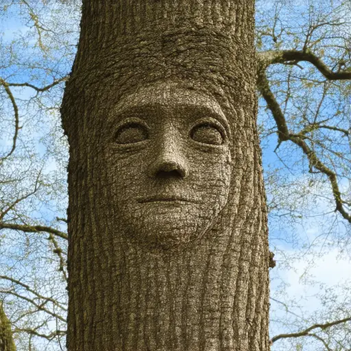</a><a class="ph" href="img/sd35-large/p008/vanilla/img_2.webp" target="_blank" rel="noopener">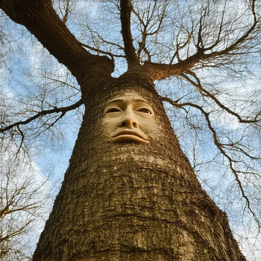</a><a class="ph" href="img/sd35-large/p008/vanilla/img_3.webp" target="_blank" rel="noopener">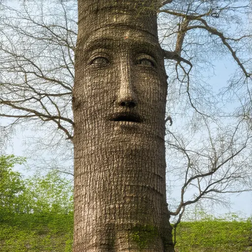</a></div><div class="stats"><span class="st" title="caption-Vendi on this prompt&#x27;s human axis (1-4, higher = more varied)"><b>capVendi</b>1.26</span><span class="st" title="VLM rater 1-5 on this prompt&#x27;s human axis (EV-scored)"><b>gridScore</b>1.88</span><span class="st" title="TPIPS distance on this prompt&#x27;s human axis (0-1, higher = more varied)"><b>TPIPS</b>0.156</span><span class="st" title="TPIPS axis SHARE: the axis distance divided by the same four images&#x27; &#x27;overall&#x27; (unconditioned) distance. Higher = more of what diversity there is sits on the axis. Values run below 1 for every method because conditioning on one axis always leaves fewer ways to differ — only the comparison against vanilla means anything."><b>TPIPS/o</b>0.620</span><span class="st" title="TPIPS axis distance MINUS the unconditioned distance on the same four images — the same comparison as TPIPS/o but as a difference. Negative for essentially every group, for the same reason the ratio is below 1. Prefer TPIPS/o: the offset between the two distances is multiplicative (their ratio is roughly constant at 0.73), so this difference ends up tracking the unconditioned distance with a flipped sign (r = −0.68) and penalises a method for being diverse at all. Shown for completeness."><b>TPIPS−o</b>-0.095</span><span class="st" title="DINOv2-Vendi — axis-BLIND diversity, for contrast (1-4)"><b>DINO</b>2.39</span></div></div><div class="method" data-ord="1" data-vals="{&quot;capvendi&quot;: 1.7292869091033936, &quot;gridscore&quot;: 4.939692309471846, &quot;tpips&quot;: 0.29698795080184937, &quot;tpips_o&quot;: 0.7360587744282547, &quot;tpips\u2212o&quot;: -0.10649606585502625, &quot;dino&quot;: 3.5812149047851562}"><h3>Prompt expand<span class="k">prompt_expand</span></h3><div class="grid2"><a class="ph" href="img/sd35-large/p008/prompt_expand/img_0.webp" target="_blank" rel="noopener" title="A majestic white oak tree with a serene, weathered human face carved into its massive trunk, standing in a sunlit autumn forest with fallen leaves, highly detailed, sharp focus, clean composition, high quality, high resolution."></a><a class="ph" href="img/sd35-large/p008/prompt_expand/img_1.webp" target="_blank" rel="noopener" title="A tall, slender pine tree with a calm, moss-covered face formed by the natural patterns of its bark, stretching towards a clear blue sky in a misty mountain meadow, highly detailed, sharp focus, clean composition, high quality, high resolution."></a><a class="ph" href="img/sd35-large/p008/prompt_expand/img_2.webp" target="_blank" rel="noopener" title="A gnarled, twisted maple tree with a mischievous, grinning face visible among its vibrant green leaves and swirling roots, situated in a serene Japanese garden with raked gravel, highly detailed, sharp focus, clean composition, high quality, high resolution."></a><a class="ph" href="img/sd35-large/p008/prompt_expand/img_3.webp" target="_blank" rel="noopener" title="A massive, ancient redwood tree with a wise, solemn face emerging from its smooth, fluted bark, towering over a bioluminescent forest floor at twilight, highly detailed, sharp focus, clean composition, high quality, high resolution."></a></div><div class="stats"><span class="st up" title="caption-Vendi on this prompt&#x27;s human axis (1-4, higher = more varied)"><b>capVendi</b>1.73<i>+0.47</i></span><span class="st up" title="VLM rater 1-5 on this prompt&#x27;s human axis (EV-scored)"><b>gridScore</b>4.94<i>+3.06</i></span><span class="st up" title="TPIPS distance on this prompt&#x27;s human axis (0-1, higher = more varied)"><b>TPIPS</b>0.297<i>+0.141</i></span><span class="st up" title="TPIPS axis SHARE: the axis distance divided by the same four images&#x27; &#x27;overall&#x27; (unconditioned) distance. Higher = more of what diversity there is sits on the axis. Values run below 1 for every method because conditioning on one axis always leaves fewer ways to differ — only the comparison against vanilla means anything."><b>TPIPS/o</b>0.736<i>+0.116</i></span><span class="st dn" title="TPIPS axis distance MINUS the unconditioned distance on the same four images — the same comparison as TPIPS/o but as a difference. Negative for essentially every group, for the same reason the ratio is below 1. Prefer TPIPS/o: the offset between the two distances is multiplicative (their ratio is roughly constant at 0.73), so this difference ends up tracking the unconditioned distance with a flipped sign (r = −0.68) and penalises a method for being diverse at all. Shown for completeness."><b>TPIPS−o</b>-0.106<i>-0.011</i></span><span class="st up" title="DINOv2-Vendi — axis-BLIND diversity, for contrast (1-4)"><b>DINO</b>3.58<i>+1.19</i></span></div><details class="exp"><summary>expanded prompts</summary><ol><li>A majestic white oak tree with a serene, weathered human face carved into its massive trunk, standing in a sunlit autumn forest with fallen leaves, highly detailed, sharp focus, clean composition, high quality, high resolution.</li><li>A tall, slender pine tree with a calm, moss-covered face formed by the natural patterns of its bark, stretching towards a clear blue sky in a misty mountain meadow, highly detailed, sharp focus, clean composition, high quality, high resolution.</li><li>A gnarled, twisted maple tree with a mischievous, grinning face visible among its vibrant green leaves and swirling roots, situated in a serene Japanese garden with raked gravel, highly detailed, sharp focus, clean composition, high quality, high resolution.</li><li>A massive, ancient redwood tree with a wise, solemn face emerging from its smooth, fluted bark, towering over a bioluminescent forest floor at twilight, highly detailed, sharp focus, clean composition, high quality, high resolution.</li></ol></details></div><div class="method" data-ord="2" data-vals="{&quot;capvendi&quot;: 1.6433430910110474, &quot;gridscore&quot;: 4.639316990748725, &quot;tpips&quot;: 0.2651599943637848, &quot;tpips_o&quot;: 0.6747798619314056, &quot;tpips\u2212o&quot;: -0.12779778242111206, &quot;dino&quot;: 3.2901408672332764}"><h3>CADS<span class="k">cads</span></h3><div class="grid2"><a class="ph" href="img/sd35-large/p008/cads/img_0.webp" target="_blank" rel="noopener"></a><a class="ph" href="img/sd35-large/p008/cads/img_1.webp" target="_blank" rel="noopener"></a><a class="ph" href="img/sd35-large/p008/cads/img_2.webp" target="_blank" rel="noopener">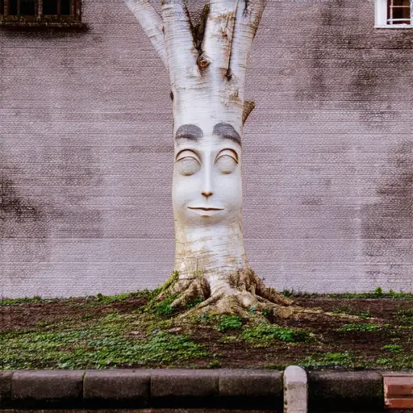</a><a class="ph" href="img/sd35-large/p008/cads/img_3.webp" target="_blank" rel="noopener">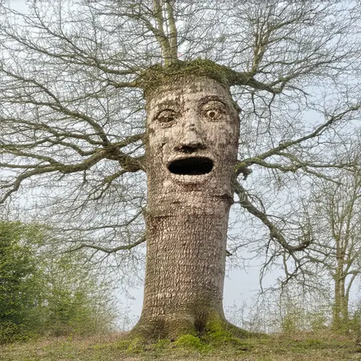</a></div><div class="stats"><span class="st up" title="caption-Vendi on this prompt&#x27;s human axis (1-4, higher = more varied)"><b>capVendi</b>1.64<i>+0.39</i></span><span class="st up" title="VLM rater 1-5 on this prompt&#x27;s human axis (EV-scored)"><b>gridScore</b>4.64<i>+2.76</i></span><span class="st up" title="TPIPS distance on this prompt&#x27;s human axis (0-1, higher = more varied)"><b>TPIPS</b>0.265<i>+0.110</i></span><span class="st up" title="TPIPS axis SHARE: the axis distance divided by the same four images&#x27; &#x27;overall&#x27; (unconditioned) distance. Higher = more of what diversity there is sits on the axis. Values run below 1 for every method because conditioning on one axis always leaves fewer ways to differ — only the comparison against vanilla means anything."><b>TPIPS/o</b>0.675<i>+0.055</i></span><span class="st dn" title="TPIPS axis distance MINUS the unconditioned distance on the same four images — the same comparison as TPIPS/o but as a difference. Negative for essentially every group, for the same reason the ratio is below 1. Prefer TPIPS/o: the offset between the two distances is multiplicative (their ratio is roughly constant at 0.73), so this difference ends up tracking the unconditioned distance with a flipped sign (r = −0.68) and penalises a method for being diverse at all. Shown for completeness."><b>TPIPS−o</b>-0.128<i>-0.033</i></span><span class="st up" title="DINOv2-Vendi — axis-BLIND diversity, for contrast (1-4)"><b>DINO</b>3.29<i>+0.90</i></span></div></div><div class="method" data-ord="3" data-vals="{&quot;capvendi&quot;: 1.2019639015197754, &quot;gridscore&quot;: 2.9126493576016133, &quot;tpips&quot;: 0.2480812817811966, &quot;tpips_o&quot;: 0.6182527778468916, &quot;tpips\u2212o&quot;: -0.15318061411380768, &quot;dino&quot;: 3.0040180683135986}"><h3>Group inference<span class="k">group_inference</span></h3><div class="grid2"><a class="ph" href="img/sd35-large/p008/group_inference/img_0.webp" target="_blank" rel="noopener"></a><a class="ph" href="img/sd35-large/p008/group_inference/img_1.webp" target="_blank" rel="noopener"></a><a class="ph" href="img/sd35-large/p008/group_inference/img_2.webp" target="_blank" rel="noopener">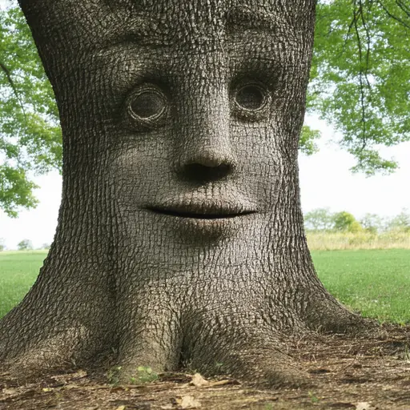</a><a class="ph" href="img/sd35-large/p008/group_inference/img_3.webp" target="_blank" rel="noopener">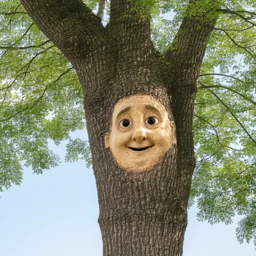</a></div><div class="stats"><span class="st dn" title="caption-Vendi on this prompt&#x27;s human axis (1-4, higher = more varied)"><b>capVendi</b>1.20<i>-0.05</i></span><span class="st up" title="VLM rater 1-5 on this prompt&#x27;s human axis (EV-scored)"><b>gridScore</b>2.91<i>+1.03</i></span><span class="st up" title="TPIPS distance on this prompt&#x27;s human axis (0-1, higher = more varied)"><b>TPIPS</b>0.248<i>+0.093</i></span><span class="st" title="TPIPS axis SHARE: the axis distance divided by the same four images&#x27; &#x27;overall&#x27; (unconditioned) distance. Higher = more of what diversity there is sits on the axis. Values run below 1 for every method because conditioning on one axis always leaves fewer ways to differ — only the comparison against vanilla means anything."><b>TPIPS/o</b>0.618<i>-0.002</i></span><span class="st dn" title="TPIPS axis distance MINUS the unconditioned distance on the same four images — the same comparison as TPIPS/o but as a difference. Negative for essentially every group, for the same reason the ratio is below 1. Prefer TPIPS/o: the offset between the two distances is multiplicative (their ratio is roughly constant at 0.73), so this difference ends up tracking the unconditioned distance with a flipped sign (r = −0.68) and penalises a method for being diverse at all. Shown for completeness."><b>TPIPS−o</b>-0.153<i>-0.058</i></span><span class="st up" title="DINOv2-Vendi — axis-BLIND diversity, for contrast (1-4)"><b>DINO</b>3.00<i>+0.62</i></span></div></div></div></article><article class="card hide" data-model="sd35-large" style="--c:#63c7a6" data-ord="1" data-sort="{&quot;capvendi&quot;: 1.7508201599121094, &quot;gridscore&quot;: 4.657314846720477, &quot;tpips&quot;: 0.24235613644123077, &quot;tpips_o&quot;: 0.9893019048580111, &quot;tpips\u2212o&quot;: -0.002620786428451538, &quot;dino&quot;: 2.2746076583862305}"><div class="card-head"><span class="pid">p009</span><span class="prompt">View at an intersection with a Phillips 66 on one corner and mountains in the distance.</span><span class="axis">Different times of the day like sunrise</span><span class="tag"><span class="dot"></span>sd35-large</span></div><div class="methods"><div class="method" data-ord="0" data-vals="{&quot;capvendi&quot;: 1.4426836967468262, &quot;gridscore&quot;: 2.4698569552635443, &quot;tpips&quot;: 0.07460402697324753, &quot;tpips_o&quot;: 0.4767523554602121, &quot;tpips\u2212o&quot;: -0.08187978714704514, &quot;dino&quot;: 1.8558080196380615}"><h3>Vanilla<span class="k">vanilla</span></h3><div class="grid2"><a class="ph" href="img/sd35-large/p009/vanilla/img_0.webp" target="_blank" rel="noopener">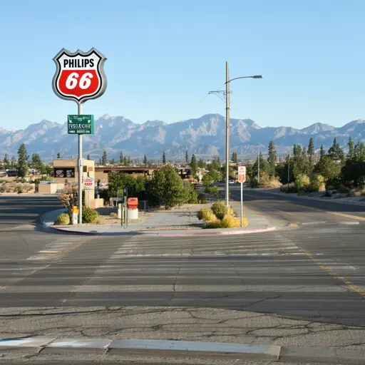</a><a class="ph" href="img/sd35-large/p009/vanilla/img_1.webp" target="_blank" rel="noopener">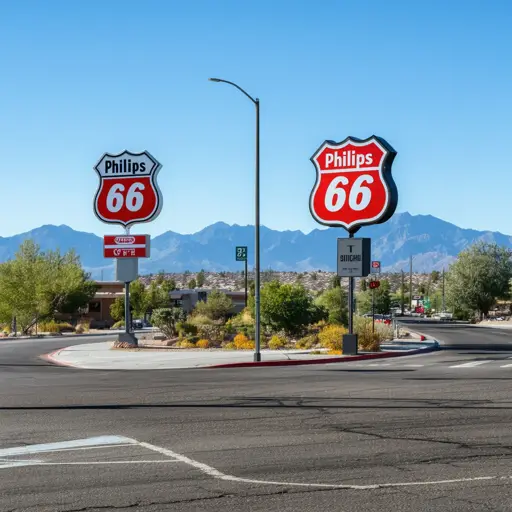</a><a class="ph" href="img/sd35-large/p009/vanilla/img_2.webp" target="_blank" rel="noopener">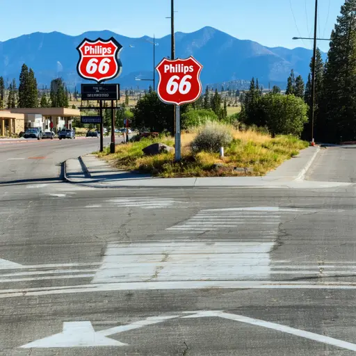</a><a class="ph" href="img/sd35-large/p009/vanilla/img_3.webp" target="_blank" rel="noopener">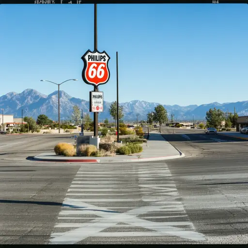</a></div><div class="stats"><span class="st" title="caption-Vendi on this prompt&#x27;s human axis (1-4, higher = more varied)"><b>capVendi</b>1.44</span><span class="st" title="VLM rater 1-5 on this prompt&#x27;s human axis (EV-scored)"><b>gridScore</b>2.47</span><span class="st" title="TPIPS distance on this prompt&#x27;s human axis (0-1, higher = more varied)"><b>TPIPS</b>0.075</span><span class="st" title="TPIPS axis SHARE: the axis distance divided by the same four images&#x27; &#x27;overall&#x27; (unconditioned) distance. Higher = more of what diversity there is sits on the axis. Values run below 1 for every method because conditioning on one axis always leaves fewer ways to differ — only the comparison against vanilla means anything."><b>TPIPS/o</b>0.477</span><span class="st" title="TPIPS axis distance MINUS the unconditioned distance on the same four images — the same comparison as TPIPS/o but as a difference. Negative for essentially every group, for the same reason the ratio is below 1. Prefer TPIPS/o: the offset between the two distances is multiplicative (their ratio is roughly constant at 0.73), so this difference ends up tracking the unconditioned distance with a flipped sign (r = −0.68) and penalises a method for being diverse at all. Shown for completeness."><b>TPIPS−o</b>-0.082</span><span class="st" title="DINOv2-Vendi — axis-BLIND diversity, for contrast (1-4)"><b>DINO</b>1.86</span></div></div><div class="method" data-ord="1" data-vals="{&quot;capvendi&quot;: 1.7508201599121094, &quot;gridscore&quot;: 4.657314846720477, &quot;tpips&quot;: 0.24235613644123077, &quot;tpips_o&quot;: 0.9893019048580111, &quot;tpips\u2212o&quot;: -0.002620786428451538, &quot;dino&quot;: 2.2746076583862305}"><h3>Prompt expand<span class="k">prompt_expand</span></h3><div class="grid2"><a class="ph" href="img/sd35-large/p009/prompt_expand/img_0.webp" target="_blank" rel="noopener" title="A view of a quiet four-way intersection at golden sunrise, featuring a Phillips 66 gas station on the left corner, the station&#x27;s red and white logo glowing against the pale morning sky, with rugged purple mountains silhouetted in the distance, highly detailed, sharp focus, clean composition, high quality, high resolution.">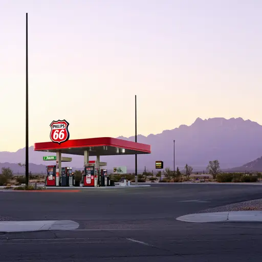</a><a class="ph" href="img/sd35-large/p009/prompt_expand/img_1.webp" target="_blank" rel="noopener" title="A bright midday scene at a busy street corner where a Phillips 66 station stands on the right side, casting short shadows, with a clear blue sky above and distant snow-capped mountains visible on the horizon, highly detailed, sharp focus, clean composition, high quality, high resolution.">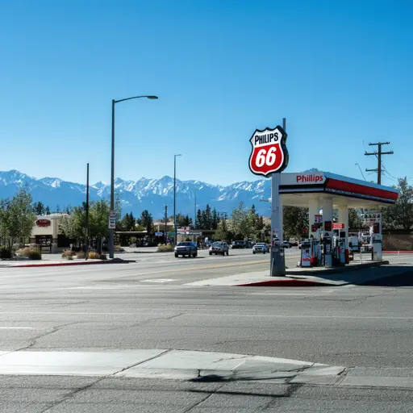</a><a class="ph" href="img/sd35-large/p009/prompt_expand/img_2.webp" target="_blank" rel="noopener" title="An intersection illuminated by the soft, pink and orange light of sunset, with a Phillips 66 station on the far side of the road, its lights just beginning to twinkle, framed by the warm glow of the setting sun and dark mountain peaks in the background, highly detailed, sharp focus, clean composition, high quality, high resolution.">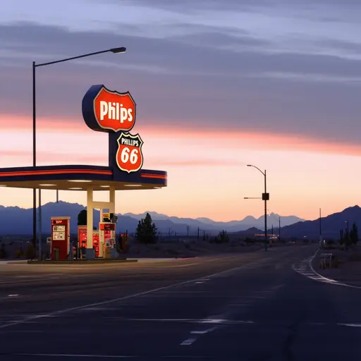</a><a class="ph" href="img/sd35-large/p009/prompt_expand/img_3.webp" target="_blank" rel="noopener" title="A twilight view at an intersection just after sunset, where a Phillips 66 station on the corner reflects the fading blue hour light, with deep indigo mountains fading into the night sky in the far distance, highly detailed, sharp focus, clean composition, high quality, high resolution.">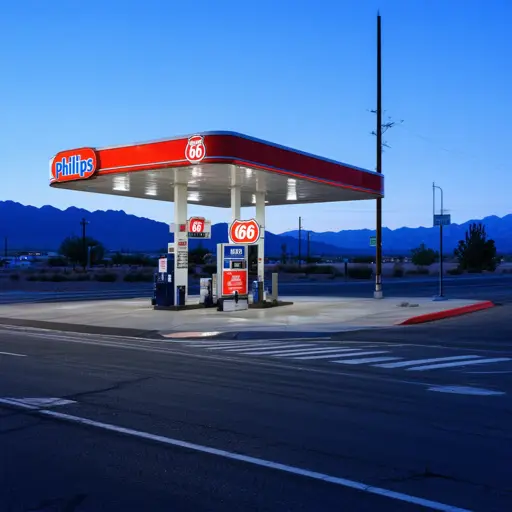</a></div><div class="stats"><span class="st up" title="caption-Vendi on this prompt&#x27;s human axis (1-4, higher = more varied)"><b>capVendi</b>1.75<i>+0.31</i></span><span class="st up" title="VLM rater 1-5 on this prompt&#x27;s human axis (EV-scored)"><b>gridScore</b>4.66<i>+2.19</i></span><span class="st up" title="TPIPS distance on this prompt&#x27;s human axis (0-1, higher = more varied)"><b>TPIPS</b>0.242<i>+0.168</i></span><span class="st up" title="TPIPS axis SHARE: the axis distance divided by the same four images&#x27; &#x27;overall&#x27; (unconditioned) distance. Higher = more of what diversity there is sits on the axis. Values run below 1 for every method because conditioning on one axis always leaves fewer ways to differ — only the comparison against vanilla means anything."><b>TPIPS/o</b>0.989<i>+0.513</i></span><span class="st up" title="TPIPS axis distance MINUS the unconditioned distance on the same four images — the same comparison as TPIPS/o but as a difference. Negative for essentially every group, for the same reason the ratio is below 1. Prefer TPIPS/o: the offset between the two distances is multiplicative (their ratio is roughly constant at 0.73), so this difference ends up tracking the unconditioned distance with a flipped sign (r = −0.68) and penalises a method for being diverse at all. Shown for completeness."><b>TPIPS−o</b>-0.003<i>+0.079</i></span><span class="st up" title="DINOv2-Vendi — axis-BLIND diversity, for contrast (1-4)"><b>DINO</b>2.27<i>+0.42</i></span></div><details class="exp"><summary>expanded prompts</summary><ol><li>A view of a quiet four-way intersection at golden sunrise, featuring a Phillips 66 gas station on the left corner, the station&#x27;s red and white logo glowing against the pale morning sky, with rugged purple mountains silhouetted in the distance, highly detailed, sharp focus, clean composition, high quality, high resolution.</li><li>A bright midday scene at a busy street corner where a Phillips 66 station stands on the right side, casting short shadows, with a clear blue sky above and distant snow-capped mountains visible on the horizon, highly detailed, sharp focus, clean composition, high quality, high resolution.</li><li>An intersection illuminated by the soft, pink and orange light of sunset, with a Phillips 66 station on the far side of the road, its lights just beginning to twinkle, framed by the warm glow of the setting sun and dark mountain peaks in the background, highly detailed, sharp focus, clean composition, high quality, high resolution.</li><li>A twilight view at an intersection just after sunset, where a Phillips 66 station on the corner reflects the fading blue hour light, with deep indigo mountains fading into the night sky in the far distance, highly detailed, sharp focus, clean composition, high quality, high resolution.</li></ol></details></div><div class="method" data-ord="2" data-vals="{&quot;capvendi&quot;: 1.7000930309295654, &quot;gridscore&quot;: 4.182857799487492, &quot;tpips&quot;: 0.1295030415058136, &quot;tpips_o&quot;: 0.451192674096278, &quot;tpips\u2212o&quot;: -0.15752077102661133, &quot;dino&quot;: 2.710125207901001}"><h3>CADS<span class="k">cads</span></h3><div class="grid2"><a class="ph" href="img/sd35-large/p009/cads/img_0.webp" target="_blank" rel="noopener">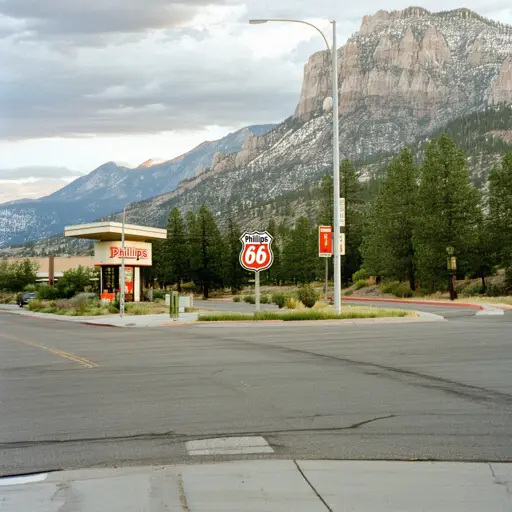</a><a class="ph" href="img/sd35-large/p009/cads/img_1.webp" target="_blank" rel="noopener">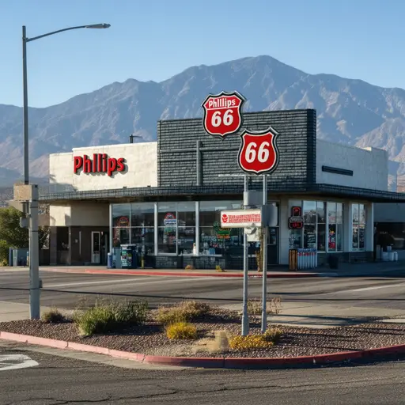</a><a class="ph" href="img/sd35-large/p009/cads/img_2.webp" target="_blank" rel="noopener">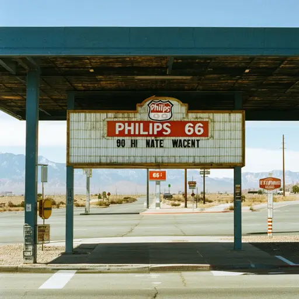</a><a class="ph" href="img/sd35-large/p009/cads/img_3.webp" target="_blank" rel="noopener">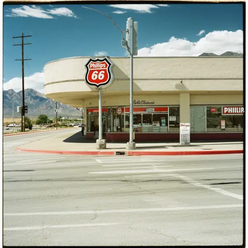</a></div><div class="stats"><span class="st up" title="caption-Vendi on this prompt&#x27;s human axis (1-4, higher = more varied)"><b>capVendi</b>1.70<i>+0.26</i></span><span class="st up" title="VLM rater 1-5 on this prompt&#x27;s human axis (EV-scored)"><b>gridScore</b>4.18<i>+1.71</i></span><span class="st up" title="TPIPS distance on this prompt&#x27;s human axis (0-1, higher = more varied)"><b>TPIPS</b>0.130<i>+0.055</i></span><span class="st dn" title="TPIPS axis SHARE: the axis distance divided by the same four images&#x27; &#x27;overall&#x27; (unconditioned) distance. Higher = more of what diversity there is sits on the axis. Values run below 1 for every method because conditioning on one axis always leaves fewer ways to differ — only the comparison against vanilla means anything."><b>TPIPS/o</b>0.451<i>-0.026</i></span><span class="st dn" title="TPIPS axis distance MINUS the unconditioned distance on the same four images — the same comparison as TPIPS/o but as a difference. Negative for essentially every group, for the same reason the ratio is below 1. Prefer TPIPS/o: the offset between the two distances is multiplicative (their ratio is roughly constant at 0.73), so this difference ends up tracking the unconditioned distance with a flipped sign (r = −0.68) and penalises a method for being diverse at all. Shown for completeness."><b>TPIPS−o</b>-0.158<i>-0.076</i></span><span class="st up" title="DINOv2-Vendi — axis-BLIND diversity, for contrast (1-4)"><b>DINO</b>2.71<i>+0.85</i></span></div></div><div class="method" data-ord="3" data-vals="{&quot;capvendi&quot;: 1.600361943244934, &quot;gridscore&quot;: 4.236923594602759, &quot;tpips&quot;: 0.06353440880775452, &quot;tpips_o&quot;: 0.31917297668268424, &quot;tpips\u2212o&quot;: -0.13552507758140564, &quot;dino&quot;: 1.715254306793213}"><h3>Group inference<span class="k">group_inference</span></h3><div class="grid2"><a class="ph" href="img/sd35-large/p009/group_inference/img_0.webp" target="_blank" rel="noopener">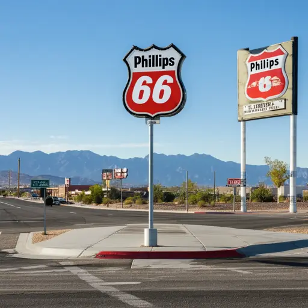</a><a class="ph" href="img/sd35-large/p009/group_inference/img_1.webp" target="_blank" rel="noopener">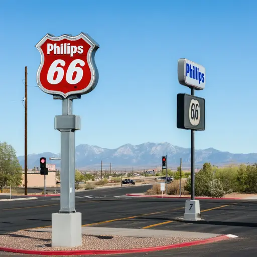</a><a class="ph" href="img/sd35-large/p009/group_inference/img_2.webp" target="_blank" rel="noopener">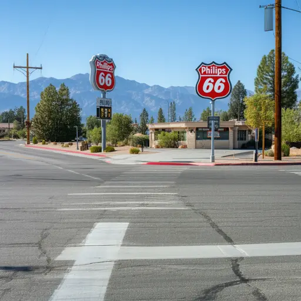</a><a class="ph" href="img/sd35-large/p009/group_inference/img_3.webp" target="_blank" rel="noopener">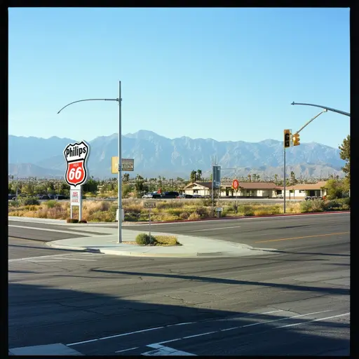</a></div><div class="stats"><span class="st up" title="caption-Vendi on this prompt&#x27;s human axis (1-4, higher = more varied)"><b>capVendi</b>1.60<i>+0.16</i></span><span class="st up" title="VLM rater 1-5 on this prompt&#x27;s human axis (EV-scored)"><b>gridScore</b>4.24<i>+1.77</i></span><span class="st dn" title="TPIPS distance on this prompt&#x27;s human axis (0-1, higher = more varied)"><b>TPIPS</b>0.064<i>-0.011</i></span><span class="st dn" title="TPIPS axis SHARE: the axis distance divided by the same four images&#x27; &#x27;overall&#x27; (unconditioned) distance. Higher = more of what diversity there is sits on the axis. Values run below 1 for every method because conditioning on one axis always leaves fewer ways to differ — only the comparison against vanilla means anything."><b>TPIPS/o</b>0.319<i>-0.158</i></span><span class="st dn" title="TPIPS axis distance MINUS the unconditioned distance on the same four images — the same comparison as TPIPS/o but as a difference. Negative for essentially every group, for the same reason the ratio is below 1. Prefer TPIPS/o: the offset between the two distances is multiplicative (their ratio is roughly constant at 0.73), so this difference ends up tracking the unconditioned distance with a flipped sign (r = −0.68) and penalises a method for being diverse at all. Shown for completeness."><b>TPIPS−o</b>-0.136<i>-0.054</i></span><span class="st dn" title="DINOv2-Vendi — axis-BLIND diversity, for contrast (1-4)"><b>DINO</b>1.72<i>-0.14</i></span></div></div></div></article><article class="card hide" data-model="sd35-large" style="--c:#63c7a6" data-ord="2" data-sort="{&quot;capvendi&quot;: 2.9600160121917725, &quot;gridscore&quot;: 4.999812706269755, &quot;tpips&quot;: 0.34319832921028137, &quot;tpips_o&quot;: 0.5947035360919679, &quot;tpips\u2212o&quot;: -0.23389312624931335, &quot;dino&quot;: 3.986875057220459}"><div class="card-head"><span class="pid">p011</span><span class="prompt">The image depicts two complementary forces present in life.</span><span class="axis">the two forces should be clearly identifiable, not just different colours</span><span class="tag"><span class="dot"></span>sd35-large</span></div><div class="methods"><div class="method" data-ord="0" data-vals="{&quot;capvendi&quot;: 2.5213253498077393, &quot;gridscore&quot;: 4.900186952032296, &quot;tpips&quot;: 0.2464386224746704, &quot;tpips_o&quot;: 0.6233880157122788, &quot;tpips\u2212o&quot;: -0.14888277649879456, &quot;dino&quot;: 2.8778634071350098}"><h3>Vanilla<span class="k">vanilla</span></h3><div class="grid2"><a class="ph" href="img/sd35-large/p011/vanilla/img_0.webp" target="_blank" rel="noopener"></a><a class="ph" href="img/sd35-large/p011/vanilla/img_1.webp" target="_blank" rel="noopener"></a><a class="ph" href="img/sd35-large/p011/vanilla/img_2.webp" target="_blank" rel="noopener"></a><a class="ph" href="img/sd35-large/p011/vanilla/img_3.webp" target="_blank" rel="noopener"></a></div><div class="stats"><span class="st" title="caption-Vendi on this prompt&#x27;s human axis (1-4, higher = more varied)"><b>capVendi</b>2.52</span><span class="st" title="VLM rater 1-5 on this prompt&#x27;s human axis (EV-scored)"><b>gridScore</b>4.90</span><span class="st" title="TPIPS distance on this prompt&#x27;s human axis (0-1, higher = more varied)"><b>TPIPS</b>0.246</span><span class="st" title="TPIPS axis SHARE: the axis distance divided by the same four images&#x27; &#x27;overall&#x27; (unconditioned) distance. Higher = more of what diversity there is sits on the axis. Values run below 1 for every method because conditioning on one axis always leaves fewer ways to differ — only the comparison against vanilla means anything."><b>TPIPS/o</b>0.623</span><span class="st" title="TPIPS axis distance MINUS the unconditioned distance on the same four images — the same comparison as TPIPS/o but as a difference. Negative for essentially every group, for the same reason the ratio is below 1. Prefer TPIPS/o: the offset between the two distances is multiplicative (their ratio is roughly constant at 0.73), so this difference ends up tracking the unconditioned distance with a flipped sign (r = −0.68) and penalises a method for being diverse at all. Shown for completeness."><b>TPIPS−o</b>-0.149</span><span class="st" title="DINOv2-Vendi — axis-BLIND diversity, for contrast (1-4)"><b>DINO</b>2.88</span></div></div><div class="method" data-ord="1" data-vals="{&quot;capvendi&quot;: 2.9600160121917725, &quot;gridscore&quot;: 4.999812706269755, &quot;tpips&quot;: 0.34319832921028137, &quot;tpips_o&quot;: 0.5947035360919679, &quot;tpips\u2212o&quot;: -0.23389312624931335, &quot;dino&quot;: 3.986875057220459}"><h3>Prompt expand<span class="k">prompt_expand</span></h3><div class="grid2"><a class="ph" href="img/sd35-large/p011/prompt_expand/img_0.webp" target="_blank" rel="noopener" title="A split landscape illustrating dual forces: on the left, a raging wildfire consuming dry oak trees under a dark red sky, and on the right, a calm river of cool blue water nourishing lush green willows under a pale morning sun, highly detailed, sharp focus, clean composition, high quality, high resolution.">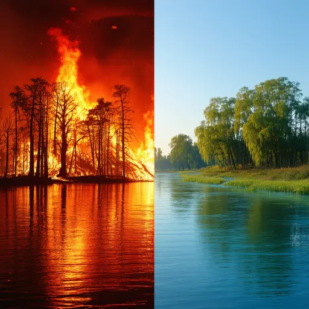</a><a class="ph" href="img/sd35-large/p011/prompt_expand/img_1.webp" target="_blank" rel="noopener" title="A close-up of two hands interacting: one hand wears black leather gloves and crushes a blooming white rose until it falls apart, while the other hand wears white silk gloves and gently cradles a sharp, jagged shard of dark obsidian, highly detailed, sharp focus, clean composition, high quality, high resolution."></a><a class="ph" href="img/sd35-large/p011/prompt_expand/img_2.webp" target="_blank" rel="noopener" title="A surreal forest scene showing opposing elements: a massive, gnarled tree with deep brown bark and twisted roots stands parched and leafless in a desert sun, while beside it, a sleek, silver sapling with vibrant emerald leaves and a translucent trunk thrives in a misty, rain-drenched shadow, highly detailed, sharp focus, clean composition, high quality, high resolution."></a><a class="ph" href="img/sd35-large/p011/prompt_expand/img_3.webp" target="_blank" rel="noopener" title="A dramatic seascape divided down the middle: the left side is a violent storm with crashing grey-white waves and lightning striking a dark cliff, while the right side is a tranquil, glassy surface of deep turquoise water reflecting a golden sunset over a smooth coral reef, highly detailed, sharp focus, clean composition, high quality, high resolution."></a></div><div class="stats"><span class="st up" title="caption-Vendi on this prompt&#x27;s human axis (1-4, higher = more varied)"><b>capVendi</b>2.96<i>+0.44</i></span><span class="st up" title="VLM rater 1-5 on this prompt&#x27;s human axis (EV-scored)"><b>gridScore</b>5.00<i>+0.10</i></span><span class="st up" title="TPIPS distance on this prompt&#x27;s human axis (0-1, higher = more varied)"><b>TPIPS</b>0.343<i>+0.097</i></span><span class="st dn" title="TPIPS axis SHARE: the axis distance divided by the same four images&#x27; &#x27;overall&#x27; (unconditioned) distance. Higher = more of what diversity there is sits on the axis. Values run below 1 for every method because conditioning on one axis always leaves fewer ways to differ — only the comparison against vanilla means anything."><b>TPIPS/o</b>0.595<i>-0.029</i></span><span class="st dn" title="TPIPS axis distance MINUS the unconditioned distance on the same four images — the same comparison as TPIPS/o but as a difference. Negative for essentially every group, for the same reason the ratio is below 1. Prefer TPIPS/o: the offset between the two distances is multiplicative (their ratio is roughly constant at 0.73), so this difference ends up tracking the unconditioned distance with a flipped sign (r = −0.68) and penalises a method for being diverse at all. Shown for completeness."><b>TPIPS−o</b>-0.234<i>-0.085</i></span><span class="st up" title="DINOv2-Vendi — axis-BLIND diversity, for contrast (1-4)"><b>DINO</b>3.99<i>+1.11</i></span></div><details class="exp"><summary>expanded prompts</summary><ol><li>A split landscape illustrating dual forces: on the left, a raging wildfire consuming dry oak trees under a dark red sky, and on the right, a calm river of cool blue water nourishing lush green willows under a pale morning sun, highly detailed, sharp focus, clean composition, high quality, high resolution.</li><li>A close-up of two hands interacting: one hand wears black leather gloves and crushes a blooming white rose until it falls apart, while the other hand wears white silk gloves and gently cradles a sharp, jagged shard of dark obsidian, highly detailed, sharp focus, clean composition, high quality, high resolution.</li><li>A surreal forest scene showing opposing elements: a massive, gnarled tree with deep brown bark and twisted roots stands parched and leafless in a desert sun, while beside it, a sleek, silver sapling with vibrant emerald leaves and a translucent trunk thrives in a misty, rain-drenched shadow, highly detailed, sharp focus, clean composition, high quality, high resolution.</li><li>A dramatic seascape divided down the middle: the left side is a violent storm with crashing grey-white waves and lightning striking a dark cliff, while the right side is a tranquil, glassy surface of deep turquoise water reflecting a golden sunset over a smooth coral reef, highly detailed, sharp focus, clean composition, high quality, high resolution.</li></ol></details></div><div class="method" data-ord="2" data-vals="{&quot;capvendi&quot;: 3.0651490688323975, &quot;gridscore&quot;: 4.975828041675222, &quot;tpips&quot;: 0.3516561686992645, &quot;tpips_o&quot;: 0.6187845822483281, &quot;tpips\u2212o&quot;: -0.2166452705860138, &quot;dino&quot;: 3.8515548706054688}"><h3>CADS<span class="k">cads</span></h3><div class="grid2"><a class="ph" href="img/sd35-large/p011/cads/img_0.webp" target="_blank" rel="noopener">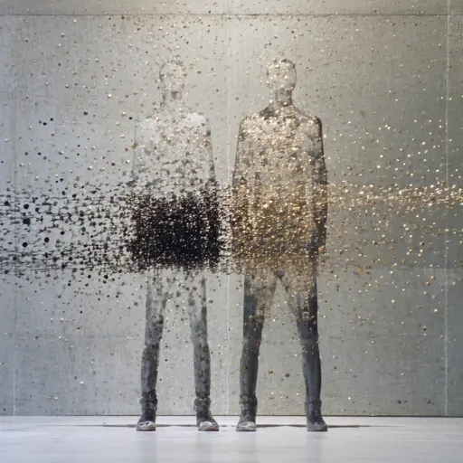</a><a class="ph" href="img/sd35-large/p011/cads/img_1.webp" target="_blank" rel="noopener">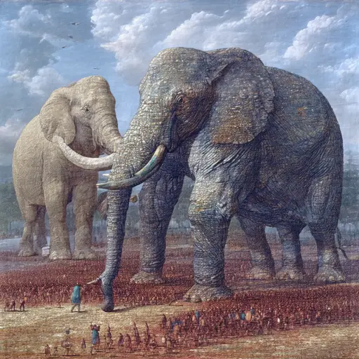</a><a class="ph" href="img/sd35-large/p011/cads/img_2.webp" target="_blank" rel="noopener">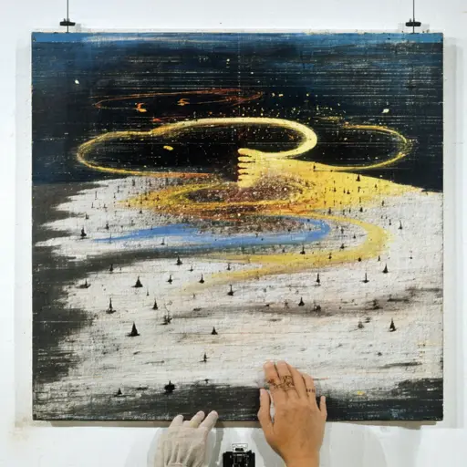</a><a class="ph" href="img/sd35-large/p011/cads/img_3.webp" target="_blank" rel="noopener">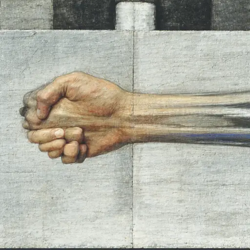</a></div><div class="stats"><span class="st up" title="caption-Vendi on this prompt&#x27;s human axis (1-4, higher = more varied)"><b>capVendi</b>3.07<i>+0.54</i></span><span class="st up" title="VLM rater 1-5 on this prompt&#x27;s human axis (EV-scored)"><b>gridScore</b>4.98<i>+0.08</i></span><span class="st up" title="TPIPS distance on this prompt&#x27;s human axis (0-1, higher = more varied)"><b>TPIPS</b>0.352<i>+0.105</i></span><span class="st" title="TPIPS axis SHARE: the axis distance divided by the same four images&#x27; &#x27;overall&#x27; (unconditioned) distance. Higher = more of what diversity there is sits on the axis. Values run below 1 for every method because conditioning on one axis always leaves fewer ways to differ — only the comparison against vanilla means anything."><b>TPIPS/o</b>0.619<i>-0.005</i></span><span class="st dn" title="TPIPS axis distance MINUS the unconditioned distance on the same four images — the same comparison as TPIPS/o but as a difference. Negative for essentially every group, for the same reason the ratio is below 1. Prefer TPIPS/o: the offset between the two distances is multiplicative (their ratio is roughly constant at 0.73), so this difference ends up tracking the unconditioned distance with a flipped sign (r = −0.68) and penalises a method for being diverse at all. Shown for completeness."><b>TPIPS−o</b>-0.217<i>-0.068</i></span><span class="st up" title="DINOv2-Vendi — axis-BLIND diversity, for contrast (1-4)"><b>DINO</b>3.85<i>+0.97</i></span></div></div><div class="method" data-ord="3" data-vals="{&quot;capvendi&quot;: 2.8476431369781494, &quot;gridscore&quot;: 4.976765066257628, &quot;tpips&quot;: 0.37007856369018555, &quot;tpips_o&quot;: 0.6542914240647858, &quot;tpips\u2212o&quot;: -0.19553875923156738, &quot;dino&quot;: 3.7525384426116943}"><h3>Group inference<span class="k">group_inference</span></h3><div class="grid2"><a class="ph" href="img/sd35-large/p011/group_inference/img_0.webp" target="_blank" rel="noopener"></a><a class="ph" href="img/sd35-large/p011/group_inference/img_1.webp" target="_blank" rel="noopener"></a><a class="ph" href="img/sd35-large/p011/group_inference/img_2.webp" target="_blank" rel="noopener"></a><a class="ph" href="img/sd35-large/p011/group_inference/img_3.webp" target="_blank" rel="noopener"></a></div><div class="stats"><span class="st up" title="caption-Vendi on this prompt&#x27;s human axis (1-4, higher = more varied)"><b>capVendi</b>2.85<i>+0.33</i></span><span class="st up" title="VLM rater 1-5 on this prompt&#x27;s human axis (EV-scored)"><b>gridScore</b>4.98<i>+0.08</i></span><span class="st up" title="TPIPS distance on this prompt&#x27;s human axis (0-1, higher = more varied)"><b>TPIPS</b>0.370<i>+0.124</i></span><span class="st up" title="TPIPS axis SHARE: the axis distance divided by the same four images&#x27; &#x27;overall&#x27; (unconditioned) distance. Higher = more of what diversity there is sits on the axis. Values run below 1 for every method because conditioning on one axis always leaves fewer ways to differ — only the comparison against vanilla means anything."><b>TPIPS/o</b>0.654<i>+0.031</i></span><span class="st dn" title="TPIPS axis distance MINUS the unconditioned distance on the same four images — the same comparison as TPIPS/o but as a difference. Negative for essentially every group, for the same reason the ratio is below 1. Prefer TPIPS/o: the offset between the two distances is multiplicative (their ratio is roughly constant at 0.73), so this difference ends up tracking the unconditioned distance with a flipped sign (r = −0.68) and penalises a method for being diverse at all. Shown for completeness."><b>TPIPS−o</b>-0.196<i>-0.047</i></span><span class="st up" title="DINOv2-Vendi — axis-BLIND diversity, for contrast (1-4)"><b>DINO</b>3.75<i>+0.87</i></span></div></div></div></article><article class="card hide" data-model="sd35-large" style="--c:#63c7a6" data-ord="3" data-sort="{&quot;capvendi&quot;: 2.5691416263580322, &quot;gridscore&quot;: 4.999933151013047, &quot;tpips&quot;: 0.42784619331359863, &quot;tpips_o&quot;: 0.6922545759927847, &quot;tpips\u2212o&quot;: -0.1902012825012207, &quot;dino&quot;: 3.8878026008605957}"><div class="card-head"><span class="pid">p012</span><span class="prompt">A cautionary scene.</span><span class="axis">the cautionary aspect should be obvious</span><span class="tag"><span class="dot"></span>sd35-large</span></div><div class="methods"><div class="method" data-ord="0" data-vals="{&quot;capvendi&quot;: 2.9154062271118164, &quot;gridscore&quot;: 3.518269217959964, &quot;tpips&quot;: 0.3384225368499756, &quot;tpips_o&quot;: 0.5841537392019347, &quot;tpips\u2212o&quot;: -0.24091559648513794, &quot;dino&quot;: 3.9708526134490967}"><h3>Vanilla<span class="k">vanilla</span></h3><div class="grid2"><a class="ph" href="img/sd35-large/p012/vanilla/img_0.webp" target="_blank" rel="noopener">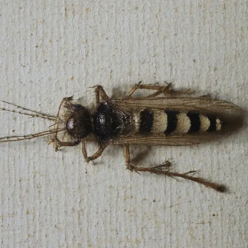</a><a class="ph" href="img/sd35-large/p012/vanilla/img_1.webp" target="_blank" rel="noopener">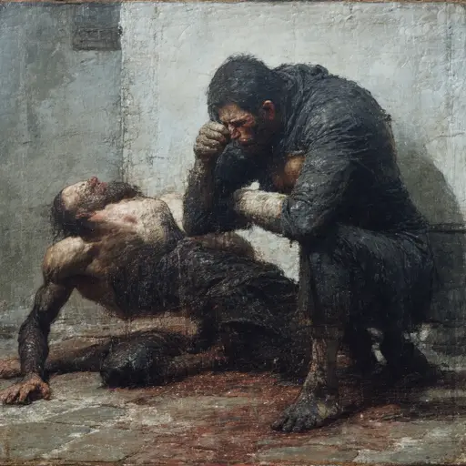</a><a class="ph" href="img/sd35-large/p012/vanilla/img_2.webp" target="_blank" rel="noopener">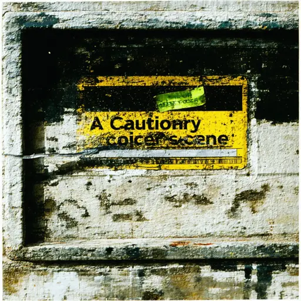</a><a class="ph" href="img/sd35-large/p012/vanilla/img_3.webp" target="_blank" rel="noopener">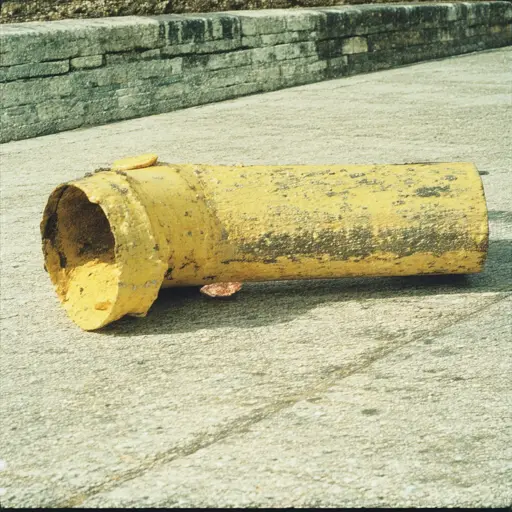</a></div><div class="stats"><span class="st" title="caption-Vendi on this prompt&#x27;s human axis (1-4, higher = more varied)"><b>capVendi</b>2.92</span><span class="st" title="VLM rater 1-5 on this prompt&#x27;s human axis (EV-scored)"><b>gridScore</b>3.52</span><span class="st" title="TPIPS distance on this prompt&#x27;s human axis (0-1, higher = more varied)"><b>TPIPS</b>0.338</span><span class="st" title="TPIPS axis SHARE: the axis distance divided by the same four images&#x27; &#x27;overall&#x27; (unconditioned) distance. Higher = more of what diversity there is sits on the axis. Values run below 1 for every method because conditioning on one axis always leaves fewer ways to differ — only the comparison against vanilla means anything."><b>TPIPS/o</b>0.584</span><span class="st" title="TPIPS axis distance MINUS the unconditioned distance on the same four images — the same comparison as TPIPS/o but as a difference. Negative for essentially every group, for the same reason the ratio is below 1. Prefer TPIPS/o: the offset between the two distances is multiplicative (their ratio is roughly constant at 0.73), so this difference ends up tracking the unconditioned distance with a flipped sign (r = −0.68) and penalises a method for being diverse at all. Shown for completeness."><b>TPIPS−o</b>-0.241</span><span class="st" title="DINOv2-Vendi — axis-BLIND diversity, for contrast (1-4)"><b>DINO</b>3.97</span></div></div><div class="method" data-ord="1" data-vals="{&quot;capvendi&quot;: 2.5691416263580322, &quot;gridscore&quot;: 4.999933151013047, &quot;tpips&quot;: 0.42784619331359863, &quot;tpips_o&quot;: 0.6922545759927847, &quot;tpips\u2212o&quot;: -0.1902012825012207, &quot;dino&quot;: 3.8878026008605957}"><h3>Prompt expand<span class="k">prompt_expand</span></h3><div class="grid2"><a class="ph" href="img/sd35-large/p012/prompt_expand/img_0.webp" target="_blank" rel="noopener" title="A firefighter rushing through a smoke-filled hallway, slipping on water from a ruptured pipe while fighting a blaze, highlighting the danger of ignoring safety protocols, highly detailed, sharp focus, clean composition, high quality, high resolution."></a><a class="ph" href="img/sd35-large/p012/prompt_expand/img_1.webp" target="_blank" rel="noopener" title="A cyclist speeding past a red stop sign at a busy intersection, swerving narrowly to avoid an oncoming delivery truck, illustrating the peril of running traffic signals, highly detailed, sharp focus, clean composition, high quality, high resolution.">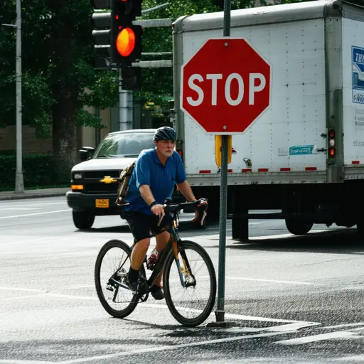</a><a class="ph" href="img/sd35-large/p012/prompt_expand/img_2.webp" target="_blank" rel="noopener" title="A construction worker standing on a rickety steel beam without a harness, looking down from a dizzying height as the metal groans under weight, depicting the lethal risk of skipping safety gear, highly detailed, sharp focus, clean composition, high quality, high resolution."></a><a class="ph" href="img/sd35-large/p012/prompt_expand/img_3.webp" target="_blank" rel="noopener" title="A child reaching for an exposed, humming electrical socket in a dimly lit kitchen, standing inches away from a visible electric arc and sizzling sparks, showing the immediate threat of touching live wires, highly detailed, sharp focus, clean composition, high quality, high resolution."></a></div><div class="stats"><span class="st dn" title="caption-Vendi on this prompt&#x27;s human axis (1-4, higher = more varied)"><b>capVendi</b>2.57<i>-0.35</i></span><span class="st up" title="VLM rater 1-5 on this prompt&#x27;s human axis (EV-scored)"><b>gridScore</b>5.00<i>+1.48</i></span><span class="st up" title="TPIPS distance on this prompt&#x27;s human axis (0-1, higher = more varied)"><b>TPIPS</b>0.428<i>+0.089</i></span><span class="st up" title="TPIPS axis SHARE: the axis distance divided by the same four images&#x27; &#x27;overall&#x27; (unconditioned) distance. Higher = more of what diversity there is sits on the axis. Values run below 1 for every method because conditioning on one axis always leaves fewer ways to differ — only the comparison against vanilla means anything."><b>TPIPS/o</b>0.692<i>+0.108</i></span><span class="st up" title="TPIPS axis distance MINUS the unconditioned distance on the same four images — the same comparison as TPIPS/o but as a difference. Negative for essentially every group, for the same reason the ratio is below 1. Prefer TPIPS/o: the offset between the two distances is multiplicative (their ratio is roughly constant at 0.73), so this difference ends up tracking the unconditioned distance with a flipped sign (r = −0.68) and penalises a method for being diverse at all. Shown for completeness."><b>TPIPS−o</b>-0.190<i>+0.051</i></span><span class="st dn" title="DINOv2-Vendi — axis-BLIND diversity, for contrast (1-4)"><b>DINO</b>3.89<i>-0.08</i></span></div><details class="exp"><summary>expanded prompts</summary><ol><li>A firefighter rushing through a smoke-filled hallway, slipping on water from a ruptured pipe while fighting a blaze, highlighting the danger of ignoring safety protocols, highly detailed, sharp focus, clean composition, high quality, high resolution.</li><li>A cyclist speeding past a red stop sign at a busy intersection, swerving narrowly to avoid an oncoming delivery truck, illustrating the peril of running traffic signals, highly detailed, sharp focus, clean composition, high quality, high resolution.</li><li>A construction worker standing on a rickety steel beam without a harness, looking down from a dizzying height as the metal groans under weight, depicting the lethal risk of skipping safety gear, highly detailed, sharp focus, clean composition, high quality, high resolution.</li><li>A child reaching for an exposed, humming electrical socket in a dimly lit kitchen, standing inches away from a visible electric arc and sizzling sparks, showing the immediate threat of touching live wires, highly detailed, sharp focus, clean composition, high quality, high resolution.</li></ol></details></div><div class="method" data-ord="2" data-vals="{&quot;capvendi&quot;: 2.9155118465423584, &quot;gridscore&quot;: 4.900941991856871, &quot;tpips&quot;: 0.3322766125202179, &quot;tpips_o&quot;: 0.5624470499781616, &quot;tpips\u2212o&quot;: -0.25849297642707825, &quot;dino&quot;: 3.9795918464660645}"><h3>CADS<span class="k">cads</span></h3><div class="grid2"><a class="ph" href="img/sd35-large/p012/cads/img_0.webp" target="_blank" rel="noopener">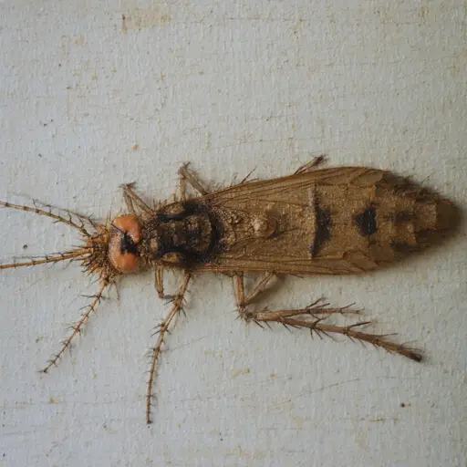</a><a class="ph" href="img/sd35-large/p012/cads/img_1.webp" target="_blank" rel="noopener">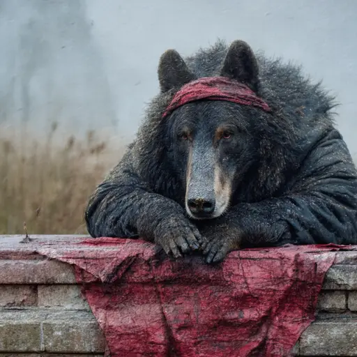</a><a class="ph" href="img/sd35-large/p012/cads/img_2.webp" target="_blank" rel="noopener"></a><a class="ph" href="img/sd35-large/p012/cads/img_3.webp" target="_blank" rel="noopener">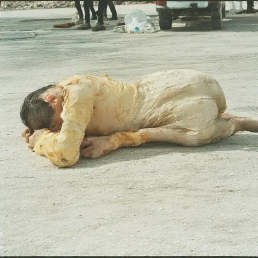</a></div><div class="stats"><span class="st" title="caption-Vendi on this prompt&#x27;s human axis (1-4, higher = more varied)"><b>capVendi</b>2.92<i>+0.00</i></span><span class="st up" title="VLM rater 1-5 on this prompt&#x27;s human axis (EV-scored)"><b>gridScore</b>4.90<i>+1.38</i></span><span class="st dn" title="TPIPS distance on this prompt&#x27;s human axis (0-1, higher = more varied)"><b>TPIPS</b>0.332<i>-0.006</i></span><span class="st dn" title="TPIPS axis SHARE: the axis distance divided by the same four images&#x27; &#x27;overall&#x27; (unconditioned) distance. Higher = more of what diversity there is sits on the axis. Values run below 1 for every method because conditioning on one axis always leaves fewer ways to differ — only the comparison against vanilla means anything."><b>TPIPS/o</b>0.562<i>-0.022</i></span><span class="st dn" title="TPIPS axis distance MINUS the unconditioned distance on the same four images — the same comparison as TPIPS/o but as a difference. Negative for essentially every group, for the same reason the ratio is below 1. Prefer TPIPS/o: the offset between the two distances is multiplicative (their ratio is roughly constant at 0.73), so this difference ends up tracking the unconditioned distance with a flipped sign (r = −0.68) and penalises a method for being diverse at all. Shown for completeness."><b>TPIPS−o</b>-0.258<i>-0.018</i></span><span class="st up" title="DINOv2-Vendi — axis-BLIND diversity, for contrast (1-4)"><b>DINO</b>3.98<i>+0.01</i></span></div></div><div class="method" data-ord="3" data-vals="{&quot;capvendi&quot;: 3.231646776199341, &quot;gridscore&quot;: 4.757132172817538, &quot;tpips&quot;: 0.361159086227417, &quot;tpips_o&quot;: 0.5839735355663053, &quot;tpips\u2212o&quot;: -0.2572920322418213, &quot;dino&quot;: 3.8784067630767822}"><h3>Group inference<span class="k">group_inference</span></h3><div class="grid2"><a class="ph" href="img/sd35-large/p012/group_inference/img_0.webp" target="_blank" rel="noopener"></a><a class="ph" href="img/sd35-large/p012/group_inference/img_1.webp" target="_blank" rel="noopener">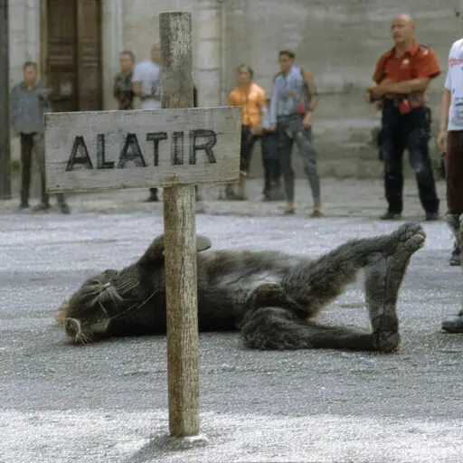</a><a class="ph" href="img/sd35-large/p012/group_inference/img_2.webp" target="_blank" rel="noopener">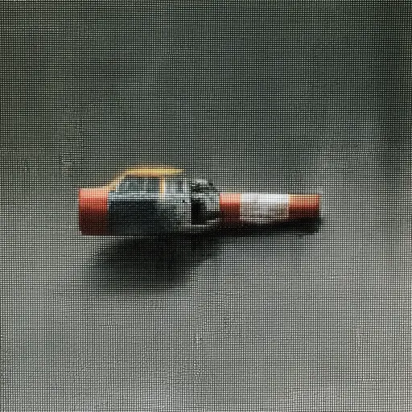</a><a class="ph" href="img/sd35-large/p012/group_inference/img_3.webp" target="_blank" rel="noopener"></a></div><div class="stats"><span class="st up" title="caption-Vendi on this prompt&#x27;s human axis (1-4, higher = more varied)"><b>capVendi</b>3.23<i>+0.32</i></span><span class="st up" title="VLM rater 1-5 on this prompt&#x27;s human axis (EV-scored)"><b>gridScore</b>4.76<i>+1.24</i></span><span class="st up" title="TPIPS distance on this prompt&#x27;s human axis (0-1, higher = more varied)"><b>TPIPS</b>0.361<i>+0.023</i></span><span class="st" title="TPIPS axis SHARE: the axis distance divided by the same four images&#x27; &#x27;overall&#x27; (unconditioned) distance. Higher = more of what diversity there is sits on the axis. Values run below 1 for every method because conditioning on one axis always leaves fewer ways to differ — only the comparison against vanilla means anything."><b>TPIPS/o</b>0.584<i>-0.000</i></span><span class="st dn" title="TPIPS axis distance MINUS the unconditioned distance on the same four images — the same comparison as TPIPS/o but as a difference. Negative for essentially every group, for the same reason the ratio is below 1. Prefer TPIPS/o: the offset between the two distances is multiplicative (their ratio is roughly constant at 0.73), so this difference ends up tracking the unconditioned distance with a flipped sign (r = −0.68) and penalises a method for being diverse at all. Shown for completeness."><b>TPIPS−o</b>-0.257<i>-0.016</i></span><span class="st dn" title="DINOv2-Vendi — axis-BLIND diversity, for contrast (1-4)"><b>DINO</b>3.88<i>-0.09</i></span></div></div></div></article><article class="card hide" data-model="sd35-large" style="--c:#63c7a6" data-ord="4" data-sort="{&quot;capvendi&quot;: 2.0325982570648193, &quot;gridscore&quot;: 4.776528591138435, &quot;tpips&quot;: 0.28090712428092957, &quot;tpips_o&quot;: 1.0134111132602361, &quot;tpips\u2212o&quot;: 0.0037174224853515625, &quot;dino&quot;: 3.537398099899292}"><div class="card-head"><span class="pid">p016</span><span class="prompt">A red door underwater surrounded by bubbles and marine life.</span><span class="axis">the marine life species could be varied - fish, coral, other sea creatures</span><span class="tag"><span class="dot"></span>sd35-large</span></div><div class="methods"><div class="method" data-ord="0" data-vals="{&quot;capvendi&quot;: 1.8860156536102295, &quot;gridscore&quot;: 3.745335002580335, &quot;tpips&quot;: 0.1811225414276123, &quot;tpips_o&quot;: 0.8409210738144897, &quot;tpips\u2212o&quot;: -0.034263357520103455, &quot;dino&quot;: 2.3773305416107178}"><h3>Vanilla<span class="k">vanilla</span></h3><div class="grid2"><a class="ph" href="img/sd35-large/p016/vanilla/img_0.webp" target="_blank" rel="noopener">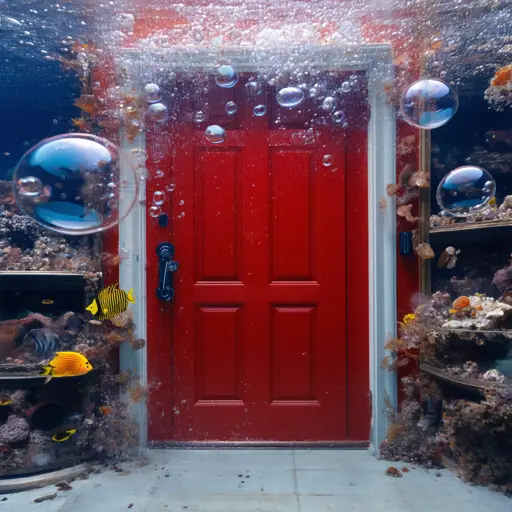</a><a class="ph" href="img/sd35-large/p016/vanilla/img_1.webp" target="_blank" rel="noopener"></a><a class="ph" href="img/sd35-large/p016/vanilla/img_2.webp" target="_blank" rel="noopener"></a><a class="ph" href="img/sd35-large/p016/vanilla/img_3.webp" target="_blank" rel="noopener"></a></div><div class="stats"><span class="st" title="caption-Vendi on this prompt&#x27;s human axis (1-4, higher = more varied)"><b>capVendi</b>1.89</span><span class="st" title="VLM rater 1-5 on this prompt&#x27;s human axis (EV-scored)"><b>gridScore</b>3.75</span><span class="st" title="TPIPS distance on this prompt&#x27;s human axis (0-1, higher = more varied)"><b>TPIPS</b>0.181</span><span class="st" title="TPIPS axis SHARE: the axis distance divided by the same four images&#x27; &#x27;overall&#x27; (unconditioned) distance. Higher = more of what diversity there is sits on the axis. Values run below 1 for every method because conditioning on one axis always leaves fewer ways to differ — only the comparison against vanilla means anything."><b>TPIPS/o</b>0.841</span><span class="st" title="TPIPS axis distance MINUS the unconditioned distance on the same four images — the same comparison as TPIPS/o but as a difference. Negative for essentially every group, for the same reason the ratio is below 1. Prefer TPIPS/o: the offset between the two distances is multiplicative (their ratio is roughly constant at 0.73), so this difference ends up tracking the unconditioned distance with a flipped sign (r = −0.68) and penalises a method for being diverse at all. Shown for completeness."><b>TPIPS−o</b>-0.034</span><span class="st" title="DINOv2-Vendi — axis-BLIND diversity, for contrast (1-4)"><b>DINO</b>2.38</span></div></div><div class="method" data-ord="1" data-vals="{&quot;capvendi&quot;: 2.0325982570648193, &quot;gridscore&quot;: 4.776528591138435, &quot;tpips&quot;: 0.28090712428092957, &quot;tpips_o&quot;: 1.0134111132602361, &quot;tpips\u2212o&quot;: 0.0037174224853515625, &quot;dino&quot;: 3.537398099899292}"><h3>Prompt expand<span class="k">prompt_expand</span></h3><div class="grid2"><a class="ph" href="img/sd35-large/p016/prompt_expand/img_0.webp" target="_blank" rel="noopener" title="A rusted red door submerged deep in the ocean, encircled by a school of neon orange butterfly fish and swarms of translucent jellyfish, with vibrant purple anemones clinging to the frame, highly detailed, sharp focus, clean composition, high quality, high resolution."></a><a class="ph" href="img/sd35-large/p016/prompt_expand/img_1.webp" target="_blank" rel="noopener" title="A bright vermilion wooden door underwater, framed by a massive branching coral reef and surrounded by a pod of curious blue tangs and fluttering lionfish among trailing sea fans, highly detailed, sharp focus, clean composition, high quality, high resolution."></a><a class="ph" href="img/sd35-large/p016/prompt_expand/img_2.webp" target="_blank" rel="noopener" title="A faded red metal door resting on the ocean floor, enveloped in rising bubbles and guarded by a curious group of octopuses, while schools of silver snapper and glowing anglerfish dart around the hinges, highly detailed, sharp focus, clean composition, high quality, high resolution."></a><a class="ph" href="img/sd35-large/p016/prompt_expand/img_3.webp" target="_blank" rel="noopener" title="A vibrant red panel door underwater in a tropical setting, surrounded by a dense garden of soft corals and swarms of colorful clownfish swimming through sea anemones, with larger sea turtles gliding past in the background, highly detailed, sharp focus, clean composition, high quality, high resolution."></a></div><div class="stats"><span class="st up" title="caption-Vendi on this prompt&#x27;s human axis (1-4, higher = more varied)"><b>capVendi</b>2.03<i>+0.15</i></span><span class="st up" title="VLM rater 1-5 on this prompt&#x27;s human axis (EV-scored)"><b>gridScore</b>4.78<i>+1.03</i></span><span class="st up" title="TPIPS distance on this prompt&#x27;s human axis (0-1, higher = more varied)"><b>TPIPS</b>0.281<i>+0.100</i></span><span class="st up" title="TPIPS axis SHARE: the axis distance divided by the same four images&#x27; &#x27;overall&#x27; (unconditioned) distance. Higher = more of what diversity there is sits on the axis. Values run below 1 for every method because conditioning on one axis always leaves fewer ways to differ — only the comparison against vanilla means anything."><b>TPIPS/o</b>1.013<i>+0.172</i></span><span class="st up" title="TPIPS axis distance MINUS the unconditioned distance on the same four images — the same comparison as TPIPS/o but as a difference. Negative for essentially every group, for the same reason the ratio is below 1. Prefer TPIPS/o: the offset between the two distances is multiplicative (their ratio is roughly constant at 0.73), so this difference ends up tracking the unconditioned distance with a flipped sign (r = −0.68) and penalises a method for being diverse at all. Shown for completeness."><b>TPIPS−o</b>0.004<i>+0.038</i></span><span class="st up" title="DINOv2-Vendi — axis-BLIND diversity, for contrast (1-4)"><b>DINO</b>3.54<i>+1.16</i></span></div><details class="exp"><summary>expanded prompts</summary><ol><li>A rusted red door submerged deep in the ocean, encircled by a school of neon orange butterfly fish and swarms of translucent jellyfish, with vibrant purple anemones clinging to the frame, highly detailed, sharp focus, clean composition, high quality, high resolution.</li><li>A bright vermilion wooden door underwater, framed by a massive branching coral reef and surrounded by a pod of curious blue tangs and fluttering lionfish among trailing sea fans, highly detailed, sharp focus, clean composition, high quality, high resolution.</li><li>A faded red metal door resting on the ocean floor, enveloped in rising bubbles and guarded by a curious group of octopuses, while schools of silver snapper and glowing anglerfish dart around the hinges, highly detailed, sharp focus, clean composition, high quality, high resolution.</li><li>A vibrant red panel door underwater in a tropical setting, surrounded by a dense garden of soft corals and swarms of colorful clownfish swimming through sea anemones, with larger sea turtles gliding past in the background, highly detailed, sharp focus, clean composition, high quality, high resolution.</li></ol></details></div><div class="method" data-ord="2" data-vals="{&quot;capvendi&quot;: 1.535498023033142, &quot;gridscore&quot;: 3.8976293277320218, &quot;tpips&quot;: 0.19177870452404022, &quot;tpips_o&quot;: 0.6381534836844089, &quot;tpips\u2212o&quot;: -0.10874257981777191, &quot;dino&quot;: 2.4809041023254395}"><h3>CADS<span class="k">cads</span></h3><div class="grid2"><a class="ph" href="img/sd35-large/p016/cads/img_0.webp" target="_blank" rel="noopener"></a><a class="ph" href="img/sd35-large/p016/cads/img_1.webp" target="_blank" rel="noopener"></a><a class="ph" href="img/sd35-large/p016/cads/img_2.webp" target="_blank" rel="noopener"></a><a class="ph" href="img/sd35-large/p016/cads/img_3.webp" target="_blank" rel="noopener">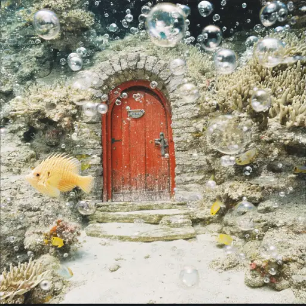</a></div><div class="stats"><span class="st dn" title="caption-Vendi on this prompt&#x27;s human axis (1-4, higher = more varied)"><b>capVendi</b>1.54<i>-0.35</i></span><span class="st up" title="VLM rater 1-5 on this prompt&#x27;s human axis (EV-scored)"><b>gridScore</b>3.90<i>+0.15</i></span><span class="st up" title="TPIPS distance on this prompt&#x27;s human axis (0-1, higher = more varied)"><b>TPIPS</b>0.192<i>+0.011</i></span><span class="st dn" title="TPIPS axis SHARE: the axis distance divided by the same four images&#x27; &#x27;overall&#x27; (unconditioned) distance. Higher = more of what diversity there is sits on the axis. Values run below 1 for every method because conditioning on one axis always leaves fewer ways to differ — only the comparison against vanilla means anything."><b>TPIPS/o</b>0.638<i>-0.203</i></span><span class="st dn" title="TPIPS axis distance MINUS the unconditioned distance on the same four images — the same comparison as TPIPS/o but as a difference. Negative for essentially every group, for the same reason the ratio is below 1. Prefer TPIPS/o: the offset between the two distances is multiplicative (their ratio is roughly constant at 0.73), so this difference ends up tracking the unconditioned distance with a flipped sign (r = −0.68) and penalises a method for being diverse at all. Shown for completeness."><b>TPIPS−o</b>-0.109<i>-0.074</i></span><span class="st up" title="DINOv2-Vendi — axis-BLIND diversity, for contrast (1-4)"><b>DINO</b>2.48<i>+0.10</i></span></div></div><div class="method" data-ord="3" data-vals="{&quot;capvendi&quot;: 1.5471274852752686, &quot;gridscore&quot;: 3.1760763872593967, &quot;tpips&quot;: 0.12838973104953766, &quot;tpips_o&quot;: 0.5179549239595201, &quot;tpips\u2212o&quot;: -0.11948846280574799, &quot;dino&quot;: 2.0005695819854736}"><h3>Group inference<span class="k">group_inference</span></h3><div class="grid2"><a class="ph" href="img/sd35-large/p016/group_inference/img_0.webp" target="_blank" rel="noopener"></a><a class="ph" href="img/sd35-large/p016/group_inference/img_1.webp" target="_blank" rel="noopener"></a><a class="ph" href="img/sd35-large/p016/group_inference/img_2.webp" target="_blank" rel="noopener"></a><a class="ph" href="img/sd35-large/p016/group_inference/img_3.webp" target="_blank" rel="noopener"></a></div><div class="stats"><span class="st dn" title="caption-Vendi on this prompt&#x27;s human axis (1-4, higher = more varied)"><b>capVendi</b>1.55<i>-0.34</i></span><span class="st dn" title="VLM rater 1-5 on this prompt&#x27;s human axis (EV-scored)"><b>gridScore</b>3.18<i>-0.57</i></span><span class="st dn" title="TPIPS distance on this prompt&#x27;s human axis (0-1, higher = more varied)"><b>TPIPS</b>0.128<i>-0.053</i></span><span class="st dn" title="TPIPS axis SHARE: the axis distance divided by the same four images&#x27; &#x27;overall&#x27; (unconditioned) distance. Higher = more of what diversity there is sits on the axis. Values run below 1 for every method because conditioning on one axis always leaves fewer ways to differ — only the comparison against vanilla means anything."><b>TPIPS/o</b>0.518<i>-0.323</i></span><span class="st dn" title="TPIPS axis distance MINUS the unconditioned distance on the same four images — the same comparison as TPIPS/o but as a difference. Negative for essentially every group, for the same reason the ratio is below 1. Prefer TPIPS/o: the offset between the two distances is multiplicative (their ratio is roughly constant at 0.73), so this difference ends up tracking the unconditioned distance with a flipped sign (r = −0.68) and penalises a method for being diverse at all. Shown for completeness."><b>TPIPS−o</b>-0.119<i>-0.085</i></span><span class="st dn" title="DINOv2-Vendi — axis-BLIND diversity, for contrast (1-4)"><b>DINO</b>2.00<i>-0.38</i></span></div></div></div></article><article class="card hide" data-model="sd35-large" style="--c:#63c7a6" data-ord="5" data-sort="{&quot;capvendi&quot;: 1.9355926513671875, &quot;gridscore&quot;: 4.656432365940077, &quot;tpips&quot;: 0.45082005858421326, &quot;tpips_o&quot;: 0.7900725036061689, &quot;tpips\u2212o&quot;: -0.11978587508201599, &quot;dino&quot;: 2.199418544769287}"><div class="card-head"><span class="pid">p017</span><span class="prompt">A group of people carrying surfboards on shore next to rocks.</span><span class="axis">close up or far away</span><span class="tag"><span class="dot"></span>sd35-large</span></div><div class="methods"><div class="method" data-ord="0" data-vals="{&quot;capvendi&quot;: 1.482156753540039, &quot;gridscore&quot;: 3.6113126743517294, &quot;tpips&quot;: 0.15844157338142395, &quot;tpips_o&quot;: 0.9423174493984999, &quot;tpips\u2212o&quot;: -0.009698763489723206, &quot;dino&quot;: 1.3787181377410889}"><h3>Vanilla<span class="k">vanilla</span></h3><div class="grid2"><a class="ph" href="img/sd35-large/p017/vanilla/img_0.webp" target="_blank" rel="noopener"></a><a class="ph" href="img/sd35-large/p017/vanilla/img_1.webp" target="_blank" rel="noopener"></a><a class="ph" href="img/sd35-large/p017/vanilla/img_2.webp" target="_blank" rel="noopener"></a><a class="ph" href="img/sd35-large/p017/vanilla/img_3.webp" target="_blank" rel="noopener"></a></div><div class="stats"><span class="st" title="caption-Vendi on this prompt&#x27;s human axis (1-4, higher = more varied)"><b>capVendi</b>1.48</span><span class="st" title="VLM rater 1-5 on this prompt&#x27;s human axis (EV-scored)"><b>gridScore</b>3.61</span><span class="st" title="TPIPS distance on this prompt&#x27;s human axis (0-1, higher = more varied)"><b>TPIPS</b>0.158</span><span class="st" title="TPIPS axis SHARE: the axis distance divided by the same four images&#x27; &#x27;overall&#x27; (unconditioned) distance. Higher = more of what diversity there is sits on the axis. Values run below 1 for every method because conditioning on one axis always leaves fewer ways to differ — only the comparison against vanilla means anything."><b>TPIPS/o</b>0.942</span><span class="st" title="TPIPS axis distance MINUS the unconditioned distance on the same four images — the same comparison as TPIPS/o but as a difference. Negative for essentially every group, for the same reason the ratio is below 1. Prefer TPIPS/o: the offset between the two distances is multiplicative (their ratio is roughly constant at 0.73), so this difference ends up tracking the unconditioned distance with a flipped sign (r = −0.68) and penalises a method for being diverse at all. Shown for completeness."><b>TPIPS−o</b>-0.010</span><span class="st" title="DINOv2-Vendi — axis-BLIND diversity, for contrast (1-4)"><b>DINO</b>1.38</span></div></div><div class="method" data-ord="1" data-vals="{&quot;capvendi&quot;: 1.9355926513671875, &quot;gridscore&quot;: 4.656432365940077, &quot;tpips&quot;: 0.45082005858421326, &quot;tpips_o&quot;: 0.7900725036061689, &quot;tpips\u2212o&quot;: -0.11978587508201599, &quot;dino&quot;: 2.199418544769287}"><h3>Prompt expand<span class="k">prompt_expand</span></h3><div class="grid2"><a class="ph" href="img/sd35-large/p017/prompt_expand/img_0.webp" target="_blank" rel="noopener" title="An extreme close-up of a pair of calloused hands gripping the foam rail of a blue surfboard, with rough granite rocks and crashing white sea foam visible in the immediate background, highly detailed, sharp focus, clean composition, high quality, high resolution."></a><a class="ph" href="img/sd35-large/p017/prompt_expand/img_1.webp" target="_blank" rel="noopener" title="A distant wide shot of a large group of surfers carrying their boards along a rocky coastline, appearing as small figures against the vast expanse of the ocean and sky, highly detailed, sharp focus, clean composition, high quality, high resolution.">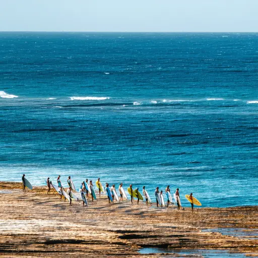</a><a class="ph" href="img/sd35-large/p017/prompt_expand/img_2.webp" target="_blank" rel="noopener" title="A tight close-up on a surfer&#x27;s bare foot planted firmly on a jagged grey rock next to a standing wooden surfboard, with the texture of the skin and the wood grain clearly visible, highly detailed, sharp focus, clean composition, high quality, high resolution.">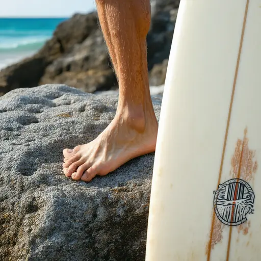</a><a class="ph" href="img/sd35-large/p017/prompt_expand/img_3.webp" target="_blank" rel="noopener" title="A far-away panoramic view of a crowded shore where dozens of people are walking in a line carrying surfboards past a cluster of massive sea stacks, capturing the scale of the landscape and the group, highly detailed, sharp focus, clean composition, high quality, high resolution.">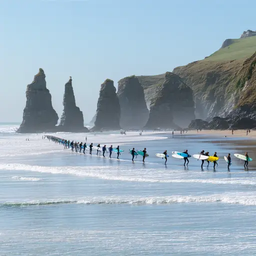</a></div><div class="stats"><span class="st up" title="caption-Vendi on this prompt&#x27;s human axis (1-4, higher = more varied)"><b>capVendi</b>1.94<i>+0.45</i></span><span class="st up" title="VLM rater 1-5 on this prompt&#x27;s human axis (EV-scored)"><b>gridScore</b>4.66<i>+1.05</i></span><span class="st up" title="TPIPS distance on this prompt&#x27;s human axis (0-1, higher = more varied)"><b>TPIPS</b>0.451<i>+0.292</i></span><span class="st dn" title="TPIPS axis SHARE: the axis distance divided by the same four images&#x27; &#x27;overall&#x27; (unconditioned) distance. Higher = more of what diversity there is sits on the axis. Values run below 1 for every method because conditioning on one axis always leaves fewer ways to differ — only the comparison against vanilla means anything."><b>TPIPS/o</b>0.790<i>-0.152</i></span><span class="st dn" title="TPIPS axis distance MINUS the unconditioned distance on the same four images — the same comparison as TPIPS/o but as a difference. Negative for essentially every group, for the same reason the ratio is below 1. Prefer TPIPS/o: the offset between the two distances is multiplicative (their ratio is roughly constant at 0.73), so this difference ends up tracking the unconditioned distance with a flipped sign (r = −0.68) and penalises a method for being diverse at all. Shown for completeness."><b>TPIPS−o</b>-0.120<i>-0.110</i></span><span class="st up" title="DINOv2-Vendi — axis-BLIND diversity, for contrast (1-4)"><b>DINO</b>2.20<i>+0.82</i></span></div><details class="exp"><summary>expanded prompts</summary><ol><li>An extreme close-up of a pair of calloused hands gripping the foam rail of a blue surfboard, with rough granite rocks and crashing white sea foam visible in the immediate background, highly detailed, sharp focus, clean composition, high quality, high resolution.</li><li>A distant wide shot of a large group of surfers carrying their boards along a rocky coastline, appearing as small figures against the vast expanse of the ocean and sky, highly detailed, sharp focus, clean composition, high quality, high resolution.</li><li>A tight close-up on a surfer&#x27;s bare foot planted firmly on a jagged grey rock next to a standing wooden surfboard, with the texture of the skin and the wood grain clearly visible, highly detailed, sharp focus, clean composition, high quality, high resolution.</li><li>A far-away panoramic view of a crowded shore where dozens of people are walking in a line carrying surfboards past a cluster of massive sea stacks, capturing the scale of the landscape and the group, highly detailed, sharp focus, clean composition, high quality, high resolution.</li></ol></details></div><div class="method" data-ord="2" data-vals="{&quot;capvendi&quot;: 1.3714600801467896, &quot;gridscore&quot;: 4.281602660738933, &quot;tpips&quot;: 0.24768131971359253, &quot;tpips_o&quot;: 0.8197924676171457, &quot;tpips\u2212o&quot;: -0.0544455349445343, &quot;dino&quot;: 1.7445088624954224}"><h3>CADS<span class="k">cads</span></h3><div class="grid2"><a class="ph" href="img/sd35-large/p017/cads/img_0.webp" target="_blank" rel="noopener">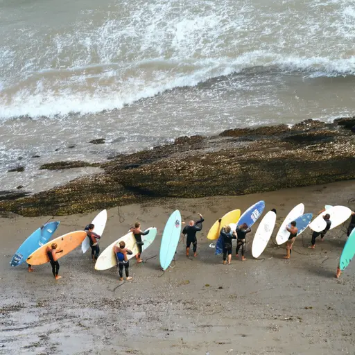</a><a class="ph" href="img/sd35-large/p017/cads/img_1.webp" target="_blank" rel="noopener">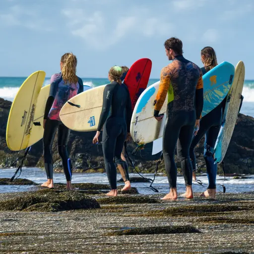</a><a class="ph" href="img/sd35-large/p017/cads/img_2.webp" target="_blank" rel="noopener"></a><a class="ph" href="img/sd35-large/p017/cads/img_3.webp" target="_blank" rel="noopener"></a></div><div class="stats"><span class="st dn" title="caption-Vendi on this prompt&#x27;s human axis (1-4, higher = more varied)"><b>capVendi</b>1.37<i>-0.11</i></span><span class="st up" title="VLM rater 1-5 on this prompt&#x27;s human axis (EV-scored)"><b>gridScore</b>4.28<i>+0.67</i></span><span class="st up" title="TPIPS distance on this prompt&#x27;s human axis (0-1, higher = more varied)"><b>TPIPS</b>0.248<i>+0.089</i></span><span class="st dn" title="TPIPS axis SHARE: the axis distance divided by the same four images&#x27; &#x27;overall&#x27; (unconditioned) distance. Higher = more of what diversity there is sits on the axis. Values run below 1 for every method because conditioning on one axis always leaves fewer ways to differ — only the comparison against vanilla means anything."><b>TPIPS/o</b>0.820<i>-0.123</i></span><span class="st dn" title="TPIPS axis distance MINUS the unconditioned distance on the same four images — the same comparison as TPIPS/o but as a difference. Negative for essentially every group, for the same reason the ratio is below 1. Prefer TPIPS/o: the offset between the two distances is multiplicative (their ratio is roughly constant at 0.73), so this difference ends up tracking the unconditioned distance with a flipped sign (r = −0.68) and penalises a method for being diverse at all. Shown for completeness."><b>TPIPS−o</b>-0.054<i>-0.045</i></span><span class="st up" title="DINOv2-Vendi — axis-BLIND diversity, for contrast (1-4)"><b>DINO</b>1.74<i>+0.37</i></span></div></div><div class="method" data-ord="3" data-vals="{&quot;capvendi&quot;: 1.5060408115386963, &quot;gridscore&quot;: 4.340701103109956, &quot;tpips&quot;: 0.27566513419151306, &quot;tpips_o&quot;: 0.8820780406240145, &quot;tpips\u2212o&quot;: -0.03685271739959717, &quot;dino&quot;: 1.6082804203033447}"><h3>Group inference<span class="k">group_inference</span></h3><div class="grid2"><a class="ph" href="img/sd35-large/p017/group_inference/img_0.webp" target="_blank" rel="noopener"></a><a class="ph" href="img/sd35-large/p017/group_inference/img_1.webp" target="_blank" rel="noopener"></a><a class="ph" href="img/sd35-large/p017/group_inference/img_2.webp" target="_blank" rel="noopener"></a><a class="ph" href="img/sd35-large/p017/group_inference/img_3.webp" target="_blank" rel="noopener">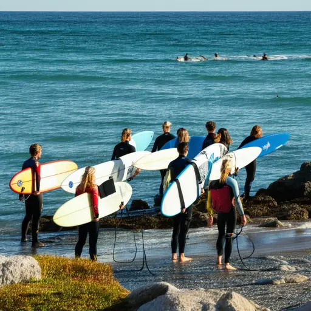</a></div><div class="stats"><span class="st up" title="caption-Vendi on this prompt&#x27;s human axis (1-4, higher = more varied)"><b>capVendi</b>1.51<i>+0.02</i></span><span class="st up" title="VLM rater 1-5 on this prompt&#x27;s human axis (EV-scored)"><b>gridScore</b>4.34<i>+0.73</i></span><span class="st up" title="TPIPS distance on this prompt&#x27;s human axis (0-1, higher = more varied)"><b>TPIPS</b>0.276<i>+0.117</i></span><span class="st dn" title="TPIPS axis SHARE: the axis distance divided by the same four images&#x27; &#x27;overall&#x27; (unconditioned) distance. Higher = more of what diversity there is sits on the axis. Values run below 1 for every method because conditioning on one axis always leaves fewer ways to differ — only the comparison against vanilla means anything."><b>TPIPS/o</b>0.882<i>-0.060</i></span><span class="st dn" title="TPIPS axis distance MINUS the unconditioned distance on the same four images — the same comparison as TPIPS/o but as a difference. Negative for essentially every group, for the same reason the ratio is below 1. Prefer TPIPS/o: the offset between the two distances is multiplicative (their ratio is roughly constant at 0.73), so this difference ends up tracking the unconditioned distance with a flipped sign (r = −0.68) and penalises a method for being diverse at all. Shown for completeness."><b>TPIPS−o</b>-0.037<i>-0.027</i></span><span class="st up" title="DINOv2-Vendi — axis-BLIND diversity, for contrast (1-4)"><b>DINO</b>1.61<i>+0.23</i></span></div></div></div></article><article class="card hide" data-model="sd35-large" style="--c:#63c7a6" data-ord="6" data-sort="{&quot;capvendi&quot;: 2.2921392917633057, &quot;gridscore&quot;: 4.99591871727544, &quot;tpips&quot;: 0.326894074678421, &quot;tpips_o&quot;: 0.8924522446806364, &quot;tpips\u2212o&quot;: -0.03939339518547058, &quot;dino&quot;: 3.733224868774414}"><div class="card-head"><span class="pid">p019</span><span class="prompt">a large blue clock is hanging up outside</span><span class="axis">The clock could be directly on a wall or hanging in another way</span><span class="tag"><span class="dot"></span>sd35-large</span></div><div class="methods"><div class="method" data-ord="0" data-vals="{&quot;capvendi&quot;: 1.8331034183502197, &quot;gridscore&quot;: 4.851196224039315, &quot;tpips&quot;: 0.24291907250881195, &quot;tpips_o&quot;: 0.8585864049444226, &quot;tpips\u2212o&quot;: -0.04001002013683319, &quot;dino&quot;: 2.1619274616241455}"><h3>Vanilla<span class="k">vanilla</span></h3><div class="grid2"><a class="ph" href="img/sd35-large/p019/vanilla/img_0.webp" target="_blank" rel="noopener"></a><a class="ph" href="img/sd35-large/p019/vanilla/img_1.webp" target="_blank" rel="noopener"></a><a class="ph" href="img/sd35-large/p019/vanilla/img_2.webp" target="_blank" rel="noopener"></a><a class="ph" href="img/sd35-large/p019/vanilla/img_3.webp" target="_blank" rel="noopener"></a></div><div class="stats"><span class="st" title="caption-Vendi on this prompt&#x27;s human axis (1-4, higher = more varied)"><b>capVendi</b>1.83</span><span class="st" title="VLM rater 1-5 on this prompt&#x27;s human axis (EV-scored)"><b>gridScore</b>4.85</span><span class="st" title="TPIPS distance on this prompt&#x27;s human axis (0-1, higher = more varied)"><b>TPIPS</b>0.243</span><span class="st" title="TPIPS axis SHARE: the axis distance divided by the same four images&#x27; &#x27;overall&#x27; (unconditioned) distance. Higher = more of what diversity there is sits on the axis. Values run below 1 for every method because conditioning on one axis always leaves fewer ways to differ — only the comparison against vanilla means anything."><b>TPIPS/o</b>0.859</span><span class="st" title="TPIPS axis distance MINUS the unconditioned distance on the same four images — the same comparison as TPIPS/o but as a difference. Negative for essentially every group, for the same reason the ratio is below 1. Prefer TPIPS/o: the offset between the two distances is multiplicative (their ratio is roughly constant at 0.73), so this difference ends up tracking the unconditioned distance with a flipped sign (r = −0.68) and penalises a method for being diverse at all. Shown for completeness."><b>TPIPS−o</b>-0.040</span><span class="st" title="DINOv2-Vendi — axis-BLIND diversity, for contrast (1-4)"><b>DINO</b>2.16</span></div></div><div class="method" data-ord="1" data-vals="{&quot;capvendi&quot;: 2.2921392917633057, &quot;gridscore&quot;: 4.99591871727544, &quot;tpips&quot;: 0.326894074678421, &quot;tpips_o&quot;: 0.8924522446806364, &quot;tpips\u2212o&quot;: -0.03939339518547058, &quot;dino&quot;: 3.733224868774414}"><h3>Prompt expand<span class="k">prompt_expand</span></h3><div class="grid2"><a class="ph" href="img/sd35-large/p019/prompt_expand/img_0.webp" target="_blank" rel="noopener" title="A massive blue grandfather clock mounted flush against the beige brick facade of an old Victorian library, its gold hands frozen at midnight, highly detailed, sharp focus, clean composition, high quality, high resolution."></a><a class="ph" href="img/sd35-large/p019/prompt_expand/img_1.webp" target="_blank" rel="noopener" title="A giant blue tower clock suspended by thick iron chains from the underside of a heavy steel bridge, casting a shadow on the river below, highly detailed, sharp focus, clean composition, high quality, high resolution."></a><a class="ph" href="img/sd35-large/p019/prompt_expand/img_2.webp" target="_blank" rel="noopener" title="A large blue wall clock bolted high on the side of a modern glass skyscraper, reflecting the sunset sky between its Roman numerals, highly detailed, sharp focus, clean composition, high quality, high resolution."></a><a class="ph" href="img/sd35-large/p019/prompt_expand/img_3.webp" target="_blank" rel="noopener" title="A huge blue carriage clock hanging from the open iron archway of an ornate cathedral entrance, swaying gently in a light breeze, highly detailed, sharp focus, clean composition, high quality, high resolution."></a></div><div class="stats"><span class="st up" title="caption-Vendi on this prompt&#x27;s human axis (1-4, higher = more varied)"><b>capVendi</b>2.29<i>+0.46</i></span><span class="st up" title="VLM rater 1-5 on this prompt&#x27;s human axis (EV-scored)"><b>gridScore</b>5.00<i>+0.14</i></span><span class="st up" title="TPIPS distance on this prompt&#x27;s human axis (0-1, higher = more varied)"><b>TPIPS</b>0.327<i>+0.084</i></span><span class="st up" title="TPIPS axis SHARE: the axis distance divided by the same four images&#x27; &#x27;overall&#x27; (unconditioned) distance. Higher = more of what diversity there is sits on the axis. Values run below 1 for every method because conditioning on one axis always leaves fewer ways to differ — only the comparison against vanilla means anything."><b>TPIPS/o</b>0.892<i>+0.034</i></span><span class="st" title="TPIPS axis distance MINUS the unconditioned distance on the same four images — the same comparison as TPIPS/o but as a difference. Negative for essentially every group, for the same reason the ratio is below 1. Prefer TPIPS/o: the offset between the two distances is multiplicative (their ratio is roughly constant at 0.73), so this difference ends up tracking the unconditioned distance with a flipped sign (r = −0.68) and penalises a method for being diverse at all. Shown for completeness."><b>TPIPS−o</b>-0.039<i>+0.001</i></span><span class="st up" title="DINOv2-Vendi — axis-BLIND diversity, for contrast (1-4)"><b>DINO</b>3.73<i>+1.57</i></span></div><details class="exp"><summary>expanded prompts</summary><ol><li>A massive blue grandfather clock mounted flush against the beige brick facade of an old Victorian library, its gold hands frozen at midnight, highly detailed, sharp focus, clean composition, high quality, high resolution.</li><li>A giant blue tower clock suspended by thick iron chains from the underside of a heavy steel bridge, casting a shadow on the river below, highly detailed, sharp focus, clean composition, high quality, high resolution.</li><li>A large blue wall clock bolted high on the side of a modern glass skyscraper, reflecting the sunset sky between its Roman numerals, highly detailed, sharp focus, clean composition, high quality, high resolution.</li><li>A huge blue carriage clock hanging from the open iron archway of an ornate cathedral entrance, swaying gently in a light breeze, highly detailed, sharp focus, clean composition, high quality, high resolution.</li></ol></details></div><div class="method" data-ord="2" data-vals="{&quot;capvendi&quot;: 2.100998640060425, &quot;gridscore&quot;: 4.752102179809254, &quot;tpips&quot;: 0.19181805849075317, &quot;tpips_o&quot;: 0.6729854470015332, &quot;tpips\u2212o&quot;: -0.09320750832557678, &quot;dino&quot;: 2.8670711517333984}"><h3>CADS<span class="k">cads</span></h3><div class="grid2"><a class="ph" href="img/sd35-large/p019/cads/img_0.webp" target="_blank" rel="noopener"></a><a class="ph" href="img/sd35-large/p019/cads/img_1.webp" target="_blank" rel="noopener"></a><a class="ph" href="img/sd35-large/p019/cads/img_2.webp" target="_blank" rel="noopener">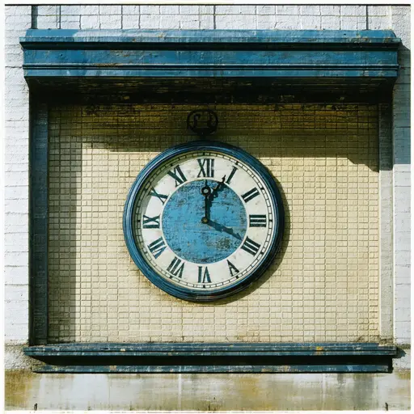</a><a class="ph" href="img/sd35-large/p019/cads/img_3.webp" target="_blank" rel="noopener"></a></div><div class="stats"><span class="st up" title="caption-Vendi on this prompt&#x27;s human axis (1-4, higher = more varied)"><b>capVendi</b>2.10<i>+0.27</i></span><span class="st dn" title="VLM rater 1-5 on this prompt&#x27;s human axis (EV-scored)"><b>gridScore</b>4.75<i>-0.10</i></span><span class="st dn" title="TPIPS distance on this prompt&#x27;s human axis (0-1, higher = more varied)"><b>TPIPS</b>0.192<i>-0.051</i></span><span class="st dn" title="TPIPS axis SHARE: the axis distance divided by the same four images&#x27; &#x27;overall&#x27; (unconditioned) distance. Higher = more of what diversity there is sits on the axis. Values run below 1 for every method because conditioning on one axis always leaves fewer ways to differ — only the comparison against vanilla means anything."><b>TPIPS/o</b>0.673<i>-0.186</i></span><span class="st dn" title="TPIPS axis distance MINUS the unconditioned distance on the same four images — the same comparison as TPIPS/o but as a difference. Negative for essentially every group, for the same reason the ratio is below 1. Prefer TPIPS/o: the offset between the two distances is multiplicative (their ratio is roughly constant at 0.73), so this difference ends up tracking the unconditioned distance with a flipped sign (r = −0.68) and penalises a method for being diverse at all. Shown for completeness."><b>TPIPS−o</b>-0.093<i>-0.053</i></span><span class="st up" title="DINOv2-Vendi — axis-BLIND diversity, for contrast (1-4)"><b>DINO</b>2.87<i>+0.71</i></span></div></div><div class="method" data-ord="3" data-vals="{&quot;capvendi&quot;: 1.9061775207519531, &quot;gridscore&quot;: 4.985908248888028, &quot;tpips&quot;: 0.24482481181621552, &quot;tpips_o&quot;: 0.8713423716524078, &quot;tpips\u2212o&quot;: -0.036149486899375916, &quot;dino&quot;: 2.2012178897857666}"><h3>Group inference<span class="k">group_inference</span></h3><div class="grid2"><a class="ph" href="img/sd35-large/p019/group_inference/img_0.webp" target="_blank" rel="noopener"></a><a class="ph" href="img/sd35-large/p019/group_inference/img_1.webp" target="_blank" rel="noopener"></a><a class="ph" href="img/sd35-large/p019/group_inference/img_2.webp" target="_blank" rel="noopener"></a><a class="ph" href="img/sd35-large/p019/group_inference/img_3.webp" target="_blank" rel="noopener"></a></div><div class="stats"><span class="st up" title="caption-Vendi on this prompt&#x27;s human axis (1-4, higher = more varied)"><b>capVendi</b>1.91<i>+0.07</i></span><span class="st up" title="VLM rater 1-5 on this prompt&#x27;s human axis (EV-scored)"><b>gridScore</b>4.99<i>+0.13</i></span><span class="st" title="TPIPS distance on this prompt&#x27;s human axis (0-1, higher = more varied)"><b>TPIPS</b>0.245<i>+0.002</i></span><span class="st up" title="TPIPS axis SHARE: the axis distance divided by the same four images&#x27; &#x27;overall&#x27; (unconditioned) distance. Higher = more of what diversity there is sits on the axis. Values run below 1 for every method because conditioning on one axis always leaves fewer ways to differ — only the comparison against vanilla means anything."><b>TPIPS/o</b>0.871<i>+0.013</i></span><span class="st" title="TPIPS axis distance MINUS the unconditioned distance on the same four images — the same comparison as TPIPS/o but as a difference. Negative for essentially every group, for the same reason the ratio is below 1. Prefer TPIPS/o: the offset between the two distances is multiplicative (their ratio is roughly constant at 0.73), so this difference ends up tracking the unconditioned distance with a flipped sign (r = −0.68) and penalises a method for being diverse at all. Shown for completeness."><b>TPIPS−o</b>-0.036<i>+0.004</i></span><span class="st up" title="DINOv2-Vendi — axis-BLIND diversity, for contrast (1-4)"><b>DINO</b>2.20<i>+0.04</i></span></div></div></div></article><article class="card hide" data-model="sd35-large" style="--c:#63c7a6" data-ord="7" data-sort="{&quot;capvendi&quot;: 1.6051967144012451, &quot;gridscore&quot;: 4.6730598413159425, &quot;tpips&quot;: 0.26034191250801086, &quot;tpips_o&quot;: 0.9338918180573211, &quot;tpips\u2212o&quot;: -0.018429040908813477, &quot;dino&quot;: 2.557352066040039}"><div class="card-head"><span class="pid">p025</span><span class="prompt">Two yellow rubber ducks in a bathtub engaged in an epic battle.</span><span class="axis">duck position (some in air attacking, some halfway underwater during the attack, etc.)</span><span class="tag"><span class="dot"></span>sd35-large</span></div><div class="methods"><div class="method" data-ord="0" data-vals="{&quot;capvendi&quot;: 1.151020884513855, &quot;gridscore&quot;: 3.828534389213066, &quot;tpips&quot;: 0.1094454899430275, &quot;tpips_o&quot;: 0.8054997396435376, &quot;tpips\u2212o&quot;: -0.026427291333675385, &quot;dino&quot;: 1.7704777717590332}"><h3>Vanilla<span class="k">vanilla</span></h3><div class="grid2"><a class="ph" href="img/sd35-large/p025/vanilla/img_0.webp" target="_blank" rel="noopener"></a><a class="ph" href="img/sd35-large/p025/vanilla/img_1.webp" target="_blank" rel="noopener"></a><a class="ph" href="img/sd35-large/p025/vanilla/img_2.webp" target="_blank" rel="noopener"></a><a class="ph" href="img/sd35-large/p025/vanilla/img_3.webp" target="_blank" rel="noopener"></a></div><div class="stats"><span class="st" title="caption-Vendi on this prompt&#x27;s human axis (1-4, higher = more varied)"><b>capVendi</b>1.15</span><span class="st" title="VLM rater 1-5 on this prompt&#x27;s human axis (EV-scored)"><b>gridScore</b>3.83</span><span class="st" title="TPIPS distance on this prompt&#x27;s human axis (0-1, higher = more varied)"><b>TPIPS</b>0.109</span><span class="st" title="TPIPS axis SHARE: the axis distance divided by the same four images&#x27; &#x27;overall&#x27; (unconditioned) distance. Higher = more of what diversity there is sits on the axis. Values run below 1 for every method because conditioning on one axis always leaves fewer ways to differ — only the comparison against vanilla means anything."><b>TPIPS/o</b>0.805</span><span class="st" title="TPIPS axis distance MINUS the unconditioned distance on the same four images — the same comparison as TPIPS/o but as a difference. Negative for essentially every group, for the same reason the ratio is below 1. Prefer TPIPS/o: the offset between the two distances is multiplicative (their ratio is roughly constant at 0.73), so this difference ends up tracking the unconditioned distance with a flipped sign (r = −0.68) and penalises a method for being diverse at all. Shown for completeness."><b>TPIPS−o</b>-0.026</span><span class="st" title="DINOv2-Vendi — axis-BLIND diversity, for contrast (1-4)"><b>DINO</b>1.77</span></div></div><div class="method" data-ord="1" data-vals="{&quot;capvendi&quot;: 1.6051967144012451, &quot;gridscore&quot;: 4.6730598413159425, &quot;tpips&quot;: 0.26034191250801086, &quot;tpips_o&quot;: 0.9338918180573211, &quot;tpips\u2212o&quot;: -0.018429040908813477, &quot;dino&quot;: 2.557352066040039}"><h3>Prompt expand<span class="k">prompt_expand</span></h3><div class="grid2"><a class="ph" href="img/sd35-large/p025/prompt_expand/img_0.webp" target="_blank" rel="noopener" title="Two bright yellow rubber ducks locked in mid-air combat above a chrome bathtub faucet, one diving duck snapping at the other&#x27;s wing while water droplets spray frozen in time against a tiled bathroom wall, highly detailed, sharp focus, clean composition, high quality, high resolution."></a><a class="ph" href="img/sd35-large/p025/prompt_expand/img_1.webp" target="_blank" rel="noopener" title="Two yellow rubber ducks in a chaotic underwater standoff inside a blue porcelain bathtub, one duck blowing a bubble while the other thrusts its bill forward, surrounded by swirling soap suds and submerged air bubbles, highly detailed, sharp focus, clean composition, high quality, high resolution."></a><a class="ph" href="img/sd35-large/p025/prompt_expand/img_2.webp" target="_blank" rel="noopener" title="Two yellow rubber ducks on the very edge of a bathtub, one leaping forward to tackle the other as they hover just above the water line, creating a dynamic splash where their bodies are half-submerged and half-exposed against a white ceramic rim, highly detailed, sharp focus, clean composition, high quality, high resolution."></a><a class="ph" href="img/sd35-large/p025/prompt_expand/img_3.webp" target="_blank" rel="noopener" title="Two yellow rubber ducks perched on a floating bar of soap in the center of a bubbly bathtub, engaged in a fierce face-off with wings spread wide, eyes wide open, completely surrounded by soapy water up to their bellies, highly detailed, sharp focus, clean composition, high quality, high resolution."></a></div><div class="stats"><span class="st up" title="caption-Vendi on this prompt&#x27;s human axis (1-4, higher = more varied)"><b>capVendi</b>1.61<i>+0.45</i></span><span class="st up" title="VLM rater 1-5 on this prompt&#x27;s human axis (EV-scored)"><b>gridScore</b>4.67<i>+0.84</i></span><span class="st up" title="TPIPS distance on this prompt&#x27;s human axis (0-1, higher = more varied)"><b>TPIPS</b>0.260<i>+0.151</i></span><span class="st up" title="TPIPS axis SHARE: the axis distance divided by the same four images&#x27; &#x27;overall&#x27; (unconditioned) distance. Higher = more of what diversity there is sits on the axis. Values run below 1 for every method because conditioning on one axis always leaves fewer ways to differ — only the comparison against vanilla means anything."><b>TPIPS/o</b>0.934<i>+0.128</i></span><span class="st up" title="TPIPS axis distance MINUS the unconditioned distance on the same four images — the same comparison as TPIPS/o but as a difference. Negative for essentially every group, for the same reason the ratio is below 1. Prefer TPIPS/o: the offset between the two distances is multiplicative (their ratio is roughly constant at 0.73), so this difference ends up tracking the unconditioned distance with a flipped sign (r = −0.68) and penalises a method for being diverse at all. Shown for completeness."><b>TPIPS−o</b>-0.018<i>+0.008</i></span><span class="st up" title="DINOv2-Vendi — axis-BLIND diversity, for contrast (1-4)"><b>DINO</b>2.56<i>+0.79</i></span></div><details class="exp"><summary>expanded prompts</summary><ol><li>Two bright yellow rubber ducks locked in mid-air combat above a chrome bathtub faucet, one diving duck snapping at the other&#x27;s wing while water droplets spray frozen in time against a tiled bathroom wall, highly detailed, sharp focus, clean composition, high quality, high resolution.</li><li>Two yellow rubber ducks in a chaotic underwater standoff inside a blue porcelain bathtub, one duck blowing a bubble while the other thrusts its bill forward, surrounded by swirling soap suds and submerged air bubbles, highly detailed, sharp focus, clean composition, high quality, high resolution.</li><li>Two yellow rubber ducks on the very edge of a bathtub, one leaping forward to tackle the other as they hover just above the water line, creating a dynamic splash where their bodies are half-submerged and half-exposed against a white ceramic rim, highly detailed, sharp focus, clean composition, high quality, high resolution.</li><li>Two yellow rubber ducks perched on a floating bar of soap in the center of a bubbly bathtub, engaged in a fierce face-off with wings spread wide, eyes wide open, completely surrounded by soapy water up to their bellies, highly detailed, sharp focus, clean composition, high quality, high resolution.</li></ol></details></div><div class="method" data-ord="2" data-vals="{&quot;capvendi&quot;: 1.7221769094467163, &quot;gridscore&quot;: 4.308591108942, &quot;tpips&quot;: 0.2759702205657959, &quot;tpips_o&quot;: 0.8519631397170846, &quot;tpips\u2212o&quot;: -0.047952502965927124, &quot;dino&quot;: 1.7150132656097412}"><h3>CADS<span class="k">cads</span></h3><div class="grid2"><a class="ph" href="img/sd35-large/p025/cads/img_0.webp" target="_blank" rel="noopener"></a><a class="ph" href="img/sd35-large/p025/cads/img_1.webp" target="_blank" rel="noopener"></a><a class="ph" href="img/sd35-large/p025/cads/img_2.webp" target="_blank" rel="noopener"></a><a class="ph" href="img/sd35-large/p025/cads/img_3.webp" target="_blank" rel="noopener"></a></div><div class="stats"><span class="st up" title="caption-Vendi on this prompt&#x27;s human axis (1-4, higher = more varied)"><b>capVendi</b>1.72<i>+0.57</i></span><span class="st up" title="VLM rater 1-5 on this prompt&#x27;s human axis (EV-scored)"><b>gridScore</b>4.31<i>+0.48</i></span><span class="st up" title="TPIPS distance on this prompt&#x27;s human axis (0-1, higher = more varied)"><b>TPIPS</b>0.276<i>+0.167</i></span><span class="st up" title="TPIPS axis SHARE: the axis distance divided by the same four images&#x27; &#x27;overall&#x27; (unconditioned) distance. Higher = more of what diversity there is sits on the axis. Values run below 1 for every method because conditioning on one axis always leaves fewer ways to differ — only the comparison against vanilla means anything."><b>TPIPS/o</b>0.852<i>+0.046</i></span><span class="st dn" title="TPIPS axis distance MINUS the unconditioned distance on the same four images — the same comparison as TPIPS/o but as a difference. Negative for essentially every group, for the same reason the ratio is below 1. Prefer TPIPS/o: the offset between the two distances is multiplicative (their ratio is roughly constant at 0.73), so this difference ends up tracking the unconditioned distance with a flipped sign (r = −0.68) and penalises a method for being diverse at all. Shown for completeness."><b>TPIPS−o</b>-0.048<i>-0.022</i></span><span class="st dn" title="DINOv2-Vendi — axis-BLIND diversity, for contrast (1-4)"><b>DINO</b>1.72<i>-0.06</i></span></div></div><div class="method" data-ord="3" data-vals="{&quot;capvendi&quot;: 1.377881646156311, &quot;gridscore&quot;: 3.419676189961497, &quot;tpips&quot;: 0.13735626637935638, &quot;tpips_o&quot;: 0.6767174623180506, &quot;tpips\u2212o&quot;: -0.06561805307865143, &quot;dino&quot;: 1.7799992561340332}"><h3>Group inference<span class="k">group_inference</span></h3><div class="grid2"><a class="ph" href="img/sd35-large/p025/group_inference/img_0.webp" target="_blank" rel="noopener"></a><a class="ph" href="img/sd35-large/p025/group_inference/img_1.webp" target="_blank" rel="noopener"></a><a class="ph" href="img/sd35-large/p025/group_inference/img_2.webp" target="_blank" rel="noopener"></a><a class="ph" href="img/sd35-large/p025/group_inference/img_3.webp" target="_blank" rel="noopener"></a></div><div class="stats"><span class="st up" title="caption-Vendi on this prompt&#x27;s human axis (1-4, higher = more varied)"><b>capVendi</b>1.38<i>+0.23</i></span><span class="st dn" title="VLM rater 1-5 on this prompt&#x27;s human axis (EV-scored)"><b>gridScore</b>3.42<i>-0.41</i></span><span class="st up" title="TPIPS distance on this prompt&#x27;s human axis (0-1, higher = more varied)"><b>TPIPS</b>0.137<i>+0.028</i></span><span class="st dn" title="TPIPS axis SHARE: the axis distance divided by the same four images&#x27; &#x27;overall&#x27; (unconditioned) distance. Higher = more of what diversity there is sits on the axis. Values run below 1 for every method because conditioning on one axis always leaves fewer ways to differ — only the comparison against vanilla means anything."><b>TPIPS/o</b>0.677<i>-0.129</i></span><span class="st dn" title="TPIPS axis distance MINUS the unconditioned distance on the same four images — the same comparison as TPIPS/o but as a difference. Negative for essentially every group, for the same reason the ratio is below 1. Prefer TPIPS/o: the offset between the two distances is multiplicative (their ratio is roughly constant at 0.73), so this difference ends up tracking the unconditioned distance with a flipped sign (r = −0.68) and penalises a method for being diverse at all. Shown for completeness."><b>TPIPS−o</b>-0.066<i>-0.039</i></span><span class="st up" title="DINOv2-Vendi — axis-BLIND diversity, for contrast (1-4)"><b>DINO</b>1.78<i>+0.01</i></span></div></div></div></article><article class="card hide" data-model="sd35-large" style="--c:#63c7a6" data-ord="8" data-sort="{&quot;capvendi&quot;: 2.368861198425293, &quot;gridscore&quot;: 4.9625911778445735, &quot;tpips&quot;: 0.34348607063293457, &quot;tpips_o&quot;: 0.7805836531391904, &quot;tpips\u2212o&quot;: -0.09655141830444336, &quot;dino&quot;: 3.464831590652466}"><div class="card-head"><span class="pid">p026</span><span class="prompt">A river going through the middle of a city filled with boats.</span><span class="axis">Different types of boats (modern, ferries, water taxis)</span><span class="tag"><span class="dot"></span>sd35-large</span></div><div class="methods"><div class="method" data-ord="0" data-vals="{&quot;capvendi&quot;: 1.5806751251220703, &quot;gridscore&quot;: 3.8558872340746437, &quot;tpips&quot;: 0.15447764098644257, &quot;tpips_o&quot;: 0.7586111034885231, &quot;tpips\u2212o&quot;: -0.04915454983711243, &quot;dino&quot;: 2.8512213230133057}"><h3>Vanilla<span class="k">vanilla</span></h3><div class="grid2"><a class="ph" href="img/sd35-large/p026/vanilla/img_0.webp" target="_blank" rel="noopener"></a><a class="ph" href="img/sd35-large/p026/vanilla/img_1.webp" target="_blank" rel="noopener"></a><a class="ph" href="img/sd35-large/p026/vanilla/img_2.webp" target="_blank" rel="noopener"></a><a class="ph" href="img/sd35-large/p026/vanilla/img_3.webp" target="_blank" rel="noopener"></a></div><div class="stats"><span class="st" title="caption-Vendi on this prompt&#x27;s human axis (1-4, higher = more varied)"><b>capVendi</b>1.58</span><span class="st" title="VLM rater 1-5 on this prompt&#x27;s human axis (EV-scored)"><b>gridScore</b>3.86</span><span class="st" title="TPIPS distance on this prompt&#x27;s human axis (0-1, higher = more varied)"><b>TPIPS</b>0.154</span><span class="st" title="TPIPS axis SHARE: the axis distance divided by the same four images&#x27; &#x27;overall&#x27; (unconditioned) distance. Higher = more of what diversity there is sits on the axis. Values run below 1 for every method because conditioning on one axis always leaves fewer ways to differ — only the comparison against vanilla means anything."><b>TPIPS/o</b>0.759</span><span class="st" title="TPIPS axis distance MINUS the unconditioned distance on the same four images — the same comparison as TPIPS/o but as a difference. Negative for essentially every group, for the same reason the ratio is below 1. Prefer TPIPS/o: the offset between the two distances is multiplicative (their ratio is roughly constant at 0.73), so this difference ends up tracking the unconditioned distance with a flipped sign (r = −0.68) and penalises a method for being diverse at all. Shown for completeness."><b>TPIPS−o</b>-0.049</span><span class="st" title="DINOv2-Vendi — axis-BLIND diversity, for contrast (1-4)"><b>DINO</b>2.85</span></div></div><div class="method" data-ord="1" data-vals="{&quot;capvendi&quot;: 2.368861198425293, &quot;gridscore&quot;: 4.9625911778445735, &quot;tpips&quot;: 0.34348607063293457, &quot;tpips_o&quot;: 0.7805836531391904, &quot;tpips\u2212o&quot;: -0.09655141830444336, &quot;dino&quot;: 3.464831590652466}"><h3>Prompt expand<span class="k">prompt_expand</span></h3><div class="grid2"><a class="ph" href="img/sd35-large/p026/prompt_expand/img_0.webp" target="_blank" rel="noopener" title="A wide urban river cutting through downtown Manhattan, the water bustling with a sleek white modern hydrofoil ferry slicing through the waves, surrounded by skyscrapers reflecting off the glass, highly detailed, sharp focus, clean composition, high quality, high resolution."></a><a class="ph" href="img/sd35-large/p026/prompt_expand/img_1.webp" target="_blank" rel="noopener" title="A historic canal in Venice, Italy, filled with traditional flat-bottomed wooden gondolas and classic black-and-white water taxis weaving around tourists near the Rialto Bridge, highly detailed, sharp focus, clean composition, high quality, high resolution."></a><a class="ph" href="img/sd35-large/p026/prompt_expand/img_2.webp" target="_blank" rel="noopener" title="A futuristic city waterfront in Neo-Tokyo, featuring a large white modern double-decker commuter ferry docked next to colorful electric water taxis navigating the crowded channel, highly detailed, sharp focus, clean composition, high quality, high resolution."></a><a class="ph" href="img/sd35-large/p026/prompt_expand/img_3.webp" target="_blank" rel="noopener" title="A scenic river in Paris, France, crowded with small open-air water taxis carrying passengers and a single streamlined modern glass vessel passing by the Eiffel Tower in the background, highly detailed, sharp focus, clean composition, high quality, high resolution."></a></div><div class="stats"><span class="st up" title="caption-Vendi on this prompt&#x27;s human axis (1-4, higher = more varied)"><b>capVendi</b>2.37<i>+0.79</i></span><span class="st up" title="VLM rater 1-5 on this prompt&#x27;s human axis (EV-scored)"><b>gridScore</b>4.96<i>+1.11</i></span><span class="st up" title="TPIPS distance on this prompt&#x27;s human axis (0-1, higher = more varied)"><b>TPIPS</b>0.343<i>+0.189</i></span><span class="st up" title="TPIPS axis SHARE: the axis distance divided by the same four images&#x27; &#x27;overall&#x27; (unconditioned) distance. Higher = more of what diversity there is sits on the axis. Values run below 1 for every method because conditioning on one axis always leaves fewer ways to differ — only the comparison against vanilla means anything."><b>TPIPS/o</b>0.781<i>+0.022</i></span><span class="st dn" title="TPIPS axis distance MINUS the unconditioned distance on the same four images — the same comparison as TPIPS/o but as a difference. Negative for essentially every group, for the same reason the ratio is below 1. Prefer TPIPS/o: the offset between the two distances is multiplicative (their ratio is roughly constant at 0.73), so this difference ends up tracking the unconditioned distance with a flipped sign (r = −0.68) and penalises a method for being diverse at all. Shown for completeness."><b>TPIPS−o</b>-0.097<i>-0.047</i></span><span class="st up" title="DINOv2-Vendi — axis-BLIND diversity, for contrast (1-4)"><b>DINO</b>3.46<i>+0.61</i></span></div><details class="exp"><summary>expanded prompts</summary><ol><li>A wide urban river cutting through downtown Manhattan, the water bustling with a sleek white modern hydrofoil ferry slicing through the waves, surrounded by skyscrapers reflecting off the glass, highly detailed, sharp focus, clean composition, high quality, high resolution.</li><li>A historic canal in Venice, Italy, filled with traditional flat-bottomed wooden gondolas and classic black-and-white water taxis weaving around tourists near the Rialto Bridge, highly detailed, sharp focus, clean composition, high quality, high resolution.</li><li>A futuristic city waterfront in Neo-Tokyo, featuring a large white modern double-decker commuter ferry docked next to colorful electric water taxis navigating the crowded channel, highly detailed, sharp focus, clean composition, high quality, high resolution.</li><li>A scenic river in Paris, France, crowded with small open-air water taxis carrying passengers and a single streamlined modern glass vessel passing by the Eiffel Tower in the background, highly detailed, sharp focus, clean composition, high quality, high resolution.</li></ol></details></div><div class="method" data-ord="2" data-vals="{&quot;capvendi&quot;: 1.893713355064392, &quot;gridscore&quot;: 3.9308379528381097, &quot;tpips&quot;: 0.22800493240356445, &quot;tpips_o&quot;: 0.7129686122658832, &quot;tpips\u2212o&quot;: -0.09179165959358215, &quot;dino&quot;: 3.4765071868896484}"><h3>CADS<span class="k">cads</span></h3><div class="grid2"><a class="ph" href="img/sd35-large/p026/cads/img_0.webp" target="_blank" rel="noopener"></a><a class="ph" href="img/sd35-large/p026/cads/img_1.webp" target="_blank" rel="noopener"></a><a class="ph" href="img/sd35-large/p026/cads/img_2.webp" target="_blank" rel="noopener">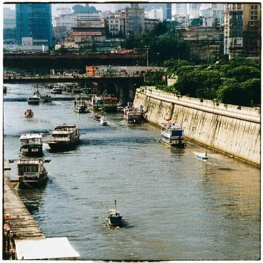</a><a class="ph" href="img/sd35-large/p026/cads/img_3.webp" target="_blank" rel="noopener"></a></div><div class="stats"><span class="st up" title="caption-Vendi on this prompt&#x27;s human axis (1-4, higher = more varied)"><b>capVendi</b>1.89<i>+0.31</i></span><span class="st up" title="VLM rater 1-5 on this prompt&#x27;s human axis (EV-scored)"><b>gridScore</b>3.93<i>+0.07</i></span><span class="st up" title="TPIPS distance on this prompt&#x27;s human axis (0-1, higher = more varied)"><b>TPIPS</b>0.228<i>+0.074</i></span><span class="st dn" title="TPIPS axis SHARE: the axis distance divided by the same four images&#x27; &#x27;overall&#x27; (unconditioned) distance. Higher = more of what diversity there is sits on the axis. Values run below 1 for every method because conditioning on one axis always leaves fewer ways to differ — only the comparison against vanilla means anything."><b>TPIPS/o</b>0.713<i>-0.046</i></span><span class="st dn" title="TPIPS axis distance MINUS the unconditioned distance on the same four images — the same comparison as TPIPS/o but as a difference. Negative for essentially every group, for the same reason the ratio is below 1. Prefer TPIPS/o: the offset between the two distances is multiplicative (their ratio is roughly constant at 0.73), so this difference ends up tracking the unconditioned distance with a flipped sign (r = −0.68) and penalises a method for being diverse at all. Shown for completeness."><b>TPIPS−o</b>-0.092<i>-0.043</i></span><span class="st up" title="DINOv2-Vendi — axis-BLIND diversity, for contrast (1-4)"><b>DINO</b>3.48<i>+0.63</i></span></div></div><div class="method" data-ord="3" data-vals="{&quot;capvendi&quot;: 1.9100337028503418, &quot;gridscore&quot;: 4.0181670275147505, &quot;tpips&quot;: 0.20572523772716522, &quot;tpips_o&quot;: 0.7976217492232338, &quot;tpips\u2212o&quot;: -0.05219806730747223, &quot;dino&quot;: 3.4486570358276367}"><h3>Group inference<span class="k">group_inference</span></h3><div class="grid2"><a class="ph" href="img/sd35-large/p026/group_inference/img_0.webp" target="_blank" rel="noopener"></a><a class="ph" href="img/sd35-large/p026/group_inference/img_1.webp" target="_blank" rel="noopener"></a><a class="ph" href="img/sd35-large/p026/group_inference/img_2.webp" target="_blank" rel="noopener"></a><a class="ph" href="img/sd35-large/p026/group_inference/img_3.webp" target="_blank" rel="noopener"></a></div><div class="stats"><span class="st up" title="caption-Vendi on this prompt&#x27;s human axis (1-4, higher = more varied)"><b>capVendi</b>1.91<i>+0.33</i></span><span class="st up" title="VLM rater 1-5 on this prompt&#x27;s human axis (EV-scored)"><b>gridScore</b>4.02<i>+0.16</i></span><span class="st up" title="TPIPS distance on this prompt&#x27;s human axis (0-1, higher = more varied)"><b>TPIPS</b>0.206<i>+0.051</i></span><span class="st up" title="TPIPS axis SHARE: the axis distance divided by the same four images&#x27; &#x27;overall&#x27; (unconditioned) distance. Higher = more of what diversity there is sits on the axis. Values run below 1 for every method because conditioning on one axis always leaves fewer ways to differ — only the comparison against vanilla means anything."><b>TPIPS/o</b>0.798<i>+0.039</i></span><span class="st" title="TPIPS axis distance MINUS the unconditioned distance on the same four images — the same comparison as TPIPS/o but as a difference. Negative for essentially every group, for the same reason the ratio is below 1. Prefer TPIPS/o: the offset between the two distances is multiplicative (their ratio is roughly constant at 0.73), so this difference ends up tracking the unconditioned distance with a flipped sign (r = −0.68) and penalises a method for being diverse at all. Shown for completeness."><b>TPIPS−o</b>-0.052<i>-0.003</i></span><span class="st up" title="DINOv2-Vendi — axis-BLIND diversity, for contrast (1-4)"><b>DINO</b>3.45<i>+0.60</i></span></div></div></div></article><article class="card hide" data-model="sd35-large" style="--c:#63c7a6" data-ord="9" data-sort="{&quot;capvendi&quot;: 1.973162293434143, &quot;gridscore&quot;: 4.640565217344113, &quot;tpips&quot;: 0.3050353229045868, &quot;tpips_o&quot;: 0.8121849399979988, &quot;tpips\u2212o&quot;: -0.07053840160369873, &quot;dino&quot;: 2.979365825653076}"><div class="card-head"><span class="pid">p027</span><span class="prompt">A robot raven.</span><span class="axis">Different poses (wings spread, flying)</span><span class="tag"><span class="dot"></span>sd35-large</span></div><div class="methods"><div class="method" data-ord="0" data-vals="{&quot;capvendi&quot;: 1.4856233596801758, &quot;gridscore&quot;: 2.9955952964879486, &quot;tpips&quot;: 0.15265841782093048, &quot;tpips_o&quot;: 1.1907876315261832, &quot;tpips\u2212o&quot;: 0.024458885192871094, &quot;dino&quot;: 1.7288333177566528}"><h3>Vanilla<span class="k">vanilla</span></h3><div class="grid2"><a class="ph" href="img/sd35-large/p027/vanilla/img_0.webp" target="_blank" rel="noopener">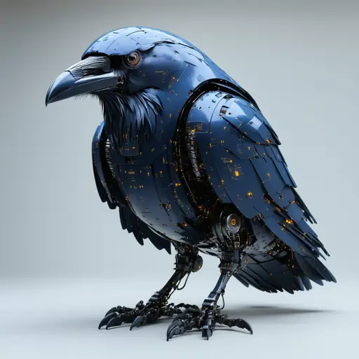</a><a class="ph" href="img/sd35-large/p027/vanilla/img_1.webp" target="_blank" rel="noopener">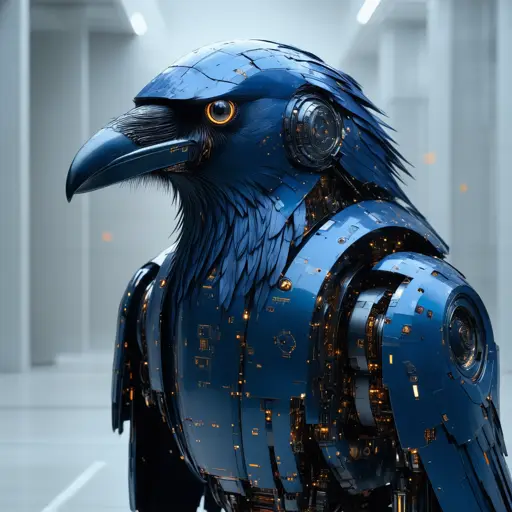</a><a class="ph" href="img/sd35-large/p027/vanilla/img_2.webp" target="_blank" rel="noopener"></a><a class="ph" href="img/sd35-large/p027/vanilla/img_3.webp" target="_blank" rel="noopener"></a></div><div class="stats"><span class="st" title="caption-Vendi on this prompt&#x27;s human axis (1-4, higher = more varied)"><b>capVendi</b>1.49</span><span class="st" title="VLM rater 1-5 on this prompt&#x27;s human axis (EV-scored)"><b>gridScore</b>3.00</span><span class="st" title="TPIPS distance on this prompt&#x27;s human axis (0-1, higher = more varied)"><b>TPIPS</b>0.153</span><span class="st" title="TPIPS axis SHARE: the axis distance divided by the same four images&#x27; &#x27;overall&#x27; (unconditioned) distance. Higher = more of what diversity there is sits on the axis. Values run below 1 for every method because conditioning on one axis always leaves fewer ways to differ — only the comparison against vanilla means anything."><b>TPIPS/o</b>1.191</span><span class="st" title="TPIPS axis distance MINUS the unconditioned distance on the same four images — the same comparison as TPIPS/o but as a difference. Negative for essentially every group, for the same reason the ratio is below 1. Prefer TPIPS/o: the offset between the two distances is multiplicative (their ratio is roughly constant at 0.73), so this difference ends up tracking the unconditioned distance with a flipped sign (r = −0.68) and penalises a method for being diverse at all. Shown for completeness."><b>TPIPS−o</b>0.024</span><span class="st" title="DINOv2-Vendi — axis-BLIND diversity, for contrast (1-4)"><b>DINO</b>1.73</span></div></div><div class="method" data-ord="1" data-vals="{&quot;capvendi&quot;: 1.973162293434143, &quot;gridscore&quot;: 4.640565217344113, &quot;tpips&quot;: 0.3050353229045868, &quot;tpips_o&quot;: 0.8121849399979988, &quot;tpips\u2212o&quot;: -0.07053840160369873, &quot;dino&quot;: 2.979365825653076}"><h3>Prompt expand<span class="k">prompt_expand</span></h3><div class="grid2"><a class="ph" href="img/sd35-large/p027/prompt_expand/img_0.webp" target="_blank" rel="noopener" title="A sleek, chrome-plated robot raven with glowing blue optical sensors perched on a rusted railway crossing signal in a foggy Victorian-era London street, its wings fully spread wide in a static display of mechanical readiness, highly detailed, sharp focus, clean composition, high quality, high resolution."></a><a class="ph" href="img/sd35-large/p027/prompt_expand/img_1.webp" target="_blank" rel="noopener" title="A matte black robot raven with intricate copper circuitry visible on its forearms flying low over a neon-lit cyberpunk cityscape at night, wings spread dynamically to catch the updraft between skyscrapers, highly detailed, sharp focus, clean composition, high quality, high resolution."></a><a class="ph" href="img/sd35-large/p027/prompt_expand/img_2.webp" target="_blank" rel="noopener" title="A vintage brass and steam-powered robot raven hovering mid-air above a cluttered 1920s inventor&#x27;s workshop, wings spread in a powerful propeller-like motion to maintain altitude near hanging gears and blueprints, highly detailed, sharp focus, clean composition, high quality, high resolution."></a><a class="ph" href="img/sd35-large/p027/prompt_expand/img_3.webp" target="_blank" rel="noopener" title="A futuristic silver robot raven diving steeply toward a frozen lake at midnight, wings spread broad and flat to slice through the cold air above the icy surface of a remote arctic tundra, highly detailed, sharp focus, clean composition, high quality, high resolution."></a></div><div class="stats"><span class="st up" title="caption-Vendi on this prompt&#x27;s human axis (1-4, higher = more varied)"><b>capVendi</b>1.97<i>+0.49</i></span><span class="st up" title="VLM rater 1-5 on this prompt&#x27;s human axis (EV-scored)"><b>gridScore</b>4.64<i>+1.64</i></span><span class="st up" title="TPIPS distance on this prompt&#x27;s human axis (0-1, higher = more varied)"><b>TPIPS</b>0.305<i>+0.152</i></span><span class="st dn" title="TPIPS axis SHARE: the axis distance divided by the same four images&#x27; &#x27;overall&#x27; (unconditioned) distance. Higher = more of what diversity there is sits on the axis. Values run below 1 for every method because conditioning on one axis always leaves fewer ways to differ — only the comparison against vanilla means anything."><b>TPIPS/o</b>0.812<i>-0.379</i></span><span class="st dn" title="TPIPS axis distance MINUS the unconditioned distance on the same four images — the same comparison as TPIPS/o but as a difference. Negative for essentially every group, for the same reason the ratio is below 1. Prefer TPIPS/o: the offset between the two distances is multiplicative (their ratio is roughly constant at 0.73), so this difference ends up tracking the unconditioned distance with a flipped sign (r = −0.68) and penalises a method for being diverse at all. Shown for completeness."><b>TPIPS−o</b>-0.071<i>-0.095</i></span><span class="st up" title="DINOv2-Vendi — axis-BLIND diversity, for contrast (1-4)"><b>DINO</b>2.98<i>+1.25</i></span></div><details class="exp"><summary>expanded prompts</summary><ol><li>A sleek, chrome-plated robot raven with glowing blue optical sensors perched on a rusted railway crossing signal in a foggy Victorian-era London street, its wings fully spread wide in a static display of mechanical readiness, highly detailed, sharp focus, clean composition, high quality, high resolution.</li><li>A matte black robot raven with intricate copper circuitry visible on its forearms flying low over a neon-lit cyberpunk cityscape at night, wings spread dynamically to catch the updraft between skyscrapers, highly detailed, sharp focus, clean composition, high quality, high resolution.</li><li>A vintage brass and steam-powered robot raven hovering mid-air above a cluttered 1920s inventor&#x27;s workshop, wings spread in a powerful propeller-like motion to maintain altitude near hanging gears and blueprints, highly detailed, sharp focus, clean composition, high quality, high resolution.</li><li>A futuristic silver robot raven diving steeply toward a frozen lake at midnight, wings spread broad and flat to slice through the cold air above the icy surface of a remote arctic tundra, highly detailed, sharp focus, clean composition, high quality, high resolution.</li></ol></details></div><div class="method" data-ord="2" data-vals="{&quot;capvendi&quot;: 2.266597270965576, &quot;gridscore&quot;: 3.576314359971784, &quot;tpips&quot;: 0.3663008213043213, &quot;tpips_o&quot;: 0.7699572361383916, &quot;tpips\u2212o&quot;: -0.10944095253944397, &quot;dino&quot;: 3.325761318206787}"><h3>CADS<span class="k">cads</span></h3><div class="grid2"><a class="ph" href="img/sd35-large/p027/cads/img_0.webp" target="_blank" rel="noopener"></a><a class="ph" href="img/sd35-large/p027/cads/img_1.webp" target="_blank" rel="noopener"></a><a class="ph" href="img/sd35-large/p027/cads/img_2.webp" target="_blank" rel="noopener"></a><a class="ph" href="img/sd35-large/p027/cads/img_3.webp" target="_blank" rel="noopener"></a></div><div class="stats"><span class="st up" title="caption-Vendi on this prompt&#x27;s human axis (1-4, higher = more varied)"><b>capVendi</b>2.27<i>+0.78</i></span><span class="st up" title="VLM rater 1-5 on this prompt&#x27;s human axis (EV-scored)"><b>gridScore</b>3.58<i>+0.58</i></span><span class="st up" title="TPIPS distance on this prompt&#x27;s human axis (0-1, higher = more varied)"><b>TPIPS</b>0.366<i>+0.214</i></span><span class="st dn" title="TPIPS axis SHARE: the axis distance divided by the same four images&#x27; &#x27;overall&#x27; (unconditioned) distance. Higher = more of what diversity there is sits on the axis. Values run below 1 for every method because conditioning on one axis always leaves fewer ways to differ — only the comparison against vanilla means anything."><b>TPIPS/o</b>0.770<i>-0.421</i></span><span class="st dn" title="TPIPS axis distance MINUS the unconditioned distance on the same four images — the same comparison as TPIPS/o but as a difference. Negative for essentially every group, for the same reason the ratio is below 1. Prefer TPIPS/o: the offset between the two distances is multiplicative (their ratio is roughly constant at 0.73), so this difference ends up tracking the unconditioned distance with a flipped sign (r = −0.68) and penalises a method for being diverse at all. Shown for completeness."><b>TPIPS−o</b>-0.109<i>-0.134</i></span><span class="st up" title="DINOv2-Vendi — axis-BLIND diversity, for contrast (1-4)"><b>DINO</b>3.33<i>+1.60</i></span></div></div><div class="method" data-ord="3" data-vals="{&quot;capvendi&quot;: 2.0319831371307373, &quot;gridscore&quot;: 3.039743932420137, &quot;tpips&quot;: 0.27598345279693604, &quot;tpips_o&quot;: 0.9773208640810624, &quot;tpips\u2212o&quot;: -0.006404310464859009, &quot;dino&quot;: 2.7158563137054443}"><h3>Group inference<span class="k">group_inference</span></h3><div class="grid2"><a class="ph" href="img/sd35-large/p027/group_inference/img_0.webp" target="_blank" rel="noopener"></a><a class="ph" href="img/sd35-large/p027/group_inference/img_1.webp" target="_blank" rel="noopener"></a><a class="ph" href="img/sd35-large/p027/group_inference/img_2.webp" target="_blank" rel="noopener"></a><a class="ph" href="img/sd35-large/p027/group_inference/img_3.webp" target="_blank" rel="noopener"></a></div><div class="stats"><span class="st up" title="caption-Vendi on this prompt&#x27;s human axis (1-4, higher = more varied)"><b>capVendi</b>2.03<i>+0.55</i></span><span class="st up" title="VLM rater 1-5 on this prompt&#x27;s human axis (EV-scored)"><b>gridScore</b>3.04<i>+0.04</i></span><span class="st up" title="TPIPS distance on this prompt&#x27;s human axis (0-1, higher = more varied)"><b>TPIPS</b>0.276<i>+0.123</i></span><span class="st dn" title="TPIPS axis SHARE: the axis distance divided by the same four images&#x27; &#x27;overall&#x27; (unconditioned) distance. Higher = more of what diversity there is sits on the axis. Values run below 1 for every method because conditioning on one axis always leaves fewer ways to differ — only the comparison against vanilla means anything."><b>TPIPS/o</b>0.977<i>-0.213</i></span><span class="st dn" title="TPIPS axis distance MINUS the unconditioned distance on the same four images — the same comparison as TPIPS/o but as a difference. Negative for essentially every group, for the same reason the ratio is below 1. Prefer TPIPS/o: the offset between the two distances is multiplicative (their ratio is roughly constant at 0.73), so this difference ends up tracking the unconditioned distance with a flipped sign (r = −0.68) and penalises a method for being diverse at all. Shown for completeness."><b>TPIPS−o</b>-0.006<i>-0.031</i></span><span class="st up" title="DINOv2-Vendi — axis-BLIND diversity, for contrast (1-4)"><b>DINO</b>2.72<i>+0.99</i></span></div></div></div></article><article class="card hide" data-model="sd35-large" style="--c:#63c7a6" data-ord="10" data-sort="{&quot;capvendi&quot;: 3.3099608421325684, &quot;gridscore&quot;: 4.999444132750887, &quot;tpips&quot;: 0.41710492968559265, &quot;tpips_o&quot;: 0.7730764586642699, &quot;tpips\u2212o&quot;: -0.1224341094493866, &quot;dino&quot;: 3.7338507175445557}"><div class="card-head"><span class="pid">p030</span><span class="prompt">Street corner in a small town at twilight.</span><span class="axis">Some people in the image</span><span class="tag"><span class="dot"></span>sd35-large</span></div><div class="methods"><div class="method" data-ord="0" data-vals="{&quot;capvendi&quot;: 1.0, &quot;gridscore&quot;: 1.013295465370529, &quot;tpips&quot;: 0.1175852119922638, &quot;tpips_o&quot;: 0.3709340559902413, &quot;tpips\u2212o&quot;: -0.19941240549087524, &quot;dino&quot;: 3.301560878753662}"><h3>Vanilla<span class="k">vanilla</span></h3><div class="grid2"><a class="ph" href="img/sd35-large/p030/vanilla/img_0.webp" target="_blank" rel="noopener"></a><a class="ph" href="img/sd35-large/p030/vanilla/img_1.webp" target="_blank" rel="noopener"></a><a class="ph" href="img/sd35-large/p030/vanilla/img_2.webp" target="_blank" rel="noopener"></a><a class="ph" href="img/sd35-large/p030/vanilla/img_3.webp" target="_blank" rel="noopener"></a></div><div class="stats"><span class="st" title="caption-Vendi on this prompt&#x27;s human axis (1-4, higher = more varied)"><b>capVendi</b>1.00</span><span class="st" title="VLM rater 1-5 on this prompt&#x27;s human axis (EV-scored)"><b>gridScore</b>1.01</span><span class="st" title="TPIPS distance on this prompt&#x27;s human axis (0-1, higher = more varied)"><b>TPIPS</b>0.118</span><span class="st" title="TPIPS axis SHARE: the axis distance divided by the same four images&#x27; &#x27;overall&#x27; (unconditioned) distance. Higher = more of what diversity there is sits on the axis. Values run below 1 for every method because conditioning on one axis always leaves fewer ways to differ — only the comparison against vanilla means anything."><b>TPIPS/o</b>0.371</span><span class="st" title="TPIPS axis distance MINUS the unconditioned distance on the same four images — the same comparison as TPIPS/o but as a difference. Negative for essentially every group, for the same reason the ratio is below 1. Prefer TPIPS/o: the offset between the two distances is multiplicative (their ratio is roughly constant at 0.73), so this difference ends up tracking the unconditioned distance with a flipped sign (r = −0.68) and penalises a method for being diverse at all. Shown for completeness."><b>TPIPS−o</b>-0.199</span><span class="st" title="DINOv2-Vendi — axis-BLIND diversity, for contrast (1-4)"><b>DINO</b>3.30</span></div></div><div class="method" data-ord="1" data-vals="{&quot;capvendi&quot;: 3.3099608421325684, &quot;gridscore&quot;: 4.999444132750887, &quot;tpips&quot;: 0.41710492968559265, &quot;tpips_o&quot;: 0.7730764586642699, &quot;tpips\u2212o&quot;: -0.1224341094493866, &quot;dino&quot;: 3.7338507175445557}"><h3>Prompt expand<span class="k">prompt_expand</span></h3><div class="grid2"><a class="ph" href="img/sd35-large/p030/prompt_expand/img_0.webp" target="_blank" rel="noopener" title="A street corner in a small town at twilight with a single elderly man in a plaid shirt sitting on a bench smoking a pipe, lamp posts casting long orange shadows, highly detailed, sharp focus, clean composition, high quality, high resolution."></a><a class="ph" href="img/sd35-large/p030/prompt_expand/img_1.webp" target="_blank" rel="noopener" title="A quiet street corner in a small town at twilight where a young couple, a man with a beard and a woman with curly hair, walk hand-in-hand past a closed bakery, neon signs reflecting in their eyes, highly detailed, sharp focus, clean composition, high quality, high resolution."></a><a class="ph" href="img/sd35-large/p030/prompt_expand/img_2.webp" target="_blank" rel="noopener" title="A street corner in a small town at twilight featuring a group of three teenagers, two boys in hoodies and one girl with a backpack, leaning against a brick wall near a parked vintage car, streetlights humming overhead, highly detailed, sharp focus, clean composition, high quality, high resolution."></a><a class="ph" href="img/sd35-large/p030/prompt_expand/img_3.webp" target="_blank" rel="noopener" title="A street corner in a small town at twilight with a woman in a bright red coat standing alone under an awning, holding a steaming cup of coffee, rain beginning to fall on the wet pavement, highly detailed, sharp focus, clean composition, high quality, high resolution."></a></div><div class="stats"><span class="st up" title="caption-Vendi on this prompt&#x27;s human axis (1-4, higher = more varied)"><b>capVendi</b>3.31<i>+2.31</i></span><span class="st up" title="VLM rater 1-5 on this prompt&#x27;s human axis (EV-scored)"><b>gridScore</b>5.00<i>+3.99</i></span><span class="st up" title="TPIPS distance on this prompt&#x27;s human axis (0-1, higher = more varied)"><b>TPIPS</b>0.417<i>+0.300</i></span><span class="st up" title="TPIPS axis SHARE: the axis distance divided by the same four images&#x27; &#x27;overall&#x27; (unconditioned) distance. Higher = more of what diversity there is sits on the axis. Values run below 1 for every method because conditioning on one axis always leaves fewer ways to differ — only the comparison against vanilla means anything."><b>TPIPS/o</b>0.773<i>+0.402</i></span><span class="st up" title="TPIPS axis distance MINUS the unconditioned distance on the same four images — the same comparison as TPIPS/o but as a difference. Negative for essentially every group, for the same reason the ratio is below 1. Prefer TPIPS/o: the offset between the two distances is multiplicative (their ratio is roughly constant at 0.73), so this difference ends up tracking the unconditioned distance with a flipped sign (r = −0.68) and penalises a method for being diverse at all. Shown for completeness."><b>TPIPS−o</b>-0.122<i>+0.077</i></span><span class="st up" title="DINOv2-Vendi — axis-BLIND diversity, for contrast (1-4)"><b>DINO</b>3.73<i>+0.43</i></span></div><details class="exp"><summary>expanded prompts</summary><ol><li>A street corner in a small town at twilight with a single elderly man in a plaid shirt sitting on a bench smoking a pipe, lamp posts casting long orange shadows, highly detailed, sharp focus, clean composition, high quality, high resolution.</li><li>A quiet street corner in a small town at twilight where a young couple, a man with a beard and a woman with curly hair, walk hand-in-hand past a closed bakery, neon signs reflecting in their eyes, highly detailed, sharp focus, clean composition, high quality, high resolution.</li><li>A street corner in a small town at twilight featuring a group of three teenagers, two boys in hoodies and one girl with a backpack, leaning against a brick wall near a parked vintage car, streetlights humming overhead, highly detailed, sharp focus, clean composition, high quality, high resolution.</li><li>A street corner in a small town at twilight with a woman in a bright red coat standing alone under an awning, holding a steaming cup of coffee, rain beginning to fall on the wet pavement, highly detailed, sharp focus, clean composition, high quality, high resolution.</li></ol></details></div><div class="method" data-ord="2" data-vals="{&quot;capvendi&quot;: 1.0, &quot;gridscore&quot;: 1.0372682173235024, &quot;tpips&quot;: 0.09702645987272263, &quot;tpips_o&quot;: 0.30068408454148754, &quot;tpips\u2212o&quot;: -0.22565925866365433, &quot;dino&quot;: 3.3604750633239746}"><h3>CADS<span class="k">cads</span></h3><div class="grid2"><a class="ph" href="img/sd35-large/p030/cads/img_0.webp" target="_blank" rel="noopener"></a><a class="ph" href="img/sd35-large/p030/cads/img_1.webp" target="_blank" rel="noopener"></a><a class="ph" href="img/sd35-large/p030/cads/img_2.webp" target="_blank" rel="noopener"></a><a class="ph" href="img/sd35-large/p030/cads/img_3.webp" target="_blank" rel="noopener"></a></div><div class="stats"><span class="st" title="caption-Vendi on this prompt&#x27;s human axis (1-4, higher = more varied)"><b>capVendi</b>1.00<i>+0.00</i></span><span class="st up" title="VLM rater 1-5 on this prompt&#x27;s human axis (EV-scored)"><b>gridScore</b>1.04<i>+0.02</i></span><span class="st dn" title="TPIPS distance on this prompt&#x27;s human axis (0-1, higher = more varied)"><b>TPIPS</b>0.097<i>-0.021</i></span><span class="st dn" title="TPIPS axis SHARE: the axis distance divided by the same four images&#x27; &#x27;overall&#x27; (unconditioned) distance. Higher = more of what diversity there is sits on the axis. Values run below 1 for every method because conditioning on one axis always leaves fewer ways to differ — only the comparison against vanilla means anything."><b>TPIPS/o</b>0.301<i>-0.070</i></span><span class="st dn" title="TPIPS axis distance MINUS the unconditioned distance on the same four images — the same comparison as TPIPS/o but as a difference. Negative for essentially every group, for the same reason the ratio is below 1. Prefer TPIPS/o: the offset between the two distances is multiplicative (their ratio is roughly constant at 0.73), so this difference ends up tracking the unconditioned distance with a flipped sign (r = −0.68) and penalises a method for being diverse at all. Shown for completeness."><b>TPIPS−o</b>-0.226<i>-0.026</i></span><span class="st up" title="DINOv2-Vendi — axis-BLIND diversity, for contrast (1-4)"><b>DINO</b>3.36<i>+0.06</i></span></div></div><div class="method" data-ord="3" data-vals="{&quot;capvendi&quot;: 1.0, &quot;gridscore&quot;: 1.1281904303531693, &quot;tpips&quot;: 0.11343938112258911, &quot;tpips_o&quot;: 0.2973512309933839, &quot;tpips\u2212o&quot;: -0.26806023716926575, &quot;dino&quot;: 3.296100616455078}"><h3>Group inference<span class="k">group_inference</span></h3><div class="grid2"><a class="ph" href="img/sd35-large/p030/group_inference/img_0.webp" target="_blank" rel="noopener"></a><a class="ph" href="img/sd35-large/p030/group_inference/img_1.webp" target="_blank" rel="noopener"></a><a class="ph" href="img/sd35-large/p030/group_inference/img_2.webp" target="_blank" rel="noopener"></a><a class="ph" href="img/sd35-large/p030/group_inference/img_3.webp" target="_blank" rel="noopener"></a></div><div class="stats"><span class="st" title="caption-Vendi on this prompt&#x27;s human axis (1-4, higher = more varied)"><b>capVendi</b>1.00<i>+0.00</i></span><span class="st up" title="VLM rater 1-5 on this prompt&#x27;s human axis (EV-scored)"><b>gridScore</b>1.13<i>+0.11</i></span><span class="st" title="TPIPS distance on this prompt&#x27;s human axis (0-1, higher = more varied)"><b>TPIPS</b>0.113<i>-0.004</i></span><span class="st dn" title="TPIPS axis SHARE: the axis distance divided by the same four images&#x27; &#x27;overall&#x27; (unconditioned) distance. Higher = more of what diversity there is sits on the axis. Values run below 1 for every method because conditioning on one axis always leaves fewer ways to differ — only the comparison against vanilla means anything."><b>TPIPS/o</b>0.297<i>-0.074</i></span><span class="st dn" title="TPIPS axis distance MINUS the unconditioned distance on the same four images — the same comparison as TPIPS/o but as a difference. Negative for essentially every group, for the same reason the ratio is below 1. Prefer TPIPS/o: the offset between the two distances is multiplicative (their ratio is roughly constant at 0.73), so this difference ends up tracking the unconditioned distance with a flipped sign (r = −0.68) and penalises a method for being diverse at all. Shown for completeness."><b>TPIPS−o</b>-0.268<i>-0.069</i></span><span class="st dn" title="DINOv2-Vendi — axis-BLIND diversity, for contrast (1-4)"><b>DINO</b>3.30<i>-0.01</i></span></div></div></div></article><article class="card hide" data-model="sd35-large" style="--c:#63c7a6" data-ord="11" data-sort="{&quot;capvendi&quot;: 1.608808994293213, &quot;gridscore&quot;: 4.95135369989484, &quot;tpips&quot;: 0.27892205119132996, &quot;tpips_o&quot;: 0.8640495430192131, &quot;tpips\u2212o&quot;: -0.043885886669158936, &quot;dino&quot;: 2.0402681827545166}"><div class="card-head"><span class="pid">p031</span><span class="prompt">Several elephants grazing in a marshy area with babies.</span><span class="axis">Several should mean more than three, ideally</span><span class="tag"><span class="dot"></span>sd35-large</span></div><div class="methods"><div class="method" data-ord="0" data-vals="{&quot;capvendi&quot;: 1.396714210510254, &quot;gridscore&quot;: 4.2319300459144396, &quot;tpips&quot;: 0.20502765476703644, &quot;tpips_o&quot;: 1.0200270931328108, &quot;tpips\u2212o&quot;: 0.004025489091873169, &quot;dino&quot;: 1.3458397388458252}"><h3>Vanilla<span class="k">vanilla</span></h3><div class="grid2"><a class="ph" href="img/sd35-large/p031/vanilla/img_0.webp" target="_blank" rel="noopener"></a><a class="ph" href="img/sd35-large/p031/vanilla/img_1.webp" target="_blank" rel="noopener"></a><a class="ph" href="img/sd35-large/p031/vanilla/img_2.webp" target="_blank" rel="noopener"></a><a class="ph" href="img/sd35-large/p031/vanilla/img_3.webp" target="_blank" rel="noopener"></a></div><div class="stats"><span class="st" title="caption-Vendi on this prompt&#x27;s human axis (1-4, higher = more varied)"><b>capVendi</b>1.40</span><span class="st" title="VLM rater 1-5 on this prompt&#x27;s human axis (EV-scored)"><b>gridScore</b>4.23</span><span class="st" title="TPIPS distance on this prompt&#x27;s human axis (0-1, higher = more varied)"><b>TPIPS</b>0.205</span><span class="st" title="TPIPS axis SHARE: the axis distance divided by the same four images&#x27; &#x27;overall&#x27; (unconditioned) distance. Higher = more of what diversity there is sits on the axis. Values run below 1 for every method because conditioning on one axis always leaves fewer ways to differ — only the comparison against vanilla means anything."><b>TPIPS/o</b>1.020</span><span class="st" title="TPIPS axis distance MINUS the unconditioned distance on the same four images — the same comparison as TPIPS/o but as a difference. Negative for essentially every group, for the same reason the ratio is below 1. Prefer TPIPS/o: the offset between the two distances is multiplicative (their ratio is roughly constant at 0.73), so this difference ends up tracking the unconditioned distance with a flipped sign (r = −0.68) and penalises a method for being diverse at all. Shown for completeness."><b>TPIPS−o</b>0.004</span><span class="st" title="DINOv2-Vendi — axis-BLIND diversity, for contrast (1-4)"><b>DINO</b>1.35</span></div></div><div class="method" data-ord="1" data-vals="{&quot;capvendi&quot;: 1.608808994293213, &quot;gridscore&quot;: 4.95135369989484, &quot;tpips&quot;: 0.27892205119132996, &quot;tpips_o&quot;: 0.8640495430192131, &quot;tpips\u2212o&quot;: -0.043885886669158936, &quot;dino&quot;: 2.0402681827545166}"><h3>Prompt expand<span class="k">prompt_expand</span></h3><div class="grid2"><a class="ph" href="img/sd35-large/p031/prompt_expand/img_0.webp" target="_blank" rel="noopener" title="A herd of six African elephants grazing slowly through tall reeds in a sun-drenched savanna marsh, including a matriarch in her late fifties, two younger bulls, and four calves of varying sizes, highly detailed, sharp focus, clean composition, high quality, high resolution."></a><a class="ph" href="img/sd35-large/p031/prompt_expand/img_1.webp" target="_blank" rel="noopener" title="A family group of seven Asian elephants feeding on lush wetland grass near a shallow river bend, featuring an elderly matriarch with wrinkled grey skin, three adolescent females, and three newborn calves huddled close together, highly detailed, sharp focus, clean composition, high quality, high resolution."></a><a class="ph" href="img/sd35-large/p031/prompt_expand/img_2.webp" target="_blank" rel="noopener" title="A large troop of eight Indian elephants wading knee-deep in a muddy irrigation canal, surrounded by lush greenery, with a massive matriarch, four sub-adults, and four playful babies splashing in the water, highly detailed, sharp focus, clean composition, high quality, high resolution."></a><a class="ph" href="img/sd35-large/p031/prompt_expand/img_3.webp" target="_blank" rel="noopener" title="A mixed herd of twelve wild elephants foraging in a dense tropical swamp at golden hour, comprising two adult males, three adult females, five juveniles, and four tiny calves nursing or rooting in the soft mud, highly detailed, sharp focus, clean composition, high quality, high resolution."></a></div><div class="stats"><span class="st up" title="caption-Vendi on this prompt&#x27;s human axis (1-4, higher = more varied)"><b>capVendi</b>1.61<i>+0.21</i></span><span class="st up" title="VLM rater 1-5 on this prompt&#x27;s human axis (EV-scored)"><b>gridScore</b>4.95<i>+0.72</i></span><span class="st up" title="TPIPS distance on this prompt&#x27;s human axis (0-1, higher = more varied)"><b>TPIPS</b>0.279<i>+0.074</i></span><span class="st dn" title="TPIPS axis SHARE: the axis distance divided by the same four images&#x27; &#x27;overall&#x27; (unconditioned) distance. Higher = more of what diversity there is sits on the axis. Values run below 1 for every method because conditioning on one axis always leaves fewer ways to differ — only the comparison against vanilla means anything."><b>TPIPS/o</b>0.864<i>-0.156</i></span><span class="st dn" title="TPIPS axis distance MINUS the unconditioned distance on the same four images — the same comparison as TPIPS/o but as a difference. Negative for essentially every group, for the same reason the ratio is below 1. Prefer TPIPS/o: the offset between the two distances is multiplicative (their ratio is roughly constant at 0.73), so this difference ends up tracking the unconditioned distance with a flipped sign (r = −0.68) and penalises a method for being diverse at all. Shown for completeness."><b>TPIPS−o</b>-0.044<i>-0.048</i></span><span class="st up" title="DINOv2-Vendi — axis-BLIND diversity, for contrast (1-4)"><b>DINO</b>2.04<i>+0.69</i></span></div><details class="exp"><summary>expanded prompts</summary><ol><li>A herd of six African elephants grazing slowly through tall reeds in a sun-drenched savanna marsh, including a matriarch in her late fifties, two younger bulls, and four calves of varying sizes, highly detailed, sharp focus, clean composition, high quality, high resolution.</li><li>A family group of seven Asian elephants feeding on lush wetland grass near a shallow river bend, featuring an elderly matriarch with wrinkled grey skin, three adolescent females, and three newborn calves huddled close together, highly detailed, sharp focus, clean composition, high quality, high resolution.</li><li>A large troop of eight Indian elephants wading knee-deep in a muddy irrigation canal, surrounded by lush greenery, with a massive matriarch, four sub-adults, and four playful babies splashing in the water, highly detailed, sharp focus, clean composition, high quality, high resolution.</li><li>A mixed herd of twelve wild elephants foraging in a dense tropical swamp at golden hour, comprising two adult males, three adult females, five juveniles, and four tiny calves nursing or rooting in the soft mud, highly detailed, sharp focus, clean composition, high quality, high resolution.</li></ol></details></div><div class="method" data-ord="2" data-vals="{&quot;capvendi&quot;: 1.5916824340820312, &quot;gridscore&quot;: 4.92198721188496, &quot;tpips&quot;: 0.27320346236228943, &quot;tpips_o&quot;: 0.7636571425144092, &quot;tpips\u2212o&quot;: -0.08455324172973633, &quot;dino&quot;: 1.6189967393875122}"><h3>CADS<span class="k">cads</span></h3><div class="grid2"><a class="ph" href="img/sd35-large/p031/cads/img_0.webp" target="_blank" rel="noopener"></a><a class="ph" href="img/sd35-large/p031/cads/img_1.webp" target="_blank" rel="noopener"></a><a class="ph" href="img/sd35-large/p031/cads/img_2.webp" target="_blank" rel="noopener"></a><a class="ph" href="img/sd35-large/p031/cads/img_3.webp" target="_blank" rel="noopener"></a></div><div class="stats"><span class="st up" title="caption-Vendi on this prompt&#x27;s human axis (1-4, higher = more varied)"><b>capVendi</b>1.59<i>+0.19</i></span><span class="st up" title="VLM rater 1-5 on this prompt&#x27;s human axis (EV-scored)"><b>gridScore</b>4.92<i>+0.69</i></span><span class="st up" title="TPIPS distance on this prompt&#x27;s human axis (0-1, higher = more varied)"><b>TPIPS</b>0.273<i>+0.068</i></span><span class="st dn" title="TPIPS axis SHARE: the axis distance divided by the same four images&#x27; &#x27;overall&#x27; (unconditioned) distance. Higher = more of what diversity there is sits on the axis. Values run below 1 for every method because conditioning on one axis always leaves fewer ways to differ — only the comparison against vanilla means anything."><b>TPIPS/o</b>0.764<i>-0.256</i></span><span class="st dn" title="TPIPS axis distance MINUS the unconditioned distance on the same four images — the same comparison as TPIPS/o but as a difference. Negative for essentially every group, for the same reason the ratio is below 1. Prefer TPIPS/o: the offset between the two distances is multiplicative (their ratio is roughly constant at 0.73), so this difference ends up tracking the unconditioned distance with a flipped sign (r = −0.68) and penalises a method for being diverse at all. Shown for completeness."><b>TPIPS−o</b>-0.085<i>-0.089</i></span><span class="st up" title="DINOv2-Vendi — axis-BLIND diversity, for contrast (1-4)"><b>DINO</b>1.62<i>+0.27</i></span></div></div><div class="method" data-ord="3" data-vals="{&quot;capvendi&quot;: 1.3345904350280762, &quot;gridscore&quot;: 3.9896742078572522, &quot;tpips&quot;: 0.17086048424243927, &quot;tpips_o&quot;: 0.9829807319967228, &quot;tpips\u2212o&quot;: -0.0029582679271698, &quot;dino&quot;: 1.3180458545684814}"><h3>Group inference<span class="k">group_inference</span></h3><div class="grid2"><a class="ph" href="img/sd35-large/p031/group_inference/img_0.webp" target="_blank" rel="noopener"></a><a class="ph" href="img/sd35-large/p031/group_inference/img_1.webp" target="_blank" rel="noopener"></a><a class="ph" href="img/sd35-large/p031/group_inference/img_2.webp" target="_blank" rel="noopener"></a><a class="ph" href="img/sd35-large/p031/group_inference/img_3.webp" target="_blank" rel="noopener"></a></div><div class="stats"><span class="st dn" title="caption-Vendi on this prompt&#x27;s human axis (1-4, higher = more varied)"><b>capVendi</b>1.33<i>-0.06</i></span><span class="st dn" title="VLM rater 1-5 on this prompt&#x27;s human axis (EV-scored)"><b>gridScore</b>3.99<i>-0.24</i></span><span class="st dn" title="TPIPS distance on this prompt&#x27;s human axis (0-1, higher = more varied)"><b>TPIPS</b>0.171<i>-0.034</i></span><span class="st dn" title="TPIPS axis SHARE: the axis distance divided by the same four images&#x27; &#x27;overall&#x27; (unconditioned) distance. Higher = more of what diversity there is sits on the axis. Values run below 1 for every method because conditioning on one axis always leaves fewer ways to differ — only the comparison against vanilla means anything."><b>TPIPS/o</b>0.983<i>-0.037</i></span><span class="st dn" title="TPIPS axis distance MINUS the unconditioned distance on the same four images — the same comparison as TPIPS/o but as a difference. Negative for essentially every group, for the same reason the ratio is below 1. Prefer TPIPS/o: the offset between the two distances is multiplicative (their ratio is roughly constant at 0.73), so this difference ends up tracking the unconditioned distance with a flipped sign (r = −0.68) and penalises a method for being diverse at all. Shown for completeness."><b>TPIPS−o</b>-0.003<i>-0.007</i></span><span class="st dn" title="DINOv2-Vendi — axis-BLIND diversity, for contrast (1-4)"><b>DINO</b>1.32<i>-0.03</i></span></div></div></div></article><article class="card hide" data-model="sd35-large" style="--c:#63c7a6" data-ord="12" data-sort="{&quot;capvendi&quot;: 1.9701218605041504, &quot;gridscore&quot;: 4.999287581884119, &quot;tpips&quot;: 0.3867861032485962, &quot;tpips_o&quot;: 0.875192618552922, &quot;tpips\u2212o&quot;: -0.055157870054244995, &quot;dino&quot;: 2.563737630844116}"><div class="card-head"><span class="pid">p032</span><span class="prompt">An empty street is lined with large umbrellas.</span><span class="axis">Different coloured umbrellas.</span><span class="tag"><span class="dot"></span>sd35-large</span></div><div class="methods"><div class="method" data-ord="0" data-vals="{&quot;capvendi&quot;: 2.26304030418396, &quot;gridscore&quot;: 3.1783074296371363, &quot;tpips&quot;: 0.14423327147960663, &quot;tpips_o&quot;: 0.6796189601799317, &quot;tpips\u2212o&quot;: -0.0679934024810791, &quot;dino&quot;: 3.012470245361328}"><h3>Vanilla<span class="k">vanilla</span></h3><div class="grid2"><a class="ph" href="img/sd35-large/p032/vanilla/img_0.webp" target="_blank" rel="noopener"></a><a class="ph" href="img/sd35-large/p032/vanilla/img_1.webp" target="_blank" rel="noopener"></a><a class="ph" href="img/sd35-large/p032/vanilla/img_2.webp" target="_blank" rel="noopener"></a><a class="ph" href="img/sd35-large/p032/vanilla/img_3.webp" target="_blank" rel="noopener"></a></div><div class="stats"><span class="st" title="caption-Vendi on this prompt&#x27;s human axis (1-4, higher = more varied)"><b>capVendi</b>2.26</span><span class="st" title="VLM rater 1-5 on this prompt&#x27;s human axis (EV-scored)"><b>gridScore</b>3.18</span><span class="st" title="TPIPS distance on this prompt&#x27;s human axis (0-1, higher = more varied)"><b>TPIPS</b>0.144</span><span class="st" title="TPIPS axis SHARE: the axis distance divided by the same four images&#x27; &#x27;overall&#x27; (unconditioned) distance. Higher = more of what diversity there is sits on the axis. Values run below 1 for every method because conditioning on one axis always leaves fewer ways to differ — only the comparison against vanilla means anything."><b>TPIPS/o</b>0.680</span><span class="st" title="TPIPS axis distance MINUS the unconditioned distance on the same four images — the same comparison as TPIPS/o but as a difference. Negative for essentially every group, for the same reason the ratio is below 1. Prefer TPIPS/o: the offset between the two distances is multiplicative (their ratio is roughly constant at 0.73), so this difference ends up tracking the unconditioned distance with a flipped sign (r = −0.68) and penalises a method for being diverse at all. Shown for completeness."><b>TPIPS−o</b>-0.068</span><span class="st" title="DINOv2-Vendi — axis-BLIND diversity, for contrast (1-4)"><b>DINO</b>3.01</span></div></div><div class="method" data-ord="1" data-vals="{&quot;capvendi&quot;: 1.9701218605041504, &quot;gridscore&quot;: 4.999287581884119, &quot;tpips&quot;: 0.3867861032485962, &quot;tpips_o&quot;: 0.875192618552922, &quot;tpips\u2212o&quot;: -0.055157870054244995, &quot;dino&quot;: 2.563737630844116}"><h3>Prompt expand<span class="k">prompt_expand</span></h3><div class="grid2"><a class="ph" href="img/sd35-large/p032/prompt_expand/img_0.webp" target="_blank" rel="noopener" title="An empty city street lined with large, vibrant neon pink umbrellas providing shade over silent storefronts in a futuristic district, highly detailed, sharp focus, clean composition, high quality, high resolution."></a><a class="ph" href="img/sd35-large/p032/prompt_expand/img_1.webp" target="_blank" rel="noopener" title="A quiet residential avenue bordered by massive, deep charcoal grey umbrellas stretched taut over parked bicycles and benches in a modernist park, highly detailed, sharp focus, clean composition, high quality, high resolution."></a><a class="ph" href="img/sd35-large/p032/prompt_expand/img_2.webp" target="_blank" rel="noopener" title="A deserted coastal promenade featuring enormous sky-blue umbrellas fluttering slightly in the sea breeze along a polished wooden boardwalk, highly detailed, sharp focus, clean composition, high quality, high resolution."></a><a class="ph" href="img/sd35-large/p032/prompt_expand/img_3.webp" target="_blank" rel="noopener" title="A sun-drenched market square paved with cobblestones, framed by towering emerald green umbrellas casting cool shadows over empty vendor stalls, highly detailed, sharp focus, clean composition, high quality, high resolution."></a></div><div class="stats"><span class="st dn" title="caption-Vendi on this prompt&#x27;s human axis (1-4, higher = more varied)"><b>capVendi</b>1.97<i>-0.29</i></span><span class="st up" title="VLM rater 1-5 on this prompt&#x27;s human axis (EV-scored)"><b>gridScore</b>5.00<i>+1.82</i></span><span class="st up" title="TPIPS distance on this prompt&#x27;s human axis (0-1, higher = more varied)"><b>TPIPS</b>0.387<i>+0.243</i></span><span class="st up" title="TPIPS axis SHARE: the axis distance divided by the same four images&#x27; &#x27;overall&#x27; (unconditioned) distance. Higher = more of what diversity there is sits on the axis. Values run below 1 for every method because conditioning on one axis always leaves fewer ways to differ — only the comparison against vanilla means anything."><b>TPIPS/o</b>0.875<i>+0.196</i></span><span class="st up" title="TPIPS axis distance MINUS the unconditioned distance on the same four images — the same comparison as TPIPS/o but as a difference. Negative for essentially every group, for the same reason the ratio is below 1. Prefer TPIPS/o: the offset between the two distances is multiplicative (their ratio is roughly constant at 0.73), so this difference ends up tracking the unconditioned distance with a flipped sign (r = −0.68) and penalises a method for being diverse at all. Shown for completeness."><b>TPIPS−o</b>-0.055<i>+0.013</i></span><span class="st dn" title="DINOv2-Vendi — axis-BLIND diversity, for contrast (1-4)"><b>DINO</b>2.56<i>-0.45</i></span></div><details class="exp"><summary>expanded prompts</summary><ol><li>An empty city street lined with large, vibrant neon pink umbrellas providing shade over silent storefronts in a futuristic district, highly detailed, sharp focus, clean composition, high quality, high resolution.</li><li>A quiet residential avenue bordered by massive, deep charcoal grey umbrellas stretched taut over parked bicycles and benches in a modernist park, highly detailed, sharp focus, clean composition, high quality, high resolution.</li><li>A deserted coastal promenade featuring enormous sky-blue umbrellas fluttering slightly in the sea breeze along a polished wooden boardwalk, highly detailed, sharp focus, clean composition, high quality, high resolution.</li><li>A sun-drenched market square paved with cobblestones, framed by towering emerald green umbrellas casting cool shadows over empty vendor stalls, highly detailed, sharp focus, clean composition, high quality, high resolution.</li></ol></details></div><div class="method" data-ord="2" data-vals="{&quot;capvendi&quot;: 2.2168631553649902, &quot;gridscore&quot;: 4.890235761484519, &quot;tpips&quot;: 0.3192158639431, &quot;tpips_o&quot;: 0.8822465127477211, &quot;tpips\u2212o&quot;: -0.04260575771331787, &quot;dino&quot;: 3.3969826698303223}"><h3>CADS<span class="k">cads</span></h3><div class="grid2"><a class="ph" href="img/sd35-large/p032/cads/img_0.webp" target="_blank" rel="noopener"></a><a class="ph" href="img/sd35-large/p032/cads/img_1.webp" target="_blank" rel="noopener"></a><a class="ph" href="img/sd35-large/p032/cads/img_2.webp" target="_blank" rel="noopener"></a><a class="ph" href="img/sd35-large/p032/cads/img_3.webp" target="_blank" rel="noopener"></a></div><div class="stats"><span class="st dn" title="caption-Vendi on this prompt&#x27;s human axis (1-4, higher = more varied)"><b>capVendi</b>2.22<i>-0.05</i></span><span class="st up" title="VLM rater 1-5 on this prompt&#x27;s human axis (EV-scored)"><b>gridScore</b>4.89<i>+1.71</i></span><span class="st up" title="TPIPS distance on this prompt&#x27;s human axis (0-1, higher = more varied)"><b>TPIPS</b>0.319<i>+0.175</i></span><span class="st up" title="TPIPS axis SHARE: the axis distance divided by the same four images&#x27; &#x27;overall&#x27; (unconditioned) distance. Higher = more of what diversity there is sits on the axis. Values run below 1 for every method because conditioning on one axis always leaves fewer ways to differ — only the comparison against vanilla means anything."><b>TPIPS/o</b>0.882<i>+0.203</i></span><span class="st up" title="TPIPS axis distance MINUS the unconditioned distance on the same four images — the same comparison as TPIPS/o but as a difference. Negative for essentially every group, for the same reason the ratio is below 1. Prefer TPIPS/o: the offset between the two distances is multiplicative (their ratio is roughly constant at 0.73), so this difference ends up tracking the unconditioned distance with a flipped sign (r = −0.68) and penalises a method for being diverse at all. Shown for completeness."><b>TPIPS−o</b>-0.043<i>+0.025</i></span><span class="st up" title="DINOv2-Vendi — axis-BLIND diversity, for contrast (1-4)"><b>DINO</b>3.40<i>+0.38</i></span></div></div><div class="method" data-ord="3" data-vals="{&quot;capvendi&quot;: 1.9236575365066528, &quot;gridscore&quot;: 3.042287328393518, &quot;tpips&quot;: 0.17713625729084015, &quot;tpips_o&quot;: 0.6286243931846305, &quot;tpips\u2212o&quot;: -0.1046476811170578, &quot;dino&quot;: 3.0528948307037354}"><h3>Group inference<span class="k">group_inference</span></h3><div class="grid2"><a class="ph" href="img/sd35-large/p032/group_inference/img_0.webp" target="_blank" rel="noopener"></a><a class="ph" href="img/sd35-large/p032/group_inference/img_1.webp" target="_blank" rel="noopener"></a><a class="ph" href="img/sd35-large/p032/group_inference/img_2.webp" target="_blank" rel="noopener"></a><a class="ph" href="img/sd35-large/p032/group_inference/img_3.webp" target="_blank" rel="noopener"></a></div><div class="stats"><span class="st dn" title="caption-Vendi on this prompt&#x27;s human axis (1-4, higher = more varied)"><b>capVendi</b>1.92<i>-0.34</i></span><span class="st dn" title="VLM rater 1-5 on this prompt&#x27;s human axis (EV-scored)"><b>gridScore</b>3.04<i>-0.14</i></span><span class="st up" title="TPIPS distance on this prompt&#x27;s human axis (0-1, higher = more varied)"><b>TPIPS</b>0.177<i>+0.033</i></span><span class="st dn" title="TPIPS axis SHARE: the axis distance divided by the same four images&#x27; &#x27;overall&#x27; (unconditioned) distance. Higher = more of what diversity there is sits on the axis. Values run below 1 for every method because conditioning on one axis always leaves fewer ways to differ — only the comparison against vanilla means anything."><b>TPIPS/o</b>0.629<i>-0.051</i></span><span class="st dn" title="TPIPS axis distance MINUS the unconditioned distance on the same four images — the same comparison as TPIPS/o but as a difference. Negative for essentially every group, for the same reason the ratio is below 1. Prefer TPIPS/o: the offset between the two distances is multiplicative (their ratio is roughly constant at 0.73), so this difference ends up tracking the unconditioned distance with a flipped sign (r = −0.68) and penalises a method for being diverse at all. Shown for completeness."><b>TPIPS−o</b>-0.105<i>-0.037</i></span><span class="st up" title="DINOv2-Vendi — axis-BLIND diversity, for contrast (1-4)"><b>DINO</b>3.05<i>+0.04</i></span></div></div></div></article><article class="card hide" data-model="sd35-large" style="--c:#63c7a6" data-ord="13" data-sort="{&quot;capvendi&quot;: 1.5900834798812866, &quot;gridscore&quot;: 3.7309918961104476, &quot;tpips&quot;: 0.25923049449920654, &quot;tpips_o&quot;: 0.6775085709585641, &quot;tpips\u2212o&quot;: -0.12339270114898682, &quot;dino&quot;: 2.304429769515991}"><div class="card-head"><span class="pid">p034</span><span class="prompt">A man sits at a desk before an open laptop.</span><span class="axis">The colour of the laptop (black, white etc...)</span><span class="tag"><span class="dot"></span>sd35-large</span></div><div class="methods"><div class="method" data-ord="0" data-vals="{&quot;capvendi&quot;: 1.3380582332611084, &quot;gridscore&quot;: 1.3593507249601442, &quot;tpips&quot;: 0.1261770874261856, &quot;tpips_o&quot;: 0.5671321772257705, &quot;tpips\u2212o&quot;: -0.09630559384822845, &quot;dino&quot;: 1.7722758054733276}"><h3>Vanilla<span class="k">vanilla</span></h3><div class="grid2"><a class="ph" href="img/sd35-large/p034/vanilla/img_0.webp" target="_blank" rel="noopener"></a><a class="ph" href="img/sd35-large/p034/vanilla/img_1.webp" target="_blank" rel="noopener"></a><a class="ph" href="img/sd35-large/p034/vanilla/img_2.webp" target="_blank" rel="noopener"></a><a class="ph" href="img/sd35-large/p034/vanilla/img_3.webp" target="_blank" rel="noopener"></a></div><div class="stats"><span class="st" title="caption-Vendi on this prompt&#x27;s human axis (1-4, higher = more varied)"><b>capVendi</b>1.34</span><span class="st" title="VLM rater 1-5 on this prompt&#x27;s human axis (EV-scored)"><b>gridScore</b>1.36</span><span class="st" title="TPIPS distance on this prompt&#x27;s human axis (0-1, higher = more varied)"><b>TPIPS</b>0.126</span><span class="st" title="TPIPS axis SHARE: the axis distance divided by the same four images&#x27; &#x27;overall&#x27; (unconditioned) distance. Higher = more of what diversity there is sits on the axis. Values run below 1 for every method because conditioning on one axis always leaves fewer ways to differ — only the comparison against vanilla means anything."><b>TPIPS/o</b>0.567</span><span class="st" title="TPIPS axis distance MINUS the unconditioned distance on the same four images — the same comparison as TPIPS/o but as a difference. Negative for essentially every group, for the same reason the ratio is below 1. Prefer TPIPS/o: the offset between the two distances is multiplicative (their ratio is roughly constant at 0.73), so this difference ends up tracking the unconditioned distance with a flipped sign (r = −0.68) and penalises a method for being diverse at all. Shown for completeness."><b>TPIPS−o</b>-0.096</span><span class="st" title="DINOv2-Vendi — axis-BLIND diversity, for contrast (1-4)"><b>DINO</b>1.77</span></div></div><div class="method" data-ord="1" data-vals="{&quot;capvendi&quot;: 1.5900834798812866, &quot;gridscore&quot;: 3.7309918961104476, &quot;tpips&quot;: 0.25923049449920654, &quot;tpips_o&quot;: 0.6775085709585641, &quot;tpips\u2212o&quot;: -0.12339270114898682, &quot;dino&quot;: 2.304429769515991}"><h3>Prompt expand<span class="k">prompt_expand</span></h3><div class="grid2"><a class="ph" href="img/sd35-large/p034/prompt_expand/img_0.webp" target="_blank" rel="noopener" title="A man sits at a wooden desk before a sleek, matte black laptop screen glowing with code in a dimly lit home office, highly detailed, sharp focus, clean composition, high quality, high resolution."></a><a class="ph" href="img/sd35-large/p034/prompt_expand/img_1.webp" target="_blank" rel="noopener" title="A man sits at a modern white desk before a glossy white laptop reflecting the morning sun in a bright minimalist apartment, highly detailed, sharp focus, clean composition, high quality, high resolution."></a><a class="ph" href="img/sd35-large/p034/prompt_expand/img_2.webp" target="_blank" rel="noopener" title="A man sits at a dark oak desk before a vibrant, brushed silver laptop displaying complex 3D models in a sunlit creative studio, highly detailed, sharp focus, clean composition, high quality, high resolution."></a><a class="ph" href="img/sd35-large/p034/prompt_expand/img_3.webp" target="_blank" rel="noopener" title="A man sits at a rustic pine desk before a matte grey laptop showing a spreadsheet in a cozy, cluttered study filled with plants, highly detailed, sharp focus, clean composition, high quality, high resolution."></a></div><div class="stats"><span class="st up" title="caption-Vendi on this prompt&#x27;s human axis (1-4, higher = more varied)"><b>capVendi</b>1.59<i>+0.25</i></span><span class="st up" title="VLM rater 1-5 on this prompt&#x27;s human axis (EV-scored)"><b>gridScore</b>3.73<i>+2.37</i></span><span class="st up" title="TPIPS distance on this prompt&#x27;s human axis (0-1, higher = more varied)"><b>TPIPS</b>0.259<i>+0.133</i></span><span class="st up" title="TPIPS axis SHARE: the axis distance divided by the same four images&#x27; &#x27;overall&#x27; (unconditioned) distance. Higher = more of what diversity there is sits on the axis. Values run below 1 for every method because conditioning on one axis always leaves fewer ways to differ — only the comparison against vanilla means anything."><b>TPIPS/o</b>0.678<i>+0.110</i></span><span class="st dn" title="TPIPS axis distance MINUS the unconditioned distance on the same four images — the same comparison as TPIPS/o but as a difference. Negative for essentially every group, for the same reason the ratio is below 1. Prefer TPIPS/o: the offset between the two distances is multiplicative (their ratio is roughly constant at 0.73), so this difference ends up tracking the unconditioned distance with a flipped sign (r = −0.68) and penalises a method for being diverse at all. Shown for completeness."><b>TPIPS−o</b>-0.123<i>-0.027</i></span><span class="st up" title="DINOv2-Vendi — axis-BLIND diversity, for contrast (1-4)"><b>DINO</b>2.30<i>+0.53</i></span></div><details class="exp"><summary>expanded prompts</summary><ol><li>A man sits at a wooden desk before a sleek, matte black laptop screen glowing with code in a dimly lit home office, highly detailed, sharp focus, clean composition, high quality, high resolution.</li><li>A man sits at a modern white desk before a glossy white laptop reflecting the morning sun in a bright minimalist apartment, highly detailed, sharp focus, clean composition, high quality, high resolution.</li><li>A man sits at a dark oak desk before a vibrant, brushed silver laptop displaying complex 3D models in a sunlit creative studio, highly detailed, sharp focus, clean composition, high quality, high resolution.</li><li>A man sits at a rustic pine desk before a matte grey laptop showing a spreadsheet in a cozy, cluttered study filled with plants, highly detailed, sharp focus, clean composition, high quality, high resolution.</li></ol></details></div><div class="method" data-ord="2" data-vals="{&quot;capvendi&quot;: 1.8468074798583984, &quot;gridscore&quot;: 3.4557143500527516, &quot;tpips&quot;: 0.2468133419752121, &quot;tpips_o&quot;: 0.726742958013755, &quot;tpips\u2212o&quot;: -0.09280239045619965, &quot;dino&quot;: 2.617882013320923}"><h3>CADS<span class="k">cads</span></h3><div class="grid2"><a class="ph" href="img/sd35-large/p034/cads/img_0.webp" target="_blank" rel="noopener"></a><a class="ph" href="img/sd35-large/p034/cads/img_1.webp" target="_blank" rel="noopener"></a><a class="ph" href="img/sd35-large/p034/cads/img_2.webp" target="_blank" rel="noopener"></a><a class="ph" href="img/sd35-large/p034/cads/img_3.webp" target="_blank" rel="noopener"></a></div><div class="stats"><span class="st up" title="caption-Vendi on this prompt&#x27;s human axis (1-4, higher = more varied)"><b>capVendi</b>1.85<i>+0.51</i></span><span class="st up" title="VLM rater 1-5 on this prompt&#x27;s human axis (EV-scored)"><b>gridScore</b>3.46<i>+2.10</i></span><span class="st up" title="TPIPS distance on this prompt&#x27;s human axis (0-1, higher = more varied)"><b>TPIPS</b>0.247<i>+0.121</i></span><span class="st up" title="TPIPS axis SHARE: the axis distance divided by the same four images&#x27; &#x27;overall&#x27; (unconditioned) distance. Higher = more of what diversity there is sits on the axis. Values run below 1 for every method because conditioning on one axis always leaves fewer ways to differ — only the comparison against vanilla means anything."><b>TPIPS/o</b>0.727<i>+0.160</i></span><span class="st" title="TPIPS axis distance MINUS the unconditioned distance on the same four images — the same comparison as TPIPS/o but as a difference. Negative for essentially every group, for the same reason the ratio is below 1. Prefer TPIPS/o: the offset between the two distances is multiplicative (their ratio is roughly constant at 0.73), so this difference ends up tracking the unconditioned distance with a flipped sign (r = −0.68) and penalises a method for being diverse at all. Shown for completeness."><b>TPIPS−o</b>-0.093<i>+0.004</i></span><span class="st up" title="DINOv2-Vendi — axis-BLIND diversity, for contrast (1-4)"><b>DINO</b>2.62<i>+0.85</i></span></div></div><div class="method" data-ord="3" data-vals="{&quot;capvendi&quot;: 1.4662219285964966, &quot;gridscore&quot;: 3.219284992827307, &quot;tpips&quot;: 0.16604408621788025, &quot;tpips_o&quot;: 0.5692917606543052, &quot;tpips\u2212o&quot;: -0.12562373280525208, &quot;dino&quot;: 2.1662442684173584}"><h3>Group inference<span class="k">group_inference</span></h3><div class="grid2"><a class="ph" href="img/sd35-large/p034/group_inference/img_0.webp" target="_blank" rel="noopener"></a><a class="ph" href="img/sd35-large/p034/group_inference/img_1.webp" target="_blank" rel="noopener"></a><a class="ph" href="img/sd35-large/p034/group_inference/img_2.webp" target="_blank" rel="noopener"></a><a class="ph" href="img/sd35-large/p034/group_inference/img_3.webp" target="_blank" rel="noopener"></a></div><div class="stats"><span class="st up" title="caption-Vendi on this prompt&#x27;s human axis (1-4, higher = more varied)"><b>capVendi</b>1.47<i>+0.13</i></span><span class="st up" title="VLM rater 1-5 on this prompt&#x27;s human axis (EV-scored)"><b>gridScore</b>3.22<i>+1.86</i></span><span class="st up" title="TPIPS distance on this prompt&#x27;s human axis (0-1, higher = more varied)"><b>TPIPS</b>0.166<i>+0.040</i></span><span class="st" title="TPIPS axis SHARE: the axis distance divided by the same four images&#x27; &#x27;overall&#x27; (unconditioned) distance. Higher = more of what diversity there is sits on the axis. Values run below 1 for every method because conditioning on one axis always leaves fewer ways to differ — only the comparison against vanilla means anything."><b>TPIPS/o</b>0.569<i>+0.002</i></span><span class="st dn" title="TPIPS axis distance MINUS the unconditioned distance on the same four images — the same comparison as TPIPS/o but as a difference. Negative for essentially every group, for the same reason the ratio is below 1. Prefer TPIPS/o: the offset between the two distances is multiplicative (their ratio is roughly constant at 0.73), so this difference ends up tracking the unconditioned distance with a flipped sign (r = −0.68) and penalises a method for being diverse at all. Shown for completeness."><b>TPIPS−o</b>-0.126<i>-0.029</i></span><span class="st up" title="DINOv2-Vendi — axis-BLIND diversity, for contrast (1-4)"><b>DINO</b>2.17<i>+0.39</i></span></div></div></div></article></main>
<footer>Method names are shown (not blinded) — for eyeballing, not rating.
Pick a model above; click any image to open it full size.
Numbers under each grid are that method's score on <em>this prompt's</em> human axis,
with the change vs <code>vanilla</code> on the same prompt.</footer>
<script>
const chips=[...document.querySelectorAll('.chip[data-model]')];
const cards=[...document.querySelectorAll('.card')];
const sums=[...document.querySelectorAll('.sumtab')];
const main=document.querySelector('main');
const sortSel=document.getElementById('sortby');
const reorderBox=document.getElementById('reorder');
let active=chips.length?chips[0].dataset.model:null;

const num=(obj,k)=>{const v=obj?obj[k]:undefined;
  return (v===undefined||v===null||isNaN(v))?null:+v;};
const parse=(el,attr)=>{try{return JSON.parse(el.dataset[attr]||'{}');}catch(e){return {};}};

function applySort(){
  const k=sortSel?sortSel.value:'';
  // Descending, and unscored cards last in their authored order rather than mixed in:
  // a null has no position on the metric, so inventing one would be a lie about rank.
  const keyed=cards.map(c=>({el:c,v:k?num(parse(c,'sort'),k):null,ord:+c.dataset.ord}));
  keyed.sort((a,b)=>{
    if(k){
      if(a.v===null&&b.v!==null) return 1;
      if(b.v===null&&a.v!==null) return -1;
      if(a.v!==null&&b.v!==null&&a.v!==b.v) return b.v-a.v;
    }
    return a.ord-b.ord;
  });
  keyed.forEach(o=>{o.el.classList.toggle('unscored',!!k&&o.v===null);
                    main.appendChild(o.el);});

  cards.forEach(card=>{
    const wrap=card.querySelector('.methods');
    if(!wrap) return;
    const panels=[...wrap.querySelectorAll('.method')].map(
      p=>({el:p,v:k?num(parse(p,'vals'),k):null,ord:+p.dataset.ord}));
    const on=reorderBox&&reorderBox.checked&&k;
    panels.sort((a,b)=>{
      if(on){
        if(a.v===null&&b.v!==null) return 1;
        if(b.v===null&&a.v!==null) return -1;
        if(a.v!==null&&b.v!==null&&a.v!==b.v) return b.v-a.v;
      }
      return a.ord-b.ord;     // authored order is the tiebreak AND the "off" state
    });
    panels.forEach(o=>wrap.appendChild(o.el));
  });
}

function apply(){
  chips.forEach(c=>c.classList.toggle('active',c.dataset.model===active));
  cards.forEach(c=>c.classList.toggle('hide',c.dataset.model!==active));
  // the summary follows the model chips, so the table always describes what is on screen
  sums.forEach(s=>s.classList.toggle('on',s.dataset.sum===active));
}
chips.forEach(c=>c.addEventListener('click',()=>{active=c.dataset.model;apply();}));
if(sortSel) sortSel.addEventListener('change',applySort);
if(reorderBox) reorderBox.addEventListener('change',applySort);
apply(); applySort();
</script>
